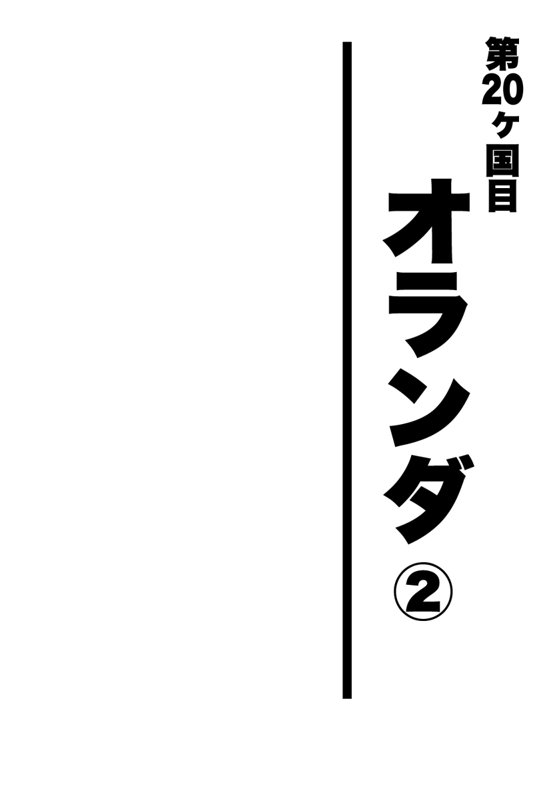

| 珍夜特急5―西欧・モロッコ― | |
| クロサワ コウタロウ | |
| Kurosawa Lettering (2013) | |

※本書に記載されている料金は１９９９年当時のものです。

すねかじりとエクスタシー
ちょうどこの頃、日本では学生の夏休みシーズンが終焉を迎えつつあった。
真面目な学生であれば、そろそろ帰国して後期の授業に備えなくてはならないはずである。
しかし実際私がそうだったように、そんな殊勝な学生は既に希少種となっているようで、ここアムステルダムでもまだまだ日本人の学生を見かけた。
とりわけここアムスには学生の旅行者が多い。確かに若者を魅了するだけの十分な理由がこの街にはあるのだが――。
その日も私はひとり、いつものようにジョリー・ジョーカーでコーヒーをすすりながらジャックヘラを吹かし、ぼんやりと窓の外を行き交う人々を眺めながら日記を書き散らしていた。ここはコーヒーもわりといける。
そんな私に、一見して大学生だとわかる２人組の日本男児が話しかけてきた。
「済みません。日本の方ですよね」
「あ......ええ」
「やっぱりそうだ。よかったあ。僕たちは日本から来たんです。あの......ここ、座ってもいいですか」
「え、ああ。どうぞ」
私は典型的なモンゴロイドの顔立ちをしているのだが、いまだに着用し続けているボロボロのインド服や伸び放題の髭、もうまだらになって肩にかかっている金髪などのせいで、日本人の旅行者からはあまり同族と思われないことが多い。
隣のベッドで２晩を過ごしたにもかかわらず、３日目の朝に初めて挨拶を交わして驚かれるというのも一度や二度ではなかった。
否、日本人に思われないというよりは、こんな汚いヒッピーとは関わりたくないと忌避されていたのかもしれない。うん、こっちの方が説得力がある。
そういった経緯もあって、この時彼らが私をひと目で同郷の人間だと看破できなかったとしても、それは別段私を不快にさせるものではなかった。
「旅は長いんですか？」
「ああ......まあね」
「僕たちは卒業旅行ってことで、夏休みの間ヨーロッパを回っていたんです。もうそろそろ帰んなきゃいけないんだけど、どうしてもアムスには寄りたくて」
「卒業旅行か。いいね」
それはつまり、もし彼らが順当に進級していた場合、私と同い年ということになるではないか。
無論これだけ髭も生え放題で老け顔の男が、自分たちの同学年であろうなどと彼らは露ほども思っていない。それは彼らが端から私を年上扱いしている様子からも容易に窺えた。
ジャックヘラを随分吸い込んでいたせいもあって、私はここで自らの名前以外の紹介を積極的にしようとは思わなかった。
「そこでですね......クロサワさん......あの......それ、吸ってる奴は......マリファナですよね？」
「え？ ああ。そうだよ。ここでは別に大丈夫だからさ。悪いことしてるって訳じゃないよ」
「知ってます。それで......実は僕たちにマリファナの吸い方を教えてほしいんです。僕たちはまだ吸ったことがなくて......それで最後にここアムスに来たんです」
――ああ、何だ。そんなことか。
確かに健全に旅行していれば、こんなものを道中で手に入れる機会もないだろう。
とりわけ同郷の人間と旅していれば、どうしても２人の会話が中心になってしまい、現地人や外国人旅行者とはつるみにくい。
こういった悪い習慣は、そういう人間から教わることがほとんどなのである。それは私自身を振り返ってみても思い当たることだった。
確かにせっかくここアムスに来ておいて、これらを知らないで帰るというのも随分ともったいない話である。それにこのハシシの巻き方は、一度は誰かに教えてもらわないとわかるはずもないし、よしんば巻き方を知っていたとしても、慣れるまでには結構時間がかかる。
おまけに彼らは煙草も吸わないという話だったので、この国を含めた西ヨーロッパでは一般的な巻き煙草すらも巻いた経験はないだろう。
そんな彼らを見て思わず先輩風を吹かせたくなった私は、彼らに正しいマリファナの巻き方をみっちり教え込んでやることにした。
よく考えてみれば、この旅で私に敬語を使って教えを乞うてくる若者は初めてだった。
今まで私がつるんできた日本人たちは、基本的にほとんどが大分年上だったし、仮に同い年や年下であっても、私よりもずっと豊富な経験を有している人ばかりだったので、こうして私から何かを伝えるという機会は滅多になかったのである。
そういった訳で、彼らの素直な態度に私が舞い上がってしまうのも致し方ないことだった。
これを機に２人と行動を共にするようになった私は、率先して彼らに様々なことを教えた。
彼らは当然、私のいるシェルターよりもずっとマシなホテルに泊まっていたのだが、わざわざ私を迎えにこの強制収容所まで足を運んでくれたりもした。
残念ながらこの２人の個人的な情報は記録に残っていない。
しかし話の進行上名前がないのも不便なので、例によって便宜上の名前をつける。
眼鏡をかけたいかにも狡賢そうな文系の方をメガネ。背の高い――どちらかと言うと気の弱そうな体育会系の方をノッポと呼ぶことにする。
基本的にこの２人の関係は、メガネが指揮してノッポがそれに従うという形のようだった。つまり力関係では何故かメガネの方が上らしい。
＊
マリファナの吸い方を覚えた彼らの欲求は俄然エスカレートしてくる。次なるメガネの希望は、飾り窓で女を買いたいというものだった。
まあ、それもよかろう。特にここでならそうそうボられる危険もない。私としても安心して彼らを引率することができよう。
彼らと夕方に落ち合うことを約束して一度別れた私は、宿への帰り道の途中で不覚にも違法ドラッグの売人に捕まってしまった。
ここアムスで認められているのが、自然系のドラッグに限られているというのは既に述べた。
しかしこんな街を悪い大人たちが見逃すはずもなく、飾り窓周辺にはＬＳＤやスピード、エクスタシーからコーク、ヘロに至る化学系ドラッグを違法に売りさばく黒人たちが屯している。
彼らはそれと見込んだ通行人に小走りで近づき、
「コーク、コーク、ヘロ、ヘロ......ＬＳＤ？」
と小声で囁いてくるのである。
真っ昼間からの懸命な営業にもかかわらず、彼らが商談まで持ち込めているのを私はまだ見たことがなかった。
しかしその日に限って私に近づいてきた黒人の売人は、
「エクスタシー？」
とのたもうたのである。
カズさんから化学系ドラッグの知識をある程度修めていた私は、人体にリスクの大きいこれらをわざわざ金を払ってまでやろうとは思っていなかった。
しかしこのエクスタシーだけは、どうしても一度試してみたかったのである。
かつてイスタンブールで慕っていた寺田さんの言葉が思い出される。
（――黒ちゃん、エクスタシーは凄いよお。全身が性器になっちゃうんだよ――）
男にとってこれ以上魅力的な営業トークが果たしてほかにあろうか。
私は売人の下手な囁きよりも、突如として過ぎったこの寺田さんの台詞に背中を押され、ここで初めてエクスタシーを購入してしまった。
私は早速ジョリー・ジョーカーにて、１錠10ドルもした怪しげな錠剤をコーヒーで流し込む。
マリファナのように煙を吸い込むタイプのものと違って、胃で吸収するものはその効果が現れるまでに30分はかかるという。
私は緊張と興奮の入り混じった状態でその30分を待ち続けた。しかし――。
こない。何も起こらないのである。
時計をもう一度注意深く見直しても間違いなく40分は経過している。その時になって私はようやく気づいた。
――やられた！
自分が偽物を掴まされたことに気づいた私は、全速力で店を出ると先ほど私にこの紛い物を売りつけた黒人を捜し回った。10ドルを取られて腹が立ったのはもちろんだが、久しぶりに騙されたことが何よりも悔しかったのである。
果たして例の黒人の売人は、愚かなのか、はたまたそこでしか商売できないのか、先ほどの場所にまだいるではないか。
「おい！ 俺を覚えているよな」
「！ あ、ああ。どうした？ また欲しいのか」
「よくも偽物を掴ませやがったな。全然こねえじゃねえか」
「あ、あれは......そ、そう？ おかしいなあ......そ、そんなはずないんだけど」
「本物を寄越せよ。ないんだったら金を返しな」
「わ、わかったって。そう怒るなよ。今度は本物も本物！ ほれ、な」
「今度も偽物だったら、明日もここに来るからな」
「わ、わかったよ。悪かったって。そんなに怒るなよ。間違いだったんだからさ」
こうして私は、先ほど飲まされたのが一体何だったのかを考えるよりも先に、10ドルを無駄にしなくて済んだことの方に安堵した。
果たして今度のものはどうだったか。
これこそ、まごうかたなきエクスタシーだった。
この錠剤を飲み込んでから20分も経たないうちに、私は自身の身体の変化に気づいた。
どういう訳か身体中の関節という関節がジン、ジンと疼き始めたのである。
そしてその疼きは時間を追うごとに激しくなり、徐々に四肢に力が入らなくなってくる。
これら化学系の薬は普通パーティーなどで踊る前に服用し、その浮くような感覚のまま時間も忘れて朝まで愉しむために使われると聞いたが、この時私はどういう訳か急いでシェルターに戻り、本を読み耽り出したのである。
私は次第に薄れ行く四肢の感覚と、それに相反して鮮明に疼いてくる快感の中、何故か夢中で阿刀田高の「迷い道」（講談社文庫）に迷い込んでいた。
もちろん話の内容が頭に入ることはほとんどなく、ただ単に文字を追い続けていたと言った方が正しい。
ノッポ＆メガネと別れたのは昼前で、ここシェルターに戻ってきたのは、まだ午後に入ってそれほど経っていない頃合いだったにもかかわらず、ふと私がページから目を離した時には既に日は落ちていて、時計を見るとおよそ５時間以上が経過していた。
ちなみにこの間、私は１ページどころか１行も読み進んでいない。
私は完全に時空を超えてしまっていたのである。
あまりにも非現実的なトリップを体験した私は、その得体の知れない恐ろしさから、今後の人生では二度とこの錠剤を口にしないことに決めた。
＊
とにかく何とか学生２人との約束の時間に間に合った私は、まだ依然疼き続ける関節を引きずりながら彼らを連れて夜の街を徘徊した。
手始めにソフトなところからということで、アメリカ人団体観光客御用達の生セックスショーを拝観。
これは白人の男女が、ステージの上でそのまま本番を行うという至極直接的なショーなのだが、よく見える席は全てアメリカ人に占領されていた上に、彼らはとにかく下品でうるさく盛り上がり、一般客である私たちは全くエロスな気分に浸れなかった。
心なしかステージ上の男優に元気がなかったのは、何も彼の体調や女優のせいだけではあるまい。
結局、待ちきれないと急かすメガネのご希望に沿うべく、私はそのあとすぐに彼らを飾り窓に連れていったのだが、私やノッポがほぼ時間通りにすっきりして出てきたのとは裏腹に、メガネは緊張のあまり何もできず、そのまま出てくるという体たらくだった。
全くもったいないことをしたものだ。
こうしてアムスで有終の美を飾ることのできた２人の学生は、翌朝、私に丁寧に礼を言うと一足先に現実へと戻るべく空港に向かう。
出発に際して、昨夜の豪遊がたたってすっからかんになっていたらしいメガネが、金を下ろすためにＡＴＭを探していた時のことである。
私は彼らがこの卒業旅行のために、一体どれくらいの資金を貯めたのか興味本位に訊いてみた。
「え？ お金ですか？ うーん。いくらくらい使ったかなあ？」
「え？ 覚えてないの？ じゃあいくら持ってきたんだよ。全部で」
「ああ、お金はこれ、父のカードを持ってきてるから、これで全部済ませてたんですよ。だから実際にいくら使ったのかは、ちょっとわかんないですね」
「......そ、そうか。ところで君の親父さんは何をやってる人なの？」
「父ですか？ 父は銀行家です」
メガネが父親の職業を「銀行員」と言わなかったことがまた私を驚かせた。
それにしてもこれから財務コンサルタントの会社に就職するという彼は、果たして大丈夫なのだろうか。
メガネが何を得意としているのかは知る由もなかったが、少なくとも彼に財産管理だけは任せたくないと思ったのは私だけではないはずだ。
彼の父親にしてみても、まさか息子が自分のカードでマリファナを吸ったり女を買ったりしているとは思うまい。
少なくても私は自分が汗水垂らして貯めた金で遊んでいる。
したがって警察を除いて誰にも文句を言われる筋合いはないが、もしメガネの父親がここアムスにおける息子の放埓ぶりを知ったとしたら、それくらいは自分の金でやれとでも叱るのだろうか。
同い年でありながらあまりにもかけ離れた金銭感覚を持つ彼らに、私はただ唖然とするだけだった。
そんな私の思いをよそに、メガネとノッポは足取りも軽くアムスの駅に向かっていく。
そのリュックには、先ほど下ろした金で買った土産用の水パイプが忍ばせてあるのを私は知っている。
贖罪
アムステルダムでは人種を問わず、それはもう様々な人々に出会った。
それはもしかしたら、これまで記してきたようにこの街の醸し出す一種独特な退廃感や、また街全体を包み込む鬱屈したエネルギーが、その類いの人間を呼び寄せているのかもしれなかった。
私がこの街で偶然出会ったノブさんという中年男性も、特殊な事情を背負っていたひとりである。
この「ノブさん」というのは今私が思いついたもので、実際の名前は例によってどの資料にも残っていないのだが、彼に関してはたとえ本名を知っていたとしてもこうして仮名扱いにするのが妥当な――そんな過去を持つ男だった。
ある日の夕方、私がいつものようにアムスの街を徘徊していると、必死に地図を見ながら通りの名前を照合している――一見して日本人とわかる中年男性が視界に入った。
特に手助けできるとも思わなかったが、たったひとりで不安に駆られながら異国で迷っている同郷の人間を見過ごせるほど、私の義侠心はまだ錆ついてはいなかった。
「あの、何処に行こうとされてるんですか」
「？ ああ、あなたは日本人ですか？ よかったあ。――いや、観光をしていたんですが迷ってしまいましてね」
「多少でしたらお力になれるかもしれませんが」
「助かります。ところであなたはここに住んでるんですか？」
「いや、そういう訳ではないですけど......」
こうして私はノブさんと知り合った。
この地点を彼の地図に指し示すのはそれほど骨の折れる作業ではなかったが、どうやらノブさんが迷っているのは帰り道に関してだけではないらしい。
ノブさんはお礼をさせてくれと私を近くのバーに誘ったが、そのような雰囲気から、私はその誘いもお礼のためだけではないのだろうと何となく思った。まあ特に予定がある訳でもない身としては、他人の好意を無下に断る理由もなかったのだが。
「――クロサワさん。あの......凄く不躾な質問かもしれませんが......この街で何処か......仕事を紹介してくれるところを知りませんか？」
２人してハイネケンを片手に奥の席に着くや否や、ノブさんはおもむろに私に問うた。
「仕事......ですか？ いや、俺は見ての通り一介の旅行者ですんで、特にこの街にツテがあるという訳ではないんですが......」
「そう......ですか......。いや、何かこうクロサワさんはここでの生活も長そうに見えたもんで......もしかしたらここで仕事をしている人かなと思って......」
この恰好を見てそう思えるなら、やはりノブさんは何処かを病んでいる。
「ここに働きに来たんですか？」
「ええ、実は......ちょっとした事情がありましてね――」
ハイネケンをひと口ぐいと流し込んだノブさんは、その後堰を切ったように自身がここに来るに至った経緯を説明し始めた。
それは私に聞かせたかったというよりもむしろ、言葉の通じる同郷の人間になら誰でもいいから聞いてほしいといった――そんな印象を受けた。
神奈川県生まれのノブさんの前職は、いわゆる麻薬の売人だった。
小柄で小太りな上に人のよさそうなノブさんの外見は、そんな過去があったなど微塵も感じさせない。彼が中学校卒業後、どうしてそんなことをするようになったのかは聞いていないが、扱っていたものがものなだけに、それを想像するのはそれほど難しくなかった。
こうしてしばらく法の外で口に糊していたノブさんだったが、遂にその手もお縄にかかることとなる。
その時には既に妻をめとり、子供もいたノブさんは、後ろ髪を引かれる思いで塀を潜った。
そして数年にわたる刑期を終え、ノブさんが仮釈放の身となって娑婆に出てきた時にはもう自宅に妻と子の姿はなく、残されていたのは１枚の離婚届だけだったという。
狭く重苦しい塀の中で刑期を全うしただけでは、彼の贖罪は果たされなかったらしい。
娑婆に出るための唯一の理由だった奥さんと子供を失ったノブさんは、当然簡単にはその事実を受け入れることができず、何とか彼女たちと復縁する方法を模索する。
そんな中、ノブさんは昔の恩人から、いっそのこと思い切って外国で一旗揚げないかと誘われたらしい。
仕事の内容について、その恩人とやらからはまだ詳しく聞かされていなかったにもかかわらず、誰も自分のことを知らない土地で再出発をはかれるかもしれないというその一心で、ノブさんはなけなしの貯金をはたき、人生で初めて海を越えた。
しかし彼の犯した罪はよほど重かったのか、天の裁きはまだ終わっていなかった。
何とノブさんの全財産の半分は、ここアムスの空港で盗まれてしまったのである。
彼の現在の所持金は７００ドルを少し上回る程度。もちろん日本には何も残していないという。
「――実際、自分でも何であんなことをしていたのかと思います。今となっては」
「......」
「私は当時、中学生の女の子にも覚醒剤を売っていたんですよ。あれは本当に酷かった。わかるんですよ。毎回会う度に彼女がどんどん痩せ細っていくのが。あの子は......あれから一体どうなったのか......今でも考えます」
「......そうだったんですか......」
話を聞き終わった私は、彼に対してかける言葉を持たなかった。
別に彼のしてきたことに今さらどうこう言うつもりもない。
彼の手を染めた商売が、道徳的か否かを決めるのはその時代の法律であって、彼よりもひと回り以上年下の私がそれについて意見を述べるには、全く人生経験が足りないような気がしたのである。
それよりも私が気になったのは、ここで何らかの仕事を紹介すると言ったかつての恩人とやらである。
その人間がどういった類いの人間なのかはわからなかったが、彼がノブさんをここに誘った以上、ノブさんのここでの再出発は彼が面倒を見るべきではないか。
「ええ、それなんですがね......ここに着いてすぐ彼に会ったんですが......その......何とも要領を得ないことでして......つまり、少し待てと言うんですよ。私は資金も大分心細くなってしまったんで、一刻も早く働きたかったんですが......」
「――ところでノブさん。あなたは労働許可書を持ってるんですか？ 普通外国で働く時にはそれがいるらしいですけど......」
「何ですか？ それは？ いや、全然知りません」
私はこの答えに別段驚かなかった。
ノブさんが外国で働くには幾多の困難が予想された。
許可書を持っていないという点については一先ず置いておくにしても――と言うのは、ヨーロッパ諸国はこの時、ミレニアムを控えて空前の好景気に見舞われていたからだ。特にここオランダは外国人の就業に関しても寛大で、市内にある事務所に登録すればそれなりの条件はあるものの、仕事を紹介してもらえるという話を私も聞いたことがあったのである。
私がノブさんの就職が困難だと思ったのは、むしろもっと単純な理由からだった。
彼は全く英語が話せないのである。
否、単純に英語が話せないという程度であれば、もちろん大して問題はない。それは自身のこれまでの旅路を振り返ってみてもわかることである。
しかしノブさんの場合は、英語と言うよりむしろアルファベットすらも知らないのである。
私はこのバーでノブさんに乞われ、生活に必要最低限の英会話を教えようと試みたが、私がアイであり、あなたがユーであることから説明しなくてはならず、しかもそれを彼が実際どの程度まで理解できたかは不明だった。
彼は現在残り少ない資金に怯えながら、何処かのホテルで寝泊まりしているという話だったが、そこで実際にいくら払ってどういう条件で泊まっているのかも心配になってしまう。
私はとにかく話にしか聞いていないこの国の外国人就職斡旋所の存在だけを伝えると、ノブさんと別れてこのバーを出た。もちろん計４本のハイネケンは私が支払った。
私としても、彼の就職を見届けるまでここにいるつもりはなかったし、少々冷たいかもしれないが、これ以上彼に付き合うことによって私自身の予定が狂うのも避けたかったのだ。
いざとなれば大使館に転がり込んで、どうにか帰国費用を借りることくらいはできるだろう。
それに彼は子供ではない。
たとえどんな状況でも、それが自らの決断の招いた結果ならば、甘んじて受け入れなくてはならない神聖な大人の責任を、他人がいたずらに侵害することの方が失礼だろう。
それでも私は、ノブさんが笑顔で頭を下げながら道路の反対側に消えていくのを見て、幾ばくかの罪悪感を覚えずにはいられなかったのだが。
それにしてもノブさんをわざわざこんな異国にまで呼び出した恩人とやらは、一体どういうつもりだったのだろうか。
外国で一般的な仕事をするには、ノブさんが甚だ素養に欠けているということを、その人物が知らない訳がない。
世界でももっとも稼ぎのいい国と言われる日本をわざわざ出国してまで外国で働く利点を、彼はどのように説明したのだろうか。
いくら日本に後ろめたい過去が染み付いているといっても、よほどの旨みがなければ、何も知らない中年男が裸一貫で海を渡ることはないのではないか。
麻薬の売人をしていた人間のかつての恩人となれば、当然その筋の人間である可能性が高い。そんな人間が斡旋する旨みのあって、かつ一旗揚げられる仕事と言えば――。
ここはドラッグを合法とする国である。
この点を踏まえれば、私のこの推測もあながち邪推とも言えないのではなかろうか。
その後のノブさんの消息を私は一切知らない。
脱出方法
既に９月も中旬に差し掛かり、季節は黙ったまま私を次なる旅に急き立てようとしていた。
ヨーロッパの冬は寒い。
確かに最終目的地であるリスボンはもうすぐそこまで迫っていたが、これから先の予定をほとんど決めていない以上、ここアムステルダムで残った金と時間をいたずらに消費するのが得策でないことくらいは私にもわかっていた。
私はノブさんに出会ったあと、何故かすんなりとアムスを出た。
彼との出会いが、私の気持ちに一体どんな作用をもたらしたのかは自分でもわからない。
もしかしたら彼の姿に将来の自分をイメージしたのかもしれないし、ただ単純にもうこの街にいることの意義を失っただけかもしれなかった。
とにかくこうして私は、享楽の日々を送ったアムステルダムを出た。
シェルターには見送ってくれるほど仲のいい旅行者がほとんど残っていなかったこともあり、久しぶりに厳かな出発となる。
前述したようにオランダは小さい国である。
ハンブルク、アムスと続いた夜遊びのせいで予定以上の金を使ってしまっていたために、本来であれば一刻も早く山での生活に戻らなくてはならなかった。
このアムスからそのまま南に進めば、その日のうちに隣国ベルギーに入国できたのだが、そんな事情を押してまでこの日私がオランダの都市ロッテルダムに向かったのには、もちろん理由があった。
私は依然として今後の進路を決めかねていた。
このままほとんど寄り道しないで西進していけば、おそらくひと月もかからずに、私はこの旅の最終目的地であるポルトガルのリスボンにたどり着けるだろう。
実際このペースなら、私が事前に予定していたより２ヶ月以上も早く終着点に到達することになる。
もちろんここまでに使ってしまった予算も予定よりは随分とオーバーしている分、あまりゆっくりしていられないという事情はあったが、それとて丸きりすかんぴんという訳でもない。
残りの資金によっては、もう少しいくつかの国を回ることができるかもしれないし、あるいは逆に急いでリスボンまでたどり着かなくてはならないかもしれなかった。
そう。実のところ私はこの段階にきても、この旅であといくら使えるのかをまだ正確に把握していなかったのである。
こうして旅も終盤に向かいつつある中、私が今後使える予算を正確に把握できていない理由は、その中に組み込まれるべきパリダカの発送費用が欠けていたためだった。
この旅の冒頭でも記したように、私はユーラシア大陸をバイクで横断するにあたり、カルネと呼ばれる車輌用の免税手形を使用している。
これはそこに登録された車輌を外国で売却しないことを前提に、通関の際に通常発生する税金や保証金を免除してもらうための手帳であり、私を含めてこれを使って旅をしているライダーはすべからく、たとえどんな状態になっても必ず持ち出した車輌を連れ帰る義務を負っている。
もとより真のライダーであれば、こんなルールがなかったとしても、１年間共に走り続けた愛機を外国に見捨てて帰ってくることなどできるはずもないのだが。
こういった事情から、私はそろそろ帰国に向けて、パリダカの送り元となる港を探さなくてはならない時期にきていたのである。飛行機を使うことは手続き云々以前に、私の財布が許してくれない。
理想はリスボンの港からそのまま日本行きの船便に乗せるというものだったが、実のところ私はこれについてほとんど期待していなかった。
私がパリダカを日本からカルカッタまで輸送する際、日通に依頼したというのは既に述べた。
この輸送会社を選ぶにあたって、いくつかの情報をもとにこの会社にたどり着いた訳だが、実はこの日通以外に、個人のバイクを輸送してくれる会社が見つからなかったというのが本当のところだったのである。したがって最初から料金交渉の余地など残されていなかったのだ。
勝手知ったる日本ですら輸送会社を満足に探せなかった私が、初めて訪れる国で、しかも数日のうちに日本まで愛機を輸送してくれる安い会社を見つけられるなど、どう考えても虫のよすぎる話だ。
相場がわからないのはもとより、今回は言葉の壁もあろう。出国手続きともなれば、これまでの適当な英語が何処まで通用するかもわからない。
さらに――これも様々な国でライダーに聞いた話だったが――港であれば何処でも日本にバイクを送れるかというと、そういう訳でもないらしい。
つまりもしリスボンから日本行きの船が出ていなかった場合は、そこからはさらに金と時間を使って、ひたすらこの大陸で港巡りをしなくてはならなくなってしまうのである。
私はそういった事態を避けるために、今から海岸線を走る旅に戻り、日本までの船を有していそうな港を見て回るつもりだった。そこでできる限り効率よく、輸送手段を探すことにしたのである。
この計画に際して、ドイツでも随一の港であるハンブルクはその第一の街となるはずだったが、ご存知の通りかの地ではとにかく遊びすぎたこと、そしてよく考えてみればノッチをはじめ、ノイブルクの仲間たちとこうしてメールで連絡が取れる以上、最悪彼やヨギに情報を求められるという点から、特に情報収集には注力しなかった。
それにリスボンに着いたあと、再びハンブルクまで戻ってくるのに距離的な抵抗があったことも書き添えておく。
そういう訳もあって、私にとってロッテルダムは、将来的にパリダカを発送することになるかもしれない最初の候補地であったのである。
＊
大した距離ではなかったことも幸いして、すぐにロッテルダムに到着した私は、いつもと違って街の中心を目指すのではなく、そのまま輸送会社やその倉庫が密集しているユーロポートという港湾地区に向かった。ちなみにこの情報は現地の人への聞き込みによる。
灰色の空の下、若干の雨に身体を濡らしながらも、いくつかの倉庫やオフィスにアポなしで飛び込む。
どの会社の人間も、一見して法人ビジネスで来たのではないとわかる風貌の私に最初のうちは戸惑いながらも、それでも親切にバイクを東京港まで運んでくれそうな会社を紹介してくれた。
私としても、背広姿の人間とこのような恰好のままで交渉することになろうとは、思ってもみなかったのだが。
さすがに希望通りの会社はすぐに見つからず、私は何度も事務所への飛び込みを余儀なくされた。
遂に本日中の取引先発見を諦め、この街に滞在するか、それとも次の予定地であるフランスのカレーに向かうかを迷い始めた時、ふと目の前の小さなオフィスから、一服するためにスーツ姿の中年男性が出てきた。
私は彼に、これまでいくつもの会社でしてきたように取り引きを持ちかけてみた。
するとこの男性社員は当然のように、東京までの船はあるし、私の愛機を輸送することもできると言うではないか。
地獄に仏とはまさにこのことである。
私は早速このウィルソンという会社のオフィスに案内され、そこで輸送の手はずや金額についての説明を受ける。
ウィルソンの提示した条件は以下の通りだった。
【ロッテルダムポート】
・東京港行きは毎週金曜日に出港する。その際の受付は前の週の火曜日まで。
・木箱に入れる場合には発注が必要となるので、さらにこれより５日前にはバイクをここに持ってこなくてはならない。
・実際に測量してみないと確かな見積もりは出せないが、バイクを下で見た限りでは木箱なしの場合、輸送料金自体は４００ドル以下と考えていい。
・東京港までの輸送にかかる日数は長くて30日。もちろんこれには出国や入国の手続き期間は含まれない。
私は正直言ってその予想を遥かに超える安さにまず仰天した。
かつて日本からインドのカルカッタまでパリダカを輸送した際、日通に支払われたのはおよそ25万円である。そこには５万円分の手続き代行手数料が含まれていた。
しかし実際には、入国時の手続きはほとんど自分で行った訳だし、何よりも愛機を受け取るにあたって予定を大幅に超える日数が必要だったのは、既にご存知の通りである。
お陰で出入国の手続きを誰かに金を払ってお願いするという考えは、既に私の頭からは完全に消え失せていた。
それにしても、ここロッテルダムからであれば諸々の手数料がかかったとしてもその半分以下――10万円に届くことのない金額で送れる計算になるではないか。
どう考えてみてもここから東京までの方が、横浜からカルカッタまでの距離よりは長いにもかかわらず――である。
とにかくこの会社にお願いするにしても、実際にパリダカの梱包を依頼するのは少なくてもまだ１ヶ月以上は先の話だったため、私は担当者の名刺だけをいただき、その場をあとにした。
私は暗澹たる曇り空の中、ヘルメットの中で様々なことを考えながらベルギーへと走った。
とにかくパリダカを予想以上に安く送り返せるというのは、私にとって全くの僥倖だった。
それまで私は、実際にこの大陸に愛機を持ち込むのにかかった費用をもとに返送費用を見込んでいたので、これだと少なくても15万円は余分に使える計算になる。
――いや、待て。もしかしたらウィルソンが特別なのではなく、こちらからの輸送費は何処もこの程度なのかもしれない。
そうだ。国によっても若干の料金差はあるだろう。
フランスは除くとしても、これから向かうスペインやポルトガル、イタリアは、この辺りの国々よりも物価が安いと聞く。
それならばそれらの国でも念入りに調査してみる価値はある。
気づかないうちに国境を越えていた私は、日が完全に落ちる前に、ブリュッセルの手前に見つけた町の空き地にテントを張った。
辺りの景色は国境を越えたことなど全く感じさせない。もはやここまで来ると違う国である必要にすら疑問を感じてしまう。
私にとってこのベルギーは、おそらく通過するだけの国となるだろう。
テントに横になると、その日は慣れない飛び込みを何度も繰り返したためか、たちどころに眠りに落ちていった。
それにしても、日本からの輸送にかかった費用は一体何だったのだろうか。
いくら物価の違いが存在すると言っても、２倍以上という値段はどうにも得心しかねる話である。
それとも日本から発送する際には、何か特別な税金が課せられるのだろうか。
既に日通からもらった領収書を失ってしまった今となっては、もうその料金の内訳を調べる術はなかったが、私はもしまた愛機を連れてほかの大陸を放浪する機会があれば、その時には別の輸送会社を探すことに決めた。
もちろんこの時は、そんな機会が予想以上に早く訪れることになろうとは思いも寄らなかったのだが。
戸惑い
何故か私は、この空き地に張ったテントで２泊もしてしまっていた。
このビーチでも森の中でもない場所で、私はパリダカのバックミラーを使って散髪を行った。外れとは言え市内であるにもかかわらず、麻痺した行動をとったものだ。
もちろん私は散髪をするためにここにとどまったのではない。
否、とどまったというよりもむしろ、進むことができなくなっていたのである。
ロッテルダムでの調査により、私はこの旅にまだ幾ばくかの資金的猶予が残されていることを知った。それにより迷いが生じ、それがさらに私を抜け出すことの困難な思索の沼へと引きずり込んでいたのである。
もともと今回のこの放浪計画は、この巨大な大陸を陸路で、しかも自らの力で横断したいというただ漠然とした欲求に端を発していた。
結局この大陸をきちんと東西に横断するという当初の目論見は叶わなかったが、それでもおよそ９ヶ月の時を経て、私はここ西欧のほとんど中心部までやってくることができた。
この地点からゴールとなるポルトガルのリスボンまでは、残すところたった３ヶ国となってしまっている。
それもかつて越えてきたアジアや中東のように、馬鹿でかい国々ではない。
おまけに文化水準的にはどの国も先進国と呼ばれる域に達してしまっている以上、私がここからゴールまでに、再び心躍らせるような冒険に巡り会える可能性はほとんどなかった。
つまりここまで来れば、あとはもう確実にリスボンにたどり着けるというほぼ疑いようのない事実に、私自身気づいてしまったのである。
しかし。
果たしてこれでこの旅を終わらせて本当にいいのだろうか。
このような思いが、ロッテルダムを出てからこの方ずっと私の頭の中を巡り続けていた。
――私は一体何を求めて海を渡ったのだろうか。果たして何を見たかったのだろうか。どうしてここまでパリダカで走り続けてきたのだろうか。――そしてリスボンには一体何が待っているというのか。
おそらくリスボンは綺麗な街だろう。
そしてそこより少し北上したところに存在するユーラシア最西端の地――ロカ岬から眺める大西洋は、地中海よりもずっと深い藍色をしていて、それでいてエーゲ海のようなうっすらとした緑色を漂わせているに違いない。
きっと私はそこでビールを飲みながら、そこまでの道程を思い出しつつ、その感慨に浸るのだろう。そしてそれはもうノスタルジックな時間を過ごすに違いない。
しかし――それが一体どうしたというのか。
今からでも想像できる情景を実際に目の当たりにしたところで、私自身の中で何かが変わるとでもいうのだろうか。
否、決してそんなことはあるまい。むしろ決して何も変わらないと断言できる。
今のままではそんな景色の中に、自分が数万キロを駆け抜けてきた理由を見出せるとは到底思えなかった。
――それでも私は、最西端にたどり着いたことに満足して帰国の途に就けるのだろうか。それでこの人生を賭けた放浪に、迷うことなく終止符を打てるのだろうか。そして――そして何よりもそれから日本に戻ったとして、一体何をするというのだ。
この時私は、自分が日本には何も残していないことを改めて思い出した。住む場所も家具も、仕事も、そしてやらなければならないこともない。
衣類ですら、このパリダカのサイドボックスに入っているもの以外は、何処にも持ち合わせていないのである。
そしておそらく休学中という虫のいい身分もなくなるだろう。
多少金を残して帰ったとしても、復学するために払わなくてはならない学費には到底足りない。否、もともと復学する気などなかったではないか。
（――お前は世界をバイクで走ったくらいで、何かが変わるとでも思っているのか――）
私は不意に、出発前に聞いたバイト仲間の辛辣な言葉を思い出した。
――そうだ。そうなのだ。
バイクで世界を巡ってみたところで、何も変わらないことくらい最初からわかっていたではないか。その時だって彼にもそう反論したのだ。
――それでも私はこの旅を決行したのではなかったか。
もしかしたら口では否定しておきながらも、この旅に出さえすれば自動的に何かが変わると、私は何処かで思っていたのかもしれない。
仲間に囲まれて楽しく過ごしながらも、八王子で苛まれ続けたあの何処か満たされない感覚から抜け出すには、ここまでする必要があったのだと――誰かに言ってほしかったのかもしれない。
３年間をこのためだけに費やしたのだから、何か今後の人生を左右してくれるような出来事がきっと起こるに違いない――そう信じ込みたかっただけなのかもしれない。
そしてそれを成し得た時、私は特別な人間になれるのではないかと。
私は荷物をまとめてパリダカに積んだ。
いつまでもこうして自問自答を繰り返していても何も始まらないし、また何も終わらないことに気づいたからである。
その刹那、私はふと見慣れた愛機――ＸＬ２５０Ｒパリダカの姿に目をとめた。
調子よさそうに規則的な排気音を奏でながら、細めに巻いたドラムをふかしている私を無機質に眺めているこの相棒の姿だけは、出国前と大分変わってしまっていた。
フェイスマスクは外され、ヘッドライトの上にはガソリンバーナーのボトルが積んである。タイヤは先日ドイツでブラジル製のものに交換されていたし、チェーンなどの足回りも既に日本製のものではない。
かつてナイロン製のサイドバッグがかけられていた後部座席には、鉄製の枠が取り付けられ、そこにはヘプコ・ベッカー製のスチールボックスが設置されている。
シートにはトルコで購入した、何の動物のものかもわからない毛皮が敷かれているのだ。
思わず私の口角が緩んだ。
――そうだ。こいつを見てみろ。何も変わらない私と違って、こいつだけは確実に変貌を遂げているではないか。そして既に３万キロを走ってもなお、まだこうして私に早くまたがれと言っているではないか。
そうだ。まだリスボンには到着していない。
いくら近づいたと言っても、ゴールなどまだ数千キロも彼方ではないか。それにもかかわらずここで一体何を決めることができよう。
もしリスボンに着いても、このようなごちゃごちゃしたわだかまりが消えないのであれば、その後もさらに時間と金の許す限り旅を続ければいいではないか。幸い道だけは何処までも続いているのだから。
日本に帰ってからのことも、今考えるのはやめよう。
少なくとも異国の地ですら、こうして何とかやっているではないか。帰ってもそれはそれでどうにかなるに違いない。そうだ。情熱を持ってして何ともならないことなどないのだ。
まだ見たことのない国は山ほどあるが、私の故郷はあの国しかない。日本こそが私にとっていつかは必ず戻らなければならない場所なのだ。
それは必然であって決して恐れることではない。むしろ胸を張って帰れるようになるべきなのだ――。
急に気分の軽くなった私は、そのまま元気よく愛機のシートに敷かれた毛皮にまたがると、いつになく大袈裟に車体を転回させた。
ただ夢中に大きな国道を南下し続けること数時間で、私はまたしてもゲートだけの国境を越えた。ここからは私にとっての22ヶ国目ルクセンブルクとなる。
ルクセンブルクはヨーロッパの中でも、神奈川県くらいの面積しか持たないとりわけ小さい国である。
少々起伏の多い地形は完全に深い森に覆われていて、心なしか私は久しぶりに甘い空気を吸ったように感じた。もちろん今の私にこの国でエンジンを切るつもりはない。
空もそれに呼応するかのように青く晴れ渡り、私はただ一心にこの深い森の先に待ち受けているはずの次の国――フランスを目指して走り出した。
水より安いワイン
ルクセンブルクは私にとって単なるフランスへのゲートに過ぎなかった。
かの国の小さすぎる国土は、それまで牛歩で寄り道を繰り返してきた私の欲求不満を満たすには十分でなく、私はそのまま隣国フランスへと突入した。
もちろんフランスに入国したと言っても、西欧に入ってから幾度となく繰り返してきた越境状況は変わることなく、いつものように新しい国に入った感慨も特にないまま、最初の町ナンシーを目指す。
フランスと言えば、改めて説明するまでもなくイギリス、ドイツと並んで日本人には人気のある国だ。
中でもパリは、多くの日本人にとってある種の憧れと言っても過言ではなかろう。
ルーブルは言わずもがなとしても、シャンゼリゼやモンマルトル、ブローニュの森にエッフェル塔など、この街の名所については見たことがなくても、日本人なら誰でも一度は聞いたことがあるのではないだろうか。
さらにこの街を活動拠点にしていた歴史上の人物に至っては、それこそ枚挙に暇がない。
学生時代に世界史の授業で使われた教科書でも、この国がかつてガリアと呼ばれていた時代まで含めると、何故かかなりのページが割かれていたことに気づく。
このようにフランスという国は、私たち日本人にとってとりわけ重要視されている国に違いなかった。
しかしこの時の私は、まごうかたなき日本男児であるにもかかわらず、この国のいかなる魅力に対しても全くと言っていいほど無関心だった。
ルーブルにあるモナリザやエッフェル塔を望む凱旋門、それこそ無数に存在する美術館や、さらにはブローニュの森に住み着いているという娼婦にさえも、私が心動かされることはなかったのである。
この時私はただ単純に走り続けることを欲していた。
それはまさに私が正真正銘のライダーに近づいたことの証明でもあり、逆に言うとヨーロッパに入って以来強いられてきた都市滞在を中心としたバックパッカーのような生活スタイルが、私に自身の存在理由を改めて突きつけてくれた結果かもしれない。
あくまでライダーで在り続けること。
それがいかなる観光名所にも無関心になっていた私が、自身に今ここにいることを許せる唯一にして無二の理由だった。
ナンシーを越えると、そこには初めて目にするこの国独特の風景が広がっていた。
私にフランスを実感させたのは、ロココ式の荘厳な建造物や洒落たカフェではなく、ただ見渡す限り果てしなく続く農地の丘である。
それはまるで、水中に冷やしたいくつもの巨大な西瓜がその頭を少しだけ大気中にさらしているような――そんな平和な光景だった。
私はこのいつ果てるとも知れない丘を、幾度となく越えてひたすらパリ方面へと向かう。
私はこの時点でもなお、パリに滞在するかどうかを決めかねていた。
あるいはパリに私がもっとも嫌う交通渋滞が皆無で、それでいて目の飛び出るほどに安いユースでも見つかればその可能性もなくはなかったが、まずその前提から言って無理があるのは自身でも気づいていた。
この予想は外れることなく、野宿を経て進入したパリの市内で、私は完全な悪渋滞に捕まった。しばらくの間闇雲にパリを周回していた私は、さほど迷わずパリをそのまま素通りすることに決める。
この車の吐き出す排気と熱気でうだるようなハイウェイからでも、十分にエッフェル塔を観ることはできる。
ここはこれでよしとしようではないか。
こんな交通状況である以上、残念ながらここはライダーのための街ではないのだ。
なに、おそらくパリなどは今後の人生でいくらでも訪れる機会があるに決まっている。
私はこうして、かつてアテネを素通りした時と全く同じ言い訳を自身に言い聞かせ、暑さに悲鳴を上げているパリダカを労わるようにしてパリから離れた。
＊
ベルサイユ宮殿を観ながら再び深い森の中を走る国道に復帰した私は、野営を繰り返しつつノルマンディー方面へと向かった。
右手にはバルト海か北海かわからないが、とにかく海が広がっている。
もうすぐ10月だというにもかかわらず、吹きつけるまだ生ぬるい風を受けながら、私は時折降る雨にも負けず順調に歩を進めていた。
ここまで来ると、あのパリでの渋滞がまるで嘘のようである。
ちょうどノルマンディー半島に差し掛かろうとした辺りで、遥か前方にこの辺りでは珍しく車が列をなしているのを見つけた。
――はて、地図上にはこの辺りに大きな街はないが、何か事故でもあったのだろうか。
しかし私はすぐにこの車列の理由を知ることとなる。
これらは全て、フランス北部では随一の観光スポットであるモン・サン・ミシェルを観に来た観光客のものだったのである。
モン・サン・ミシェルとは、海岸から１キロほど離れた断崖絶壁の孤島にそびえ立つカトリックの修道院である。
かつてこの島は、干潮時にのみ陸続きになるという特異な地理的理由から聖なる島とされていたが、19世紀に造られた道路のお陰で、今はいつでも渡れるようになっているらしい。
ユネスコの世界遺産にも登録されているこの島には、修道院だけでなく町が存在しており、百年戦争の際にはイギリス軍から本土を守る要塞としても利用されていたという。
確かに言われてみれば、対岸から見えるこの島は修道院というよりむしろ完全に城を彷彿させるし、かのアルセーヌ・ルパンに登場した奇岩城のモデルになったという話にも納得できる。
つまりこの辺りに停まっている車は、このモン・サン・ミシェルを観てきたか、もしくはこれから観に行こうとしている観光客たちのものなのだ。
さすがの私もこの美しくそびえ立つ城には興味をそそられ、島に渡ろうと試みてはみたものの、連絡する橋の上で待ち構えていた通行料をせしめる役人に阻まれ、その料金が予想以上に高かったこともあって結局そのままこの地を離れた。
否、おそらくこの世界遺産はここから眺めるのが一番正しい拝観方法なのだ。
きっと中に入ってしまえば、そこはこれまで見てきた中世の由緒ある建造物の集合体にしか過ぎまい。
それから私は進路を南西に取り直すと、ワインの産地で有名なボルドーを有するジロンド県を抜ける。
この辺りの風土は、緑豊かだった東部に比べると極めて乾燥していて、見渡す限り緑だった農地がたちどころに黄色がかったブドウ畑へと見事に変貌する。
ちなみに私はこの地方で、常にこのブドウ畑で野営することを余儀なくされた。
と言うよりも、住宅地とこのブドウ畑以外の土地を見つけられなかったのである。
辺りに同じく黄色がかった夕日を望む頃、国道沿いに手ごろな売店を見つけ、理解できる癖に一切英語を話そうとしない店主を相手に今晩の食料品を買い込む。この国を出るまでの間に、本場のフランス料理を食することはおそらくないだろう。
そのためこの本物のフランスパンと鰯のオイル漬けの缶詰、そして安ワインこそが私にとってのフランス料理ということになる。
フランスの物価はドイツよりも高く感じる。それとも物価とは財布の重さに反比例して上下するものなのだろうか。
唯一の例外と言えば、私が常飲しているこの紙パックのワインだろうか。
店で同じ冷蔵棚に置いてあるヴォルビックと比べてみても安いのである。フランスのワインは水よりも安いというのはどうやら本当の話らしい。お陰で私の常用飲料も、この紙パックの赤ワインになってしまったのだが。
野営地であるブドウ畑から、日々その姿を明確にしつつある山脈を眺めながら、私はこうして乾いた夕日に照らし出されつつ、安ワインを飲んだくれる日々がそろそろ終焉を迎えようとしていることを知った。
そう。あそこに見える山脈こそがピレネーである。
友との別れ
フランスの西海岸を走り続けてきた私は、もう完全に平坦な道のりに飽いていた。
特に直線に近い一本道をひたすら走り続けるのは、市内の渋滞に巻き込まれるよりは大分マシとは言え、ライダーにとっては面白い類いのライドではない。
そういった訳もあり、フランスの旅の締めくくりがこのピレネー山脈だったことは、私とパリダカにとってはせめてもの餞に感じられた。
ピレネーはこれまで越えてきた幾多の山脈と比べてしまえば、それほど険しいという訳でもない。
特に今回私の通過する山脈の北部は、険しいというよりはむしろ恰好のツーリングロードとなっていた。
この山脈の尾根沿いにもう少し南に下れば、そこには小国アンドラがあるはずだったが、とりあえず今回はそこに寄る予定はない。
私はこの山の緑豊かで適度なワインディングロードを、スペイン側へと気持ちよくひた走った。このピレネーをスペイン側に抜けて少し走れば、そこはバスクと呼ばれる地域になるはずだった。
スペインという国は、今でこそひとつの国ということになっているが、その広い国土はいくつかの異なる文化圏により構成されている。
このバスクを含め、カタルーニャやアンダルシア、ジブラルタル海峡を越えたアフリカ側の領土セウタなどがその代表と言える。
特に南部地域は、レコンキスタ以前までの長い間イスラム圏だったこともあり、今でもその面影を色濃く残しているという。
私が手始めに目指したこのバスクという地域が、ここヨーロッパ大陸の中でも一風変わった地域であるらしいことは以前誰かに聞いた。
バスクは現在に至るまでずっと独自の文化を維持し続けており、話す言葉もバスク語というこの地域でしか話されない独特な言語らしい。
このバスク語はヨーロッパのどの言語体系にも属さず、そのことから彼らこそが、ローマの侵略から逃れた現存する唯一のイベリアの民だという説もあるくらいで、とにかく私は由緒ある民族であろう彼らに興味を抱いていたのだった。少数民族という言葉はそれだけで十分に冒険心をかき立てる。
久しぶりに感じる好奇心と素晴らしく走り甲斐のある山道のお陰で、私は高揚した気分のまま距離を伸ばし、いつの間にか国境を越えてスペイン側に入っていた。それでもまだピレネーから脱出できる気配はない。
当然のことながら山道は平地よりずっと距離を稼げない。平地であれば半日もかからずに進める距離であっても、山道となればなかなかそうもいかない。
しばらくこういった広大な山脈から縁遠くなっていた私は、この法則をついぞ忘れてしまっていて、このピレネーを越えるにあたって予想以上の時間を費やすこととなってしまった。
もっともそれはそれでテントの張りやすい山中で野営できることを意味し、それはむしろここまで劣悪な野営環境に甘んじてきた私にとっては嬉しい誤算だった。
もちろんいくら山中と言っても、何処でもテントを張れる訳ではない。
身の安全のためにも、かつてノッチに教わった原則をできるだけ踏襲したい私としては、まず最低でも国道と民家からある程度離れた場所を探したかった。
スカンジナビア半島から戻ってきて以来、私は畑や空き地といったこの原則から著しくかけ離れた場所での野営を余儀なくされていた。
せっかく久しぶりに山中にいるのだ。今夜くらいは快適な夜を過ごしたい。
しかしそんな思いとは裏腹に、どういう訳かこのピレネーでは一向にいい場所が見つからなかった。
山である以上、たとえオフロード仕様のバイクであっても進入できる場所には限りがある。それでも獣道を探し出してはできるだけ奥深い場所まで進んでみるのだが、どういう訳か何処まで行ってもそこには現地人の営みがあった。
はっきり言って、山中での野営でここまで場所探しに苦労するのは初めてだった。
本来であればそろそろ折り合いをつけて、多少不具合な場所でもテントを張るべき時間となっていたが、久しぶりの山中泊に舞い上がっていた私は、しぶとくいつまでも適地を探していたずらに時間を浪費した。
結局沈みゆく太陽によってようやく我に返った私は、泣く泣く理想郷探しを諦め、民家の横を通り抜けて上った先にある高台の耕地を今夜の野営地に決めた。
民家から十分な距離が取れているとは言い難いが、大きな音さえ出さなければ気づかれることはあるまい。
フラつく運転でそこまでの獣道を静かに上った私は、少し開けた場所に斜めにテントを張った。既に夕日はその残光のみをとどめ姿を消してしまっている。
私は完全な闇に包まれてしまう前に、慌ててガソリンバーナーに火を点ける。今晩の夕食はパスタの予定だった。
イランでノッチたちに野営方法を教わって以来、このＭＳＲという登山用のガソリンバーナーは私にとってかけがえのない装備のひとつになっていた。
通常私たちのような長期の大陸ライダーは、ガスやホワイトガソリンではなく、普通のガソリンも使えるバーナーを所有している。
それはもちろん何処でも必ずガソリンだけは手に入るという理由からだったが、私がこれまでの道中で見かけた様々なガソリンバーナーの中でも、このＭＳＲのウィスパーライトは、とりわけその使い勝手や整備性において群を抜いて優れていた。
火力においても、その生理用品を彷彿させる可愛らしい名前とは裏腹に強力である。
ウィスパーライトはごとく部分とガソリンを入れるボトルが別になっており、ボトルには１リットル近くガソリンを入れことができた。つまり予備タンクとしても使えるのである。他人のタンクからガソリンを分けてもらう時にも役に立った。
使い方としては、ガソリンの入ったボトルの口にポンプをねじ込み、数回ポンピングすることで中の圧を高める。
次にごとく部分をポンプに装着、ポンプに取り付けられているバルブを緩めてごとくの下のカップに若干のガソリンを出し、それに点火する。
このカップに灯された炎によって、その上部にある炎の噴き出し口やパイプが加熱され、中を通るガソリンが気化するのである。これをプレヒートと呼ぶ。
こうして気化したガソリンに火が点くと、そこからはバルブの調節による炎の調整が可能になり、強く青い炎を維持できるという仕組みだった。
ボトルが満タンであれば10時間近く火を焚き続けることができる。
この日もこのウィスパーライトは元気よく燃え盛り、私も15分後には、完成したパスタを美味しく味わっているはずだった。
ところがである。
プレヒートも終わり、青い炎を噴き出し続けるＭＳＲを放っておいたまま、私はテントに入れた荷物から食材を捜していたのだが、何やらテント内に映し出された私の影が不自然に大きくなっていることに気づいた。
ふと後ろ（テントの入り口）を振り向いた刹那、私の目には赤々と燃え盛るウィスパーライトが映ったのである。
本来であれば、調整された青い炎が行儀よく鍋を待っているはずのそこには、いきり立った赤い炎が今にもテントの屋根に燃え移らんがごとく乱舞しているではないか。
――な、何故だ？
私はすぐに火の元を確認した。
燃え盛る炎もそのままによく観察してみると、その火の元はごとく部分ではなく、ガソリンの入っているボトルのキャップであることが判明した。
そうか。ボトルのポンプ部分に使われているシールが劣化して、そこから中のガソリンが漏れ出していたのだ。それに外の火が引火したに違いない。
――これはまずい。
ボトルにはまだ結構な量のガソリンが残っているし、もし中まで炎が進入すれば、ボトルごと爆発するのではなかろうか。
どうすればいいのか。
いやいや待て、まずこの炎をここから離そう。
さもなくばテントが全焼という事態にも繋がり得る。
それではこの燃え盛る火の元を、一体どうやって運べばよいのか。
私は数秒思案した結果、バイク用のグローブを装着した手でそっとボトルを掴み、テントの前方にあった砂地の空き地に運んだ。相変わらず炎は猛り狂っている。
私はテントの中から水袋を取り出すと、思い切りこの火にぶっかけた。まず基本的な消火活動である。
しかしガソリンという強力な燃料を有するこの炎はそれくらいの水量で鎮火するはずもなく、むしろいよいよもって燃え盛る。
とりあえず爆発しそうな気配がないのと、テントを全焼の危機から救ったという安堵感から、私は少しずつ落ち着きを取り戻していたが、それは次なる新たな不安に駆られる前の休憩タイムに過ぎなかった。
果たしてその新たな不安とは、この炎が下にある民家に発見され、消防車を呼ばれやしないかということである。
確かにこの状況が危険なのは認めるが、何も消防車を呼ばれるほど大袈裟なものではなかろう。
しかもそうなれば、私は間違いなく消防隊員や警官に事情聴取されることになるだろうし、そんな七面倒臭い展開は何としてでも避けたかった。そう言えば私の荷物には、アムスから持ち出していたハシシがまだ入ったままだ。
とは言え、どれだけ考えてみても現時点でこれ以上の打つ手を見出せなかった私は、結局ボトル内に残ったガソリンが減るのを待つよりほかなかった。
当然パスタはおあずけである。私はただひたすら燃え盛る炎を漫然と眺め続けた。
果たしてどれくらいの時間が経っただろうか。
完全なる闇に包まれた森の中、唯一煌々とした光を放ち続けていた炎も遂に鎮火の兆候を見せ始める。グローブをはめた手で恐る恐るボトルに触れてみると、その重さは先ほどよりも随分軽くなっていた。
頃合いを見て私は、水袋の中に残されていた水を一気にこの炎に浴びせた。
あっという間に鎮火に向かった残り火に、畳みかけるように砂をかける。
こうして私は何とか自身の全焼と山火事、ひいては消防署や警察の厄介になるという最悪の事態を免れたのだった。
完全に消化された跡には、黒こげになったウィスパーライトが無残な姿で私を恨めしそうに見ていた。私はこの旅において、これまでずっと暖を与え続けてくれたこの優れた装備に、静かに別れを告げた。
その途端、このＭＳＲと切り抜けてきた多くの場面が走馬灯のように流れる。
特に極寒地での降雨のあとなどは、こいつなしには到底乗り切ることはできなかっただろう。
ようやく安堵の床に就いた私は、果たしてこれからどうやって野営生活を送ろうかという思案に明け暮れた。
ここまで野営生活が定着してしまった以上、残り少ないとは言え、これからの生活にバーナーがないと不便極まりない。何とかして２代目のウィスパーライトを手に入れるよりほかないだろう。
もちろん日本で購入した際の値段を知っている以上、痛い出費となるのはわかっていたが、優れた一品であればこそケチるのはやめた。
むしろ私の懸念は、この逸品を果たしてここスペインで手に入れられるかどうかという点だった。そんじょそこらのガスバーナーとは訳が違うのである。
専門的な登山用品店、あるいはアウトドアショップでなければ、おそらく見つけることは叶うまい。
この国でそんな店を見つけられる可能性がもっとも高い街。それは間違いなく首都マドリッドに違いなかった。
こうして私は、急遽マドリッドに向かうこととなった。
バル
「ピレネーを越えればそこはもうアフリカだ」
かつてナポレオンがスペイン遠征に向かう際に放ったとされるこの言葉の通り、フランス側からピレネーを抜けた私の目には、これまでとは全く異なる赤茶けた大地が広がっていた。
先日までの緑豊かな大地が嘘のように、そこには枯れ果ててただひたすら何もない荒野が存在するのみである。これまで荒野の類いには飽きるほどお目にかかってきた私にとっても、このイベリアの大地には目を見張るものがあった。
とにかく赤い。
それは曇り空と相まってさらに怪しげな様相を呈している。
私はこの時久しぶりに、この荒野という地形が醸し出すある種の畏怖に似た印象を思い出さずにはいられなかった。日本にこういった荒野と呼べる大地はない。そのためか私は様々な景観の中でも、特にこの荒野の荒々しさに恐怖するのである。
私の当面の目的地は、この巨大な半島の中心部に位置する首都マドリッドである。この街でウィスパーライトにかわるバーナーを手に入れないことには、このせっかくの野営に適した国を楽しめそうにない。
そこで私はもともと考えていたバスク地方を抜け、そのままビスケー湾沿いに西進してリスボンを目指すという進路を、無理矢理イベリア半島の中央を突破するものに変えた。
ビルバオを境に南下し始めた私は、かつてのイランを彷彿させる恐るべき強風に襲われる。
例によって辺りにこの暴風を遮るものは何ひとつないので、普段以上の集中力をもってして走行することを余儀なくされる。
ちなみにこの風という奴は、おおよそ降雪に次いでライダーの嫌う気象状況と言っていい。強風に比べれば雨など全く可愛いものである。
雨はせいぜい濡らすことによって不快感を与えるだけだが、強風は下手をするとライダーを車輌ごと対向車線に押し出したり、逆に国道から引きずり下ろしたりする。
もちろんこれらは全て我らライダーの命運に直結する問題で、私はこれを「死神」ならぬ「死風」と呼んでいた。
おまけに風は野営をも困難にする。
バーナーが焚けなくなるのはもちろんのこと、そのタイミングによってはテントそのものを吹き飛ばしてしまうのである。
おのれイベリアの悪魔め。ウィスパーライトのみならず、今度は私のテントまでも奪い去るつもりか。
私はリスボンを目の前にして、これ以上装備を失うことだけは避けたかったし、あまつさえ対向車と正面衝突して志半ばにて果てるなどという事態は、もっと望むところではない。
できるだけ早くマドリッドに到着できるよう、この日は夜間走行をも辞さない覚悟でパリダカを駆った。
＊
やはり夜になってしまったものの、運よく前述したいずれの悲劇にも見舞われることなく、私は無事マドリッドに進入できた。とは言え既に暗くなってから大分経っていたので、マドリッドという街の全貌はあまりはっきりと確認できていない。
夜間走行を覚悟した時点で宿についても抜かりなく目星をつけていた私は、街のセントラルを避けて外れにあるカサ・デ・カンポと呼ばれる大きな公園に到着した。
ここにユースがあることは、既に現地人にも確認済みである。
公園の中のユースであれば駐車場の有無に関してはまず心配ないだろう。
チェックインを済ませた私はさっさと荷物をドミトリーに運び入れると、３日までしか連泊を許されないこの宿にいられるうちに何とかバーナーを手に入れるべく、受付で手に入れた市内地図と格闘し始めた。
翌朝早くに起床した私は、地下鉄を使って市内へと赴く。
街の中心を走るグランビアと呼ばれる通りには、大きな百貨店やデパートなどが建ち並ぶ。マドリッドの中でもとりわけ華やいだこの地区では、探せばもっと色々な見所もあったのだろうが、残念ながら今の私にそれらに対する興味はない。――あるのはアウトドアショップのみである。
黒髪の美女たちが洒落た装いで行き交う中、私は自分が甚だ場違いな恰好であることなど気にもとめず、日本であれば入るのもためらわれてしまうような高級デパートにも物怖じせずに挑む。
このような挑戦を幾度か経て、ある大きな百貨店の中に私はようやくそれらしい一角を発見した。
様々な目新しい野営装備に目移りしながらも、私はまずバーナーの置いてあるコーナーへと向かう。果たしてここにＭＳＲのものはあるだろうか。
しかし結果は一目瞭然だった。
ＭＳＲどころか、コールマンのキャンプ用しか置いていない。どれもカセットボンベをはめ込むタイプのものだ。
私は恐れていた事態が現実となったことに愕然としつつ、呆然と立ち尽くした。
もちろんこれからまだほかの店を探して、そこでＭＳＲが見つかるという可能性もなくはなかったが、ここまで大きな百貨店ですら置いていないのであれば、捜索を続けるためにある程度の日数が必要になるのは明らかだった。
実のところ私は、日本でウィスパーライトを探した際にもかなり苦労したのだ。
勝手知ったる東京の、さらにその中の八王子ですら容易に探し出せなかったものを、どうして他人様の街で簡単に見つけることができようか。
私は探し物に関して運というものを端から信じていなかった。
百貨店でいくつかのバーナーの前を行ったり来たりしながら思案を重ねた結果、ここは断腸の思いで、コールマンのカセットタイプを購入することに決めた。
ポルトガルのリスボンをゴールとして考えた場合、そこまでに必要な野営はせいぜいあと数日となる。２、３個の予備カセットを持っていけば、その後旅を続けるにしても十分だろうと考えたのである。
それにこの辺りは先進国だらけである。何処か大きめの街に行けば、カセットの予備くらいは手に入るに違いない。
こうして私はおよそ30ドル分のペセタで、バーナー本体と予備のカセットを購入した。
よくよく考えてみれば、こちらの方がコスト的には断然安く済んだ訳だし、愛機のボックスにしまうにしても随分とスペースを節約できたことになる。否、カセットボンベがある分差し引きゼロというところか。
とにかく予定していた仕事が意外に早く終わったため、私は一度ユースに戻ることにした。
確かにマドリッドは大都会だったし、由緒ある古い街並みを見ながら散策するのも悪くなかったが、バーナーを手に入れて安堵した私は一先ず今後の行動を整理しておきたかったのである。
「やあ、目当てのものは手に入ったようだね」
部屋に戻った私を待っていたのは、アンドレアというバルセロナから来た長髪のスペイン男だった。
独特なスペイン訛りのある彼の英語は、どちらかと言うと私たち日本人には聞き取りやすいのではなかろうか。
「ああ。欲しかったものとは違うものしかなかったけど、まあよしとしたんだ」
「そうか。バルセロナだったら私も色々と案内できたと思うんだが。私にとってもマドリッドは初めてでね。ところで君......これからの予定は決めているのかい？」
「いや、特に決めてはいないけれど」
「それならこれから夜のマドリッドにでも繰り出さないか？ バルで一杯といこうじゃないか」
「いいね。行こう」
シャワーを浴びて一応最低限の汚れを落としたあと、私はアンドレアと再び地下鉄に乗り込み、夜のマドリッドに向かった。
＊
ここスペインには、これまで私が回ってきたヨーロッパ諸国にはない風習があった。それはシエスタという昼寝の習慣である。
私もここまで野営ばかりだったために気づかなかったが、どうやらこの国では昼から夕方までの間、このシエスタのためにほとんどの店が一旦閉まるらしい。
これまでの感覚でちょっと遅めに昼食でもとろうと思っても、なかなか入れる店が見つからないのである。
こうして一度閉めた店は夕方から営業を再開するのだが、特に飲食店はそこからが長い。
平気で夜中の２時、３時まで営業しているのである。
24時間営業に慣れている日本人にとってはさして驚きを感じないかもしれないが、基本的にヨーロッパでは大きな街であっても24時間開いている店を探すのは難しい。
それを踏まえれば、このスペインという国がいかに夜型の国であるかをご理解いただけるのではなかろうか。
さらにバルと呼ばれるこの国のバーも、ほかの国には見られないいささか特異な点があった。
席に着いてセルベッサと呼ばれるビールを頼むと、冷えたビールのジョッキのほかに、小さな皿に盛られたつまみが出される。
これらはタパスと呼ばれていて、その種類はイカリングのフリットなど揚げ物が多い。
これをつまみながらビールを飲むのだが、ジョッキが空になって２杯目を頼むと、これまた違った種類のタパスが出されるのである。
つまりビールを頼むごとに新しいつまみがやってくるのだ。
しかも――ここが大事なのだが――何とこれらタパスは全てタダなのである。
こういった訳もあって、私程度の胃袋の大きさであればビール数杯で腹一杯のタパスを食べられることになり、これで十分な夕食のかわりとなる。
居酒屋でビールを飲みながら夕食も兼ねる――という習慣を持っている私たち日本人にとっては、何とも嬉しい限りである。
これまで回ってきた国々では、レストランは別にして、食事できる飲み屋というものはなかった。
私とアンドレアは適当に見つけたバルに入ると、早速セルベッサを注文してタパスに舌鼓を打った。もちろんセルベッサの味とて文句のつけどころはなく、ドイツの黒ビールやチェコのピルスナーと比べてみても遜色はない。
その時私はふと、このバルの隅にモップを持って立っているひとりのウェイターに気づいた。
「ああ。彼か。そうか。君には馴染みがないんだね。よし、見てな」
アンドレアはそう言うと、自分が今までかじっていたチキンの骨をぽいと床に放り投げた。するとモップのボーイが寄ってきて手にした得物で骨をすっと回収し、またもとの位置に戻った。
「バルではね、骨に限らずゴミは全部下に落とすことになってるんだよ。彼はその掃除係さ」
なるほど。言われてみれば、ほかの席の下にも色々な種類の食べかすが散らかっている。
他国の文化について文句を言うつもりは毛頭ないが、これでは鼠などが発生しやすいのではなかろうか。
かつてヨーロッパでは、鼠を媒介にして広がるペストによって多くの人命が失われたと聞く。その一因がこのバルにあったのでは――と考えてしまうのは少々飛躍のしすぎだろうか。
私とアンドレアは、その後も何度か店を変えてセルベッサとタパスを楽しんだ。
首都とは言え、マドリッドの夜がアムスやハンブルクのそれに比べてひっそりとしているのは、あるいは私たちが選んだ地区のせいだろうか。
知ってか知らずかアンドレアが案内してくれたこの路地裏は、弱々しい街明かりがかろうじて雨上がりの石畳を照らし、その反射光のお陰でどうにかその存在を知らしめている――そんな風情だった。
私はその光景に危険や陰鬱さというより、何処かもの寂しげな哀愁を感じてしまった。
ゲルニカの中の私
私は次第にマドリッドを、否、スペイン自体を好きになっていった。
この国にはシエスタをはじめとして、今まで巡ってきたヨーロッパの国にはないルーズさがある。それが私にとってはどうにも心地よかった。
もちろん彼らは、かつて私がアジアで目にしてきたような、本当に何もせずに日がな１日ブラブラしている輩とは異なっていたが、それでもここの人々には生活を営むにあたって汲々としたところが見当たらない。
日中働いた時間とほぼ同じ時間をバルやレストランで過ごす彼らを見ていると、生きていくのがそれほど辛くないように思えてしまうのである。
少なくともこの街に、険しい顔をして地下鉄に乗っているおっさんは見当たらない。
スペインはヨーロッパの国にしては珍しく、そこに住むほとんどの人が英語を解さない。
私がこの旅の最終目的地にしているポルトガルも、同様にほとんど英語が通じない国だと聞いていた。
もし私がロカ岬に到達したあと、そのままポルトガルから愛機を日本に送らないとすると、当然また旅を続けなくてはならなくなる。その場合このスペイン南部かフランス、もしくはイタリアの港で、パリダカの発送を行ってもらえる会社を探すことになるだろう。
あるいはもっと走って、オランダのロッテルダムにまで戻らざるを得ないということもあり得る。
いずれにしてもそうなると、このスペインを再び通過しなければならない訳で、それはつまりこの国で過ごす時間が長くなることを意味していた。
トルコやイランの時を思い出してみればわかる通り、英語が全く通じないにもかかわらず、そこである程度の日数を過ごさなくてはならない場合は、多少であれその国の言葉を覚えておいた方が便利だ。
そういう訳で、私は同室のアンドレアに数の数え方を含め、簡単なスペイン語を教わることにした。
英語と違ってスペイン語の発音は日本語のそれに極めて近く、私はアンドレアの発音をひたすら模倣し、その度に大袈裟な賞賛を受けた。これは英語圏では考えられなかったことである。エストニアでクリスチャンに「Ｌ」と「Ｒ」の発音を矯正されたことは記憶に新しい。
アンドレア曰く、スペイン語の発音は英語圏の人間には難しいらしい。
英語が外国語の全てと言わんばかりに教育されている日本人は、とかくその発音に関して劣等感を抱きがちだ。
世界でももっともやさしい言語とされている英語ですら、まともに発音できないという事実を突きつけられてしまうと、もうそれだけで嫌になってしまうのも当然と言えば当然である。
しかしそれは大きな間違いである。英語がやさしいと言われる所以はその文法に由来するもので、発音に関しては数ある言語の中でもかなり難しい部類に入る。
英単語の中には日本語にもともと存在しない音を使用しているものも多く、私たちにとってそれらが正確に発音できないのはむしろ当たり前なのである。
もし日本人の最初に接する外国語がスペイン語であれば、少なくとも発音コンプレックスはなくなるだろう。
しかしスペイン語を含めたイタリア語やフランス語などの――いわゆるラテン系言語は文法が難しい。というより主語の性によって動詞が多彩に変化するため、それらの変化形をいちいち覚えなくてはならないのである。
大体私には、動物以外の名詞にも性別が存在するというのがまず理解できない。
男性名詞とか女性名詞などという日本語すら、よく考えてみればおかしいではないか。
かつて私はノッチからドイツ語を習おうと試みたことがある。
ちなみにドイツ語には男性、女性のほかに、中性というものまである。この国では言語にまでゲイを作るのか。
「それじゃあ、ドイツ語のバイク（Motorad）って単語の性は何？」
「バイクは中性（Das）だ」
「それならヘルメットは？」
「女性（Die）だ」
「......で、何でそうなるの？」
「基本的にバイクは男が乗るものだが、男は永遠の子供だ。だからバイクは中性（中性は子供も表すらしい）になる。しかしヘルメットなどという防護品は本来女のためのものだ。ちなみに俺は、ヘルメットなんてものは交通規則上致し方なくかぶってるが、本来ならかぶりたくない。そういった訳でヘルメットは女性なんだ」
もちろんこれはノッチ流のジョークである。
つまりドイツ人ですら、その名詞の性がどうやって決められたかなど知らないのだ。
そんな論理的でないものをただひたすら覚えるつもりもなかったので、私はすぐにドイツ語の習得を諦めたのだった。
とにかくラテン語系言語の文法はこのように複雑だったので、私はスペイン語に関しても必要最低限の文章を覚えるのにとどめた。
この頃になると、私も言語習得に関してはある程度要領を得てきており、最初に覚えるべき文章が何であるかということくらいはわかるようになっていた。
ところで、私にはマドリッドにいる間にひとつだけ観ておきたいものがあった。
それはかの国を代表する芸術家、ピカソの描いたゲルニカである。
これまでにも述べてきた通り、私は別段美術に造詣が深いという訳ではなかったが、かつてゴッホやミュシャを観た時のように時折それらに興味が湧く瞬間があるのである。
ピカソのゲルニカは、ここマドリッドのソフィア王妃芸術センターというところに展示されているようだった。
私は再び地下鉄に乗ってこの芸術センターに向かった。
前回アムスでゴッホを観た時の衝撃が忘れられなかった私は、ユースを出る前に何本かのお弁当を作っておいた。もちろん食べる弁当ではなく吸う弁当である。出かける前にユースのある公園でお弁当を巻きながら、私は既に軽くそれをつまみ食いしていた。
迷うことなく目的地にたどり着けた私は、眼前に立ちはだかるソフィア王妃芸術センターの規模にまず圧倒された。果たしてここに、どれくらいの芸術品が集められているのだろうか。
私はこの芸術センターの大きさに飲まれないためにも、とりあえず入り口の横でそそくさとお弁当をいただきつつ、ここでの目的を明確にすることにした。
残念ながら私は、多様な芸術を理解できるほど高尚な人間ではない。
ここに来たのはあくまでゲルニカを観るためなのだ。まず何よりも先にゲルニカを見つけよう。
とにかくこの広さだ。たらたらと全部を鑑賞しながら歩いていては、今日中にゲルニカを発見できないかもしれない。そう。まずゲルニカだ。
私はこうして自らの標的を再確認すると、気合いを入れてチケット売り場を兼ねた入り口へと向かった。
ところが。この日持参したアムス産のお弁当はどういう訳か恐ろしいほどの効き目で、チケットを購入したあと、私は目を回してすぐ横のベンチに座り込んでしまうという醜態をさらしてしまった。まずい。
私は何とか自身を奮い立たせて中に入る。この幻想的な気分のままにゲルニカを拝見することこそ、今回私に課せられた使命なのである。
しかしソフィア王妃芸術センターの内部は、私の想像を遥かに上回る巨大さだった。
私はおぼつかない足取りもそのままに抽象画の山を乗り越え、必死にゲルニカを捜した。
実際にはどれくらいの時間が経過していたのだろうか。
何度も非常階段で休みながら、私はようやくこの芸術センターの中でもとりわけ鑑賞者が密集している場所を発見した。
――見つけた！ ここがゲルニカに違いない。
残念ながらこのゲルニカの前だけにはベンチもなく、立ち止まって鑑賞することは許されないらしい。
その幅８メートルにも及ぼうかというゲルニカの両側には、ひとりずつ警備員が仁王立ちしていて、怪しげな挙動の客を監視している。私はできるだけゆっくりとゲルニカを観ながら蟹歩きした。それにしても流れ鑑賞しかできないというのは酷い。
巨大なキャンパスには、ナチスがバスク地方の小都市ゲルニカを爆撃する様が、ピカソ独特のキュビズムによって描かれている。
この色彩を欠如させた表現方法は、一見してコミカルな印象を与えかねないキュビズムを、陰鬱なものとしてとどめておくには十分効果を発揮していた。
お陰で私のような素人にもこれが嫌な絵であることは理解できる。
私は中でも特に、中心に描かれた奇妙な馬に見入っていた。そして私は、自身が徐々にこのキャンバスの中に引き込まれていることに気づいたのである。
私はいつの間にかこの馬の顎下にいた。そこからこのバカボンにでも出てきそうな不細工な馬の顔を見上げているのである。
気のせいか、爆撃の轟音すらも聞こえてくるではないか。辺りを飛び回る生首はつんざくような叫び声を上げている。
それでも私の上にいる馬は絵の恰好のまま、いつまでも動かずにいた。
私が誘い込まれたこのキャンバスの世界において、この馬だけがかろうじて絵画であり続けていたのである。
こうして長い間、私はゲルニカの中の住人になっていたのだった。
我に返った時には、既に目の前からゲルニカは消えていた。どうやら無意識のまま人の流れに従って、次の展示物へと移っていたらしい。
落ち着きを取り戻すと、私はそのまま流れ続けていく人の波から外れ、非常階段から一気に１階の出口に向かう。
ゲルニカは観た。もうこれ以上私がここにとどまる理由はない。
それにあのゲルニカの絵の中に取り込まれた不思議な感覚を、ほかの展示物によって奪われたくなかったのだ。
翌朝、私はユースでアンドレアに別れを告げると、この旅のゴールであるポルトガルに向けてパリダカを発進させた。
この日は国境の手前で１泊する予定だ。まずマドリッドで購入した新しいバーナーの性能を試しておきたい。
空は青く、雲はない。
バイクで走るにあたってはまず理想的な環境だった。
マドリッドを出てからはもう町もなく、私は単純に一本道の国道に従って一定の開度でアクセルを維持し続けた。
この時私は、明日にはゴールであるポルトガルに入国するというのに、いかなる特別な感情も湧き上がってこない自身にいささか驚いていた。
それが果たして冒険の終結に際してのある種の感慨のためか、はたまたそのほかの何らかの理由によるものかはわからなかったが、とにかく私は冷静だったのである。
まだしばらくは続くはずのイベリアの荒野の先に、私はただ漠然と藍色に染まった大西洋を夢想していた。
約束の地
新しく私の装備に加わったコールマンのバーナーは、思いのほか使いやすかった。
ガソリンのような液体燃料を使う訳ではないのでプレヒートもいらないし、イグナイターが付いているのでライターを使わなくても点火できる。
とりわけプレヒートがいらないお陰でテント内でも火が焚けるという点は、これから寒いヨーロッパの冬を迎えなくてはならない私にとってはありがたい。
もちろんその際細心の注意を払わなくては、テントを燃やしてしまうだろうが。
このように、よく考えてみれば私は無意識のうちに、目の前に迫るポルトガルで旅を終わらせないことを選択していた。
本当にリスボンで旅を終わらせるつもりであれば、新しいバーナーは必要ないし、ヨーロッパの冬も無縁のはずだった。
むしろ決めかねていたのは、ロカ岬にたどり着いたあとの進路である。
私はスペインからポルトガルに続く有料道路の料金所で、持っていた全てのペセタを渡し、おつりをポルトガルの通貨エスクードでもらった。
景観に徐々に緑が増えてくることで、私はかろうじて自らが水辺に近づいているのを知る。
特に入国の儀式を必要としないヨーロッパ特有の越境において、この何処か海の匂いを感じさせる風によってのみ、私は自身への約束の地、ポルトガルにたどり着いたことを実感できた。
そう。遂に私はポルトガルまでたどり着いたのである。
国道はそのままこの国の首都であるリスボンへと一直線に続いていた。
このあたかもスペインの一部を間借りしているかのようにひっそりと佇むポルトガルは、改めて述べるまでもなく小さい。
現代のポルトガルは、ＥＣ（当時）経済の中でも、どちらかと言うとお荷物的な存在らしい。
私にとってはむしろ、かつての大航海時代において、これほど小さい国がその主導権を握っていたという歴史的事実の方が不釣り合いに思えてしまう。
こうして私がこの国のかつての栄光に思いを馳せているうちに、愛機は私をリスボンへとつつがなく運んでいた。
ここの人々はこの街をリスボアと発音する。
私が足を踏み入れたリスボアは、隆起の激しい丘や谷に沿ってびっしりと古い家が張りついた高低差の激しい街だった。
細い路地には石畳が敷かれ、近代的な建造物よりもむしろ古の家屋の方がこの街の主役に見える。
西欧に入ってから、何処もかわり映えしない近代的な首都ばかりを見続けてきた私にとって、まるで大航海時代の姿をそのまま残しているリスボアの街並みは新鮮で、また何となく懐かしさを感じさせた。もちろん私の故郷である日本には、こういった石造りの建造物は基本的に存在しない。
それでも私がこの街に懐かしさを感じるのは何故だろうか。
安宿が密集するはずのセントラルに車輌が入るのは難しい。これは何処でも古い街の宿命だった。
ボロいヨーロッパ製の車が行き交う市内道路を、私はいつものようにできるだけ低速で走りながらユースの看板を探した。
人に訊きながら、新しいビルの建ち並ぶ地区にようやくお目当てを発見した私は、そこが駐車場を有していない点が気がかりだったものの、ビルの脇に愛機を駐車するリスクと、再び時間を浪費して宿探しに奔走することとを天秤にかけた結果、前者を選んだ。
西の果てとは言え、仮にもここはヨーロッパである。
日本製の２５０ｃｃの中古車など盗人の興味をそそるには値しまい。それにユースの受付スタッフも、そこなら大丈夫と太鼓判を押している。
どの道ここに長居するつもりはない。
明日か、少なくても明後日には最西端の地ロカ岬に向かう予定だった。
首都のセントラルから離れた人口密度の低い地域であれば、ずっと安くていい宿が見つかるであろうことを、私はここまでのおよそ10ヶ月にわたる経験から知っていた。
荷物を下ろし、受付でチェックインの手続きを始めた私は、眼前の若く美しい女性スタッフが、羨望の眼差しで私のパスポートを凝視しているのに気づいた。
またお決まりの質問攻めが待っているのだろうか。
もっともそれが美人によるものであるならば、悪い気はしない。
「あの......」
「はい？ 何か書くところでも間違えましたか」
「いえ......あの......これ......あなたの名前......これはクロサワと読むの？ サーネームの方......」
「？ ええ。そうだけど......」
「やっぱり！ あなたってもしかして......あの映画の黒澤監督のご家族の方なの？」
何だ、そういうことか。
考えてみれば、これまで幾度となくホテルのチェックインの際にパスポートを見せてきたので、このような質問はもっとあって然るべきだったが、残念ながら今回が初めてだった。
西洋人が見た目で東洋人を区別できるはずもないので、苗字を同じくしながらもこれまで世界の黒澤監督の縁者かと問われなかった理由は、おそらくそのボロボロの風体によるものだったに違いない。
もっとも安宿の受付をしている人間が、黒澤映画のファンである可能性も決して高くはないだろうが。
「ああ、そのことか......まあね」
私はこの女をちょっとからかってみたかったのもあり、わざと曖昧に答えた。
なに、苗字が同じということは、大分昔までさかのぼればおそらく何らかの繋がりはあるに違いない。あながち丸きり嘘ということもなかろう。
感動で顔に大輪の花を咲かせた彼女は嬉々として事務所に駆け込み、何人かの若いスタッフを連れてきて、何やらコソコソと話しながら私の一挙手一投足に見入り始めた。
私は宿代を少しおまけしてくれるかと期待していたのだが、そこまでのことではなかったらしい。
私は熱い視線を背中に感じながら自分のドミトリーに向かった。
大体冷静に考えれば、黒澤ロイヤルファミリーがユースの――しかもドミに泊まるはずもなかろうに。
＊
私の思い描いていたのとは異なり、リスボアは直接大西洋に面した街という訳ではなかった。それでもセントラルは、そのまますぐに大西洋に注ぎ込む川に面していたので、あたかもそこから大西洋を望んでいる気分に浸れる。
この川に面する地域は石でできた広場になっていて、車輌の通ることが許されないこの場所には多くの露店やオープンテラスのカフェがひしめき、ラテン系独特ののんびりとした空気が流れる。
私は目的地に到着したという感激よりも、ただ単純にこの街の美しさに魅了されながらしばらく目的のない散策を続けた。
暗くなってから一先ずユースに戻った私は、ロビーで日本人らしき２人組を見かけて声をかけた。同郷の人間であれば出会うのはアムス以来となる。
ひとりは明らかに私よりも年上の男性で、もうひとりは私と同じか、あるいは年下かもしれない大柄な若者だった。
毎度のことながら、私の記録の中にこの年上の男性の情報は残っていない。
しかしそれはこれまでと違って、聞きそびれたとか印象が薄かったからではなかった。
後者の大柄な若者の個性が、あまりにも強すぎたのである。
そして何を隠そうこの彼との出会いは、私のこれ以降の旅を少なからず左右するものだったのだが、私自身それを知るのはもう少し先のこととなる。
「どうも。よろしく」
「おお、よろしく。俺はエルビス」
「エルビス？」
そのどう見ても日本人にしか見えない若いバックパッカーは元気よく私の手を握ると、そんな質問が来るのを予期していたかのように、流暢に自分の名前の由来について説明し始めた。
「もちろん日本人だよ、俺。エルビスってのは、まあ、あだ名みたいなもんだな。おっと、本名なんか訊いてくれるなよ。ここじゃあ別に必要ないだろ。俺はアメリカ大陸から旅を始めて今世界一周をやってる最中なんだ」
もちろん私にとっても、自分の名前を名乗らない旅人は初めてではない。ブダペストのラジャンさんとて、結局最後まで本名を教えてくれなかった。
むしろ彼との出会いが強烈に印象に残った理由は、彼が偽名を使っていたということよりも、彼の放つ異様な雰囲気にあった。
この私よりもひとつ年下だという不遜な男は、日本を出てから３ヶ月近くが経つというにもかかわらず、いまだに溢れんばかりのエネルギーに満ちていた。
そしてそのエネルギーは彼の身体からにじみ出し、ある種独特の力となって私を圧倒していたのである。
これまで私が出会ってきた日本人旅行者の中には、長い旅路の中で自らの目標を失い、悩み、それでいてなお日本に帰ることができないでいる者も少なくなかった。たとえそこまで落ちていなくても、旅を続けることに慣れてしまい、またすれてしまっている旅人たち――かく言う私もその例外ではなかった。
もはや放浪し続けること自体が日常と化してしまい、よほどのことでもない限りはそこに感動を見出せなくなってしまう。そんな日々をただこなしているという感覚は、私にも大いに覚えがある。
そんな中、このエルビスという男だけは、まるで昨日日本を出国したばかりとでもいうように生き生きと、今自分の置かれている境遇を単純に楽しんでいるのである。
そして私は、彼の屈託なく能動的な人当たりの裏に見え隠れする、野生的な部分にも気づいていた。
私はこの私自身とは似ても似つかないエルビスという男の中に、いつの間にか失ってしまった出国当時の自らの姿を垣間見たような気がしたのである。
エルビスは私のそんな思いを知って知らずか、何処までも陽気に自らの旅路を語っていた。
私は急にこの男とマリファナを吸いたくなった。
外はもう十分な闇に染まっている。この麻薬は酒と同じく共にする相手を選ぶ。
「ええ？ 黒ちゃん、持ってるんだ。やろうやろう。でも俺、あんまりキマったことないんだよな」
「アムスの奴は試したことないだろ。これは間違いないから。巻いてくるからちょっと待っててくれ」
こうして私は便所で２本ばかりジョイントを作ると、エルビスと年上の男を連れてユースの裏の物陰に向かった。
「はははは、凄いなこれ、黒ちゃん。わははは。俺はまだキマってないけど」
「何言ってるんだよ。お前はもう完全に酔ってるぜ」
私たちはいつの間にか堂々と、リスボアの夜の下で陽気に酩酊していた。
この場所は市のセントラルから少し離れていたせいもあって、幸いにもユースに泊まっている人間以外、誰かが通るということはほとんどなかった。
それにしても、果たして私がこれほど大声で笑ったのはいつ以来だろうか。
「黒ちゃん、ロカに行くんだよな」
「ああ。明後日にはここを出て、ロカ岬に向かうつもりだ。バイクで２時間はかからないだろう」
「そうか。それなら俺も明後日にロカに行くよ。俺はもともとここに泊まっていたんだけど、今日からこの人の宿に移るんだ。ここより安いっていうからさ。でも明後日には俺もロカに行くことに決めたよ。黒ちゃん、そこで落ち合おう。黒ちゃんはバイク、俺はバスでさ」
「それもいいな。よし、じゃあ俺は明後日、一足先にロカ岬で待っているぜ」
そのあとエルビスはひとりでは歩けないほどに泥酔し、宿を紹介してくれたというもうひとりの日本人に肩を借りて、夜の街に消えていった。
まだ余裕のあった私はそのまま自分の部屋に引き揚げる前に、今日このリスボアに無事たどり着けたことと、新たな出会いを祝してしばらくひとりで紫煙を吐き続けていた。
危険なファド
私がロカ岬に向かう日を、リスボア到着の翌日ではなくその次の日にした理由は、何もエルビスと予定を合わせるためではなかった。
スペインにとっての文化的代名詞がフラメンコであるように、ここポルトガルにも聞こえの高い民族音楽ファドがある。
ファドとは、ギター３本に歌い手というバンドで奏でられるポルトガル独特の民族歌謡で、その曲調が日本の演歌に似ているという人もいるが、ポルトガルの歴史的見地から見ればイスラム音楽に通じるところの方が多い。
悲しげなＡメロから、解放されるようなサビへと移るその曲調は、日本人には何となく演歌を思い起こさせるらしいのだ。
父が軽いファドシンパだったこともあって、私は幼少の頃よりレコードから流れるファドのもの悲しげな音色を聴いて育った。あれは確かアマリア・ロドリゲスだったと思う。
ただしその時の私は、ファドの陰鬱な曲調がどうしても好きになれなかった。
しかしいつの間にか時代はデジタルに変わり、父がその趣向をアナログから転換したのを機に、このファドを聴く機会はめっきり減ってしまった。
私がまだ実家を出る大分前の話である。
こうして全く縁遠くなってしまっていたファドを、私はこの機会に久しぶりに聴いてみたいと思ったのだ。あるいは今聴けば、ファドに対して抱いていたあの陰鬱なだけの印象を変えられるかもしれない。
ここポルトガルには生でファドを聴かせるレストランがあって、そこではバンドが各テーブルを回りながら演奏してくれるという。このリスボアなら、その選択肢がもっとも多いのは自明の理だった。
こうした理由から、私はエルビスと交わしたロカ岬で会うという約束の前に、ひとりファドを聴きに行くことにしたのだった。
ここポルトガルもスペインと同じくラテン系の国のため、生活のリズムは必然的に夜型となる。したがって何処のファドレストランも午後９時からの開店を待たなくてはならなかった。
少し早めにユースを出た私は、ファドレストランに入る前に軽く腹ごしらえをしておくことにする。得てしてこういった付加価値の付いた場所での食事は値段が張る。
ファドレストランにはあくまでファドを聴きに行くのであって、そこで食事自体を楽しむつもりはなかった。
ようやく暗くなった街を適当にぶらつきながら、私は安そうな定食屋を探す。
その作業はさして難しくない。何処の国でも見た目が安っぽいところは出すものも安いと相場が決まっている。
こうして飛び込んだ１軒のレストランで、私は奥のテーブルにひとりで座っている日本人らしき男を発見した。相手が団体客でない以上、外国で同胞に声をかけることはむしろ旅行者のマナーと言っていい。
「済みません。日本人の方ですよね。ここ、座ってもいいですか？」
「あ？ え、ええ」
男は若干びっくりしたような面持ちで私を見上げたが、すぐに笑顔を作ると席に乗せてあった荷物をどけてくれた。
私としては、とにかくこれでひとりの寂しい夕食にしなくて済む。
読めもしないメニューから適当に見繕って注文を済ませたあと、私と男はお互い自己紹介を始める。
彼はドイツにバイオリン留学をしている学生だった。
とは言え、年齢はおそらく私より３つは上だろう。それにもかかわらずわりと小柄だったことと、またかなり低姿勢だった点から、彼に年配者たる威厳は全く感じなかった。
このバイオリンは、留学先の学校が休みに入ったために、それを利用してここポルトガルを旅行しているのだという。
「そうですか。ところで俺は、ちょうどこれからファドを聴きに行こうと思ってるんですけど、もうファドは聴きましたか？」
「いいえ。私も今日ここに着いたばかりで......。それにファドは観たかったんですけど、ほら、あれって夜しか聴けないって言うでしょ？ ひとりだと......ちょっとねえ」
なるほど。確かに男とは言え、ひとりでの夜遊びが安全保障上好ましいはずがない。私はこんな単純な危機管理意識を、自身がいつの間にか失ってしまっていることに少々驚いた。
とにかく食事も済んだことだし、お互いの目的が一致した以上いつまでもここで時間を浪費する必要はない。時間は既に９時を回っていたし、バイオリンが詳しい日本語のガイドブックを持ち合わせていたので、ポートワインを飲みながらファドに聴き入るためのお膳立てはこれで全て揃ったことになる。
ガイドブックから適当な１軒を見つけ出し、夜のリスボアを歩き始めた私たちは、道中再び同郷の女性らしき人物に出会う。
話を聞いてみると、この静岡から来たという女性も、どうやらファドを聴くためにこの辺りをうろついていたらしい。
彼女も目当ての場所を探していたというよりは、女ひとりでこれ以上夜道を歩いていてもいいものかどうか、迷っていたようだった。
結局３人になったパーティーは、予定通りバイオリンの案内に従ってオープンテラスのファドレストランに向かうことになった。そこにたどり着くには、もう少しこの城壁のような石でできた階段を上らなければならない。
その時だった。
あと少しで目的地に到着するという矢先、ひとりの汚い恰好をした黒人が物陰からそっと私に近寄ってきた。そして何やら英語で話しかけてくる。
「ヘイヘイ。あんた、草いらねえか？ いい奴持ってるぜ」
この街にもこういった輩がいるのか。
当然私は相手にしないことにして黙って通り過ぎようとした。
するとどういう訳かこの黒人は、ほかの２人には目もくれず、ひたすら私にだけにしつこく付きまとってくるではないか。
私がマリファナを嗜むことを匂いで察知したとでもいうのか。
それにしてもこの売人は感じが悪い。
時折こういった輩の世話になっている私でも、一向にこいつの話を聞く気にはなれなかった。
それに距離を置いて心配そうに状況を窺っているバイオリンと静岡さんは、どう見てもこの類いの遊びをする人種ではない。
私がそんな人間だと知られるのも避けたかった。
「なあ、聞いてんだろ？ とにかくモノを見てみろって」
「あのな、俺はお前から買わなくても持ってるんだよ。だから何度も言ってるだろうが。いらないって」
ひそひそとこんな問答をしているうちに、気づけば何故か黒人は２人になっている。どうやらなかなか足を止めない私に苛立ち、加勢に来たらしい。２人で来たっていらないものはいらない。
遂に強引に私の足を止めようとした黒人が、私の肩に手をかけた。
その刹那、私の頭の中で何かが切れたのである。
「触るなよ！」
私は思わずしつこい黒人を突き飛ばした。
一瞬きょとんとした黒人は急に目の色を変えると、今度は私の胸倉を突き返した。
「何だってんだよ！」
私はこの時完全に頭に血が上り、拳を固く握り締めていたのだが、何処かでは冷静に、
――なに、向こうが２人でもこちらも男が２人だ。死ぬ気になれば完敗することはあるまい。
と分析していた。そして頼るべき相棒にチラリと目を向ける。
ところが。私が頼りにしたバイオリンは既にそこにおらず、素早く辺りを見回した私はようやく10メートル以上離れた場所で、静岡さんと２人で状況を静観している彼を発見したのである。
私はここで初めて自分の危機を思い知った。まずい。
「待て待て、待てって！ おいおい、手を出すことはないだろ。お前もやめろって」
幸運にもこの場を収めたのは、あとから加勢に来たもうひとりの黒人だった。
さすがに彼も、ここで外国人旅行者といざこざを起こすことのデメリットを計算したのだろう。いきり立っていた黒人の方も同胞からのなだめによって、ようやく矛を収めたのだった。
こうして何とか絶体絶命のピンチから脱した私は、心配そうに遠くから状況を見つめていた２人の日本人のもとに戻る。
バイオリンには失望していたものの、こんな程度の低い争いに巻き込まれた自分自身の非に対しても熟知していたので、彼を非難することはやめた。よくよく考えてみれば、彼の細腕では私以上に戦力にならなかったろう。
それから淀んだ空気を何とか清浄化しようと試みてくれた一番年上の静岡さんには、もっとも感謝しなくてはなるまい。
紆余曲折を経てたどり着いたファドレストランは、思いのほか洒落た店だった。
そこは地元の人というより観光客向けの店だったためか、一般的な穴倉のような場所ではなく、丘の上の城壁に囲まれたオープンテラスになっていた。城壁に点々と置かれた蝋燭には怪しげな明かりが灯り、くり抜かれた部分からはリスボアの街を眼下に見下ろせるというおまけ付きである。
この空中庭園のような場所には既に何組かの先客がいて、薄暗い明かりの中、ファドバンドが現れるのを心待ちにしていた。私たちもポートワインを頼んで期待に胸を膨らませる。
少しすると３人のギタリストを従えた女性の歌い手が登場し、何やらポルトガル語で挨拶を始める。響きはかなりスペイン語に似ているが、スペイン語すら理解できない私にとってはただペタペタという発音が耳につくのみである。
ゆっくりとギタリストが爪弾く単音のメロディーが、徐々に私たちを不思議な世界へと誘う。
女性の声はわりと低音な上に何処となく鼓舞しが効いていて、これが演歌のように聴こえる理由に違いない。
歌詞の内容については微塵もわからなかったが、聴き入るうちにいつの間にか、私は自身で勝手に物語を付与していた。
それは遠い異国の地から来た男が、自身の居場所を見つけることができずにいつまでも旅を続けるという――そんな滑稽な物語である。
私は何となく、ファドを聴いていた父の姿を思い出していた。彼はファドを聴きながら、一体どんな物語を紡いでいたのだろうか。
私は甘ったるいポートワインの味を舌に残しながら、かつてファドに感じた印象が陰鬱さではなく、実は儚さだったのだと知った。
地の終わるところ、そして海の始まるところ
その日は出発にはうってつけの晴天だった。
これよりこのリスボアを出てロカ岬に到着すれば、私の約10ヶ月に及ぶ西進の旅は終わりを告げる。このユーラシア大陸にはもうかの地より西に大地は存在しないからである。
私はリスボアのユースの前でいつものようにパッキングを行い、いつものように煙草をふかしながら、ここまで付き合ってくれたこの相棒を暖機する。
ほとんど雲すらない空だけが恩着せがましく私に出発を急かす。あたかもこの記念すべき日のために、この晴天をとっておいたとでも言うように。
私はヘルメットをかぶると、そのまま犬の毛皮にまたがり、太陽が照りつける方角とは逆に向かって走り出した。
リスボアからロカ岬までは、バイクで数時間もかからない距離だ。
私は特にミシュランの地図を開くでもなく、頭の中にあるイメージに沿って走り続けた。
ロカでは先日知り合ったエルビスと落ち合う約束になっている。
私と違って自家用車を持たない彼は、シントラを経由するバスでかの地を訪れるはずだった。
リスボアから海岸線沿いに延びる線路はパリダカの疾走する国道と平行していて、たまにのどかに走り抜けていく列車を横目に、私はご多分に漏れずノスタルジックな気分に浸っていた。
上陸の都市カルカッタで、いきなりマハマに３０００ルピーを騙し取られたこと。
ノッチやシルビア、アンネケやルーカスとの出会い。それからしばらく続いた奇妙な３人での野宿生活。イスタンブールでの恋やブダペストでの豪遊。
いきなり決めた最北端への旅に、マリファナばかり吸っていたヨーロッパ北部の魅惑的な町の数々など――短時間では羅列すらできない幾多の思い出たちが、それこそ走馬灯のように私の中を通り過ぎていく。
否、これらはこの長い旅のゴールへと向かう私自身が、自らを盛り上げるために課した義務のようなものだったに違いない。
確かに西進の旅は本日をもって終了することになるが、かと言って今日という日で旅自体が終わる訳ではない。
これからはパリダカの発送元を探して放浪しなくてはならないし、どのようなルートを通って何処を探すのかも決めなければならないのである。
まだまだ課題は山積していた。
それでも約束の地に到着する時くらい、それなりの感慨深さをもって向かいたいという気持ちが、私をこういった自慰行為に駆り立てていたのだった。
ロカ岬までの道は、常に海岸線をなぞっているという訳ではなく、お陰で私は何度か海辺から離れ、過疎化した寂しい内陸部を走らなければならなかった。そこにはまばらに点在する民家と、あとはのどかな自然があるのみである。
リスボアからロカ岬までは交通の便がよくないと聞いた。あまり観光化されていないのだろうか。否、そんなところを目指すのは、バイクなり車なりを所有している人間だけなのだろう。端とは大抵そんなものだ。
しばらく海岸線と内陸部をうろうろしていた私の目に、不意に灯台と呼ぶには低すぎる塔のようなものが飛び込んできた。
あれこそロカ岬に建てられた建造物に違いない。
私は無意識のうちにアクセルを大きく開けると、その場所をめがけて一直線にパリダカを飛ばした。
ロカ岬とはこのそそり立つ崖の上に、切り取られたかのように整地された一角のことを呼ぶようだった。
その敷地は先ほど見た塔を有する建物を除いて、全て駐車場となっていた。
この日そこには何故か30台を超える様々な単車が並べられていて、辺りにはその持ち主と目されるライダーたちが屯している。
何かのミーティングでもあるのだろうか。
私はできるだけ颯爽とこれらヨーロッパ国籍のバイクの間をぬって、空いたスペースにパリダカを駐車した。
駐車場はホンダ、スズキ、ヤマハなどの日本車はもちろん、ＢＭＷやドゥカティ、アプリリアにハーレーといった世界中の名だたる名車によって占領され、日本から来た２５０ｃｃの年代物は逆の意味で目立っていた。
バイクに取り付けられたナンバープレートからは、それこそ彼らがヨーロッパの各国から集まっていることが窺える。
建物の周辺に屯していたライダーたちは、ヘルメットを取った私に気づくと驚いたように何やらコソコソと話し出す。
何を話しているのかはわからなかったが、おそらく私の素性を想像しているに違いない。
彼らは私の東洋人たる容姿からではなく、パリダカに取り付けられた白く四角いナンバープレートを手がかりに、その正体を推測しているようだった。
私は軽く辺りを見渡して、エルビスが既に到着しているかどうかを確認した。
これだけ革のライダースジャケットで埋め尽くされている中では、70リットルのバックパックを背負った彼の巨体は目立つはずである。
しかし残念ながらエルビスはまだ来ていないようだったので、私はとりあえずひとりで大西洋を拝むことにした。
そのためにここまで来たのである。
切り立った崖の上から眺める大西洋は何処までも果てしなく続いており、その水平線の先では雲ひとつない紺碧の空と見事に溶け合っていた。
この場所からこうしていつまでもその彼方を見つめていると、かつての大航海時代、あの海の果てに向けて船を繰り出していったこの国の先人たちが、どれだけの恐怖を持って旅立ったのかを少しだけ理解したような気持ちになる。
しばらく何もない大西洋に見入っていた私は、ふと横にあった背の高い石碑に気づく。
どうやらここがユーラシア大陸最西端の地であることを示す碑のようだ。
しかしもちろんそれはポルトガル語で刻まれていて、私には最初に書いてある言葉がロカ岬ということ以外わからなかった。
「ねえ、ちょっと。あなた、何処から来たの」
突然かけられた声によって、私ははっとして我に返った。
するとそこにはカップルらしき白人ライダーの男女がいて、私を訝しげな表情で見つめている。
「あ、ああ。俺は日本から来たんですよ」
「日本？ あのバイクで？」
「ええ。まあ」
この２人のフランス人は、私にお決まりの質問を連続して投げかけてきた。
一般的なライダーである彼らにとって、インドという国名と10ヶ月という数字は衝撃的に聞こえるらしい。
そう言えばヨーロッパに入ってからはいつの間にか、アジアの頃のような長期ツーリングライダーには出会わなくなっていた。
彼らも２週間程度の休みを利用してこの辺りを回っているという。
「ねえ、ところであなた、どうして写真を撮らないの？」
「いや、俺はカメラを持っていないから......」
「ええ？ 日本人なのに？ もったいないなあ。それじゃあ私たちがあなたの写真を撮って送ってあげるよ」
「本当ですか？ それは助かります。ありがとう」
私は彼らに、この放浪が写真を撮るために企画したものではないことを説明しようかとも思ったが、せっかくわざわざ写真を撮って日本まで送ってくれるという彼らの好意に、水を差したくなかったのでやめた。
彼らは石碑の前に立った私を撮影し、手帳に送り先である私の実家の住所を書きとめた。
そのまま笑顔で自分の愛機に戻ろうとした彼らを、私は慌てて止めた。
「あの！ ありがとう！ それと――」
「――何かしら？」
「あの......ここの碑には......一体何て書いてあるんですか？」
「ああ、あなたはポルトガル語が読めないのね。いいわ。教えてあげる。ここにはね『地の終わるところ、そして海の始まるところ』って書いてあるのよ」
「地の終わるところ......海の始まるところ......そうですか......あ、本当にありがとうございます！」
「いいのよ。それじゃあ幸運を」
私は改めて石碑を見つめながら、自分が本当にユーラシア大陸の最西端にやってきたのだという事実を、この時ようやく実感することができた。
地の終わるところ、そして海の始まるところ――何とこの場所に相応しい言葉だろうか。
もうここから先は海の領域なのである。
それこそアメリカ大陸の存在を知らなかった時代であれば、まさしくここは世界の果て以外の何ものでもなかったのだろう。
「黒ちゃーん！」
振り向くとそこには、身の丈を超えるバックパックを背負って走ってくるエルビスがいた。
「やっと来たか」
「いやあ、バスの乗り継ぎが悪くてね。それにしても凄いじゃねえか。このバイクの数。今日は何かあるのか？」
「いや、彼らはみんな別々らしいんだ。どうやらここはヨーロッパのライダーにとっても聖地らしい」
「ふーん、そうか。ところでさあ、黒ちゃんは今日の宿はもう決めてるの？」
「いや、特には決めてないな。まあ泊まるところがなかったら野宿でもするけど......」
「せっかく最西端まで来たんだから、この辺に宿を取ろうよ。あ、大丈夫だって。俺のガイドブックに、この近くにユースがあるって書いてあったんだ。リスボアの奴よりずっと安いぜ。海の目の前だってさ」
「そりゃあいい」
こうして私はエルビスに急き立てられるように、そのままこのロカ岬をあとにした。
笑顔で手を振るライダーたちに別れを告げると、エルビスの糞重たい荷物を載せたパリダカにまたがる。
ここからはさほど遠くないというユースまで、エルビスは走ってついてくるというのである。とことんタフな男である。
３年前、当時19歳だった私が八王子のアパートで思い立ったこの放浪の旅。
当初の予定だった完全な大陸横断こそ叶わなかったが、様々な出会いを経て私は今確かに最西端であるロカ岬にたどり着けた。
もちろん旅はこれからまだもう少し続く訳で、実際何も終わってはいなかったのだが、私は少なくともここで、人生で初めて味わう本物の達成感という奴を心に深く刻み込んだ。
気づけば私の23歳の誕生日が、もう目前に迫っていた。
エルビス
「黒ちゃん、早く起きてきなよ。いい天気だぜ」
私はエルビスのひと一倍大きな声で無粋に起こされ、眠い目を擦りながらユースの目の前に広がるビーチに連れていかれた。
昨日エルビスの見つけたこのオエイラスという場所にあるユースは、確かに彼の言う通り眼前に素晴らしいビーチを望む掘り出し物だった。
このユースは買い物や外食など、町での生活様式を踏襲するには至極不便な立地条件だったものの、一先ずそういった予定のない私たちにとって、ちょっとしたバカンス気分に浸るには理想的な宿だった。おまけに宿代もリスボアのユースに比べればずっと安い。
さらに私たちの場合、どうしても必要なものがあればパリダカに飛び乗り、すぐに近くの町まで足を伸ばすこともできる。
不便さよりも、宿代が安く愛機を停める場所に難儀しないということの方が、少なくても私にとっては重要だった。
私とエルビスはここに数日間ほどとどまり、お互い溜まった旅の疲れを癒やすことにしていた。またここからであれば列車を使ってリスボアまで行くのも容易だった。
季節はもう10月に入ろうとしているにもかかわらず、このビーチから望む大西洋は依然夏のままで、太陽もそれに迎合するかのようにギラギラと私たちを照りつける。
幸いこのユースには私たちのほかにほとんど客がいなかったこともあって、２人の東洋人はこの美しいビーチを独占できた。
肌をさらして季節外れの水遊びに夢中になったあと、私たちはビールで喉を潤しながら、これまでのお互いの道程について語り合う。
エルビスは信州大学の学生だった。年齢は私よりもひとつ下ということになる。
生まれ持った１８０センチを超える身長に加え、空手で鍛え抜かれた彼の屈強な体躯は、この辺りを闊歩する西洋人たちと比べてみても遜色がない。
その昔、生まれ故郷の愛知県では有名な番格だったという話にも、旅人によくありがちな武勇伝とは思わせない信憑性があった。
大学での最終学年を目前に控え、本格的な就職活動に入る前に、彼は大海を知るべく単独での世界一周を試みることにしたらしい。大学は１年間休学してきたという。
旅のスタート地点をアジアにした私とは対照的に、北米大陸をその地に選んだエルビスは、それから約３ヶ月間をかけてかの地を横断した。
そしてようやく大西洋を渡り、ユーラシア大陸の最西端であるこのポルトガルにやってきたという訳である。
地の終わりがそれすなわち海の始まりであるように、私にとって折り返し地点であるこの国は、彼には新しい始まりの地だった。
エルビスはこれから、かつて私が通ってきた道のりをそのまま逆に日本を目指すことになる。それなら私の情報も、多少は彼にとって有益なものになるだろう。
彼が私の出会ってきたほかの日本人バックパッカーたちと大きく異なるのは、その生活様式の基本を野営に置いている点にあった。
むしろこれは私たちのようなライダーに近い。
彼の背負う70リットルという膨大な容量を誇るバックパックには、テントや寝袋といった私が愛機のスチールボックスに収納している類いの装備が満載されていた。
個人的な感想としては、こんな重たい荷物を背負って歩くことだけは勘弁願いたい。
エルビスはこの重たい荷物を背負って、カナダやアメリカの国境を出たり入ったりしながら東に向かって進んできたという。
彼が北米の山中で野営した際に熊に出会った話や、気づいたら国境を無断で越えていた話など、有名な観光地を快適に巡るというよりも破天荒で無茶苦茶なその冒険譚は、他人の体験談には食傷気味になっていた私でさえも夢中にさせるものだった。
また彼は無類の女好きでもあった。しかもそれは、私のやってきたようにコソコソと大枚をはたいて玄人を買うのとは訳が違う。
彼の趣味は女との金銭のやり取りを介さない関係構築であり、そのひとつひとつのロマンスは、それはもうめくるめく日々だったようだ。
エルビス曰く、大抵最後は女の方が夢中になりすぎて関係が終わるとのことだったが、まあ実際彼の持つ不思議な魅力は男である私も理解するところだったので、これについてもあながち嘘ではあるまい。それでも何となく悔しいので、話半分に聞いておくことにしたのだが。
エルビスの興味は現地の女ではなく、もっぱら同族の日本人女性たちに向けられていたのだが、彼の女遍歴はこの旅において意外な結末を迎えることになる。もちろんこの時は、彼もまさかそんなことになろうとは微塵も思っていなかったろうが。
「――ということで女はさ、黒ちゃん。外国にいる時は夢を見てるようなもんなのさ」
「へえ。そんなもんかな」
「そうさ。だから黒ちゃんもこの旅で知り合った女の子と、日本に帰ってからどうこうしようなんて思っちゃ駄目だぜ。日本に帰ったらそれは現実だもん。夢から覚めるって訳」
私は何となく、これまでの道中で出会った日本人女性たちを思い出してみた。
しかしいくら思い出してみても、私の場合両手で数えるほどにしか、そもそも日本人の女には出会っていない。果たして彼女たちのうちの誰かと、日本に帰ってからまた会うなどということはあるのだろうか。
遮るもののないオエイラスでは、夕日は確実に海へと沈む。
このユースには自由に使える台所も完備されていたため、私たちはお互いの食料を持ち寄り、そこで質素に夕食を自炊していた。
フロントで手に入れたビールを飲みながら、私たちは取りとめもなく様々な話をしながら時間を過ごした。
＊
エルビスと私はこのオエイラスの素晴らしきユースを拠点として、それから毎日のようにリスボアまで列車で通った。どうせ２人して街をぶらつけば、すぐに何かしら酒の類いを飲み始めてしまうので、パリダカは使わないことにしていたのである。
お互い名所と言われる観光地には興味がなかったことも幸いして、私たちは止めどなく、また何処に行くでもなくリスボアの街を彷徨った。
私たちはちょっと雰囲気のよさそうなバルやカフェを見つけてはすぐそこに腰を下ろし、店に置いてあるものの中でももっとも安い酒を注文した。一度こうなってしまえば辺りはたちどころに暗くなり、気づけば街灯に明かりが灯る頃となる。
私がアムスから持ち出していたジャックヘラはもう既になくなってしまっていたので、私たちは暗くなるのを待って、辺りでもとりわけ怪しそうな地区を徘徊して草の売人を探したりもした。
もちろん私は、以前品のない黒人の売人に絡まれた場所を覚えていたが、いくらなんでも奴だけには頼みたくなかったので別の売人を探したのである。
こうして無理矢理見つけた白人の売人から買った草は、その実全くの偽物で、私たちはユースのビーチで臍を噛みながらこのお茶葉を無理矢理吸った。
また私たちはファドも聴きに行った。
私にとっては２回目となるファドだったが、エルビスは初めてだったようで、まるで子供のようにはしゃいでいた。
それにしても何度聴いても心に染み入る音楽である。それはバンドや曲が変わっても違わない。
「なあ、黒ちゃん、ところで俺たち、これからどうするよ」
「ああ、これからか......。そうだなあ」
私とエルビスはこの時、具体的に連れ合いになることを約束していた訳ではなかった。
しかしそれはいつの間にかお互いの暗黙の了解となっていて、２人はそれを確認することなく、こうして自然に今後の計画を話し合うようになっていたのである。
最西端への到着という目的を既に遂げた以上、私としてはバイクを発送できそうな港以外、もはや行かなくてはならない場所もなかった。
「そうだなあ。俺の場合はバイクを送る港も探さなくてはならないし......それに俺は北から南下してきたから、やっぱり行くとすれば南だよな」
私はおもむろに持ち歩いていたミシュランの地図を広げると、改めてこの辺りの位置を確認した。
もうポルトガルで行きたい町は特にない。
「セビリアってのはどうかな。スペイン南部の街。そこで闘牛でも観ようや」
「おお、闘牛か。いいなあ。よし、黒ちゃん。セビリアにしよう」
こうして私たちは、しばらく居座ったオエイラスの魅力的なユースからようやく腰を上げることにした。
アンダルシアの風
エルビスより一足先にチェックアウトを済ませた私は、荷物を愛機に積みながら暖機を始める。
移動手段の違う私とエルビスは、ここで一旦別れることとなる。
エルビスは既にここからセビリアまでのバスのチケットを購入していて、私は彼がかの街のバスステーションに着く時間に合わせてそこに到着する予定になっていた。
スペイン南部のアンダルシアと呼ばれる地域の街セビリアは、ここリスボアからちょうど１日程度の距離である。かつてレコンキスタまでの長い間、イスラム勢力の支配下にあったという点以外、私がかの街に知る知識はない。
とは言え、アンダルシアでも屈指の都市である以上、闘牛やフラメンコといったスペインの基本的な伝統芸能くらいは観ることができるに違いない。
私はバス停でバスを待つエルビスに束の間の別れを告げると、一足先に愛機を南東に向けた。
バスがどんな速度で走るのかは見当もつかなかったが、少なくとものんびりと景色を堪能しながら走るバイクよりは速いペースで進むだろう。
私は再び緑豊かな沿岸部を離れて、スペイン側の枯れた荒野を走り抜ける。
いつの間にか国境を越え、緑の一切なくなった岩肌のみの山の上には、大きな牛を象った看板が何度も現れるようになる。果たしてこれが何の看板なのか、スペイン語の読めない私にはさっぱりわからなかったが、スペインではとにかくこの看板を何度も見かけた。
幸運にも、行きに私を脅かした強風が再び私を襲うことはなかった。
となれば俄然快調にパリダカは駆ける。
予想以上に早くセビリアにたどり着けた私は、おそらくエルビスを乗せているバスよりも大分早くこの街に着いたと仮定し、先にバスステーションを探すことにした。
セビリアは車の交通量も多く、思った以上に近代的な街だった。
リスボアと同じ程度の歴史を持つとは言え、ここではかの地のような洗練された古い街並みよりも、荒々しく荘厳な建物が目につくように感じるのは気のせいだろうか。
私は日が暮れる前にバスステーションを見つけるべく、行く先々で現地人に道を尋ねながら街の主要道路をのろのろと走り続けた。
しかし英語ならまだしも、スペイン語となると数以外てんで理解できない私が、現地の人々に自身の目的を的確に伝えることは不可能だったし、よしんばわかってもらえたとしても、かなり離れたバスステーションまでの道順を正確に覚えるのは至難の業だった。
よくよく考えてみれば、一度も行ったことのない大都市の「バスステーション」としか決めていない待ち合わせ場所が、どれだけ役に立つというのか。「新宿のバスステーションに集合」と言われても、決して落ち合えないのと同じ理由である。
私はここで初めて、もっと念入りにエルビスと打ち合わせておかなかったことを悔やんだ。
携帯電話などがある訳ではないのだ。
既に暗くなってしまったセビリアの街角で一服しながら、私はこれから自分が一体どうすべきなのかをいま一度思案した。
とにかくバスステーションは見つからない。
エルビスとの待ち合わせ時間はとっくに過ぎている。
バスが道中で転覆でもしていない限り、彼はもうこの街に来ているはずだ。となれば奴は一足先に、今夜の宿泊地に予定にしていたユースに向かっているに違いない。
そうだ。ユースの場所なら私の「歩き方」にも載っていたではないか。
私は一先ず、エルビスと今夜宿泊する予定だった郊外のユースに向かうことにした。
ユースならいつものように何とか見つけられるに違いない。
ユースホステルはスペイン語で、確か「アルベルゲ・フベニール」だったか――。
＊
小さな地図を見ながらそれと目される地域までたどり着いた私は、辺りの人々にひたすらこの「アルベルゲ・フベニール」を連呼した。
まちまちに道を示す気まぐれなラテン系の地元民たちに惑わされながらも、私は何とか目的のユースを見つけることができた。
すぐにパリダカを門の前に止めた私は、中の受付で近々訪れたに違いない大柄な日本人について尋ねる。幸いにもユースのスタッフは英語を話せた。
「ああ、やたらとでかいバックパックを背負った東洋人だろ？ ちょうどさっき来たよ。でもこの通り今日はベッドが空いていなくてね。それを伝えたら出ていったけど――」
何と。一足遅かったか。
部屋も満室だと言うし仕方ない。とにかく私はエルビスが再び戻ってくるのに期待して、しばらくユースの門の外で待つことにした。
それからどれくらい経っただろうか。
ユースの明かり以外はほとんど闇に包まれたこの地区で、私は何本目かの煙草を踏みつけた。
その時だった。
暗闇の向こうから、大きなバックパックを背負った男が歩いてくるではないか。
「エルビス！」
「おお、黒ちゃん！ 捜したぜ。何処に行ってたんだよ」
私とエルビスはとりあえず限界まで減らした腹を満たすために、周囲で唯一営業の確認できる喫茶店に向かうと、そこで生ハムを挟んだパンをかじりながらお互いのこれまでの苦労を競った。
それにしてもただ待ち合わせをするだけというのが、ここまで難しいものだろうか。
「それにしてもどうする？ 黒ちゃん。もう聞いたと思うけど、あそこのユース、今日は満室だってさ」
「ああ。聞いたよ。お前のガイドブックに、この辺りのほかの安い宿は載ってないか？」
「いや。それで歩いてこの辺りを探してみたんだけど、宿泊施設自体がどうもあそこのユース以外はないらしいな」
「参ったな」
「こうなったら今日はあそこで寝ちまうか。なあ、黒ちゃん」
「あそこって......ユースの門の前の道路ってことか？」
同じ野営を基本とする生活スタイルといっても、そこはそれでライダーとバックパッカーでは大きく異なる。
私の場合はまず人気のない場所にまで走っていって――つまり山の中や川沿いなどでテントを張るのが常だったが、エルビスの場合は駅の構内や公園のベンチ、建物の陰などでこれまで夜を過ごしてきたという。
エルビスが言うには、明日朝一番でユースの予約を取るためにも、今日はあの歩道のど真ん中で寝るのが得策らしい。
私は正直人気のないどころか、むしろそのど真ん中で野営を行うことについて少々ビビり気味だったが、ここでエルビスに情けない男だと思われるのも癪だったので、とりあえず彼の意見に従うことにした。
「いやあ、黒ちゃん。今日は本当に疲れたよなあ。俺なんかこの荷物を担いで散々歩き回ったからさあ――」
エルビスは早速シートと寝袋を取り出すと、柵で囲われたユースの門の目の前にそれらを広げた。
私もそれにならってパリダカのすぐ横にシートと寝袋を敷く。
「――これならさ、明日の朝、誰かがここを出る時に俺たちは否応なく起こされるって訳。寝過ごす心配もねえよな。――それじゃあ黒ちゃん、おやすみ」
大体こんなところで熟睡などできようはずもない。
とは言え、かく言う私もこの日はそれなりに疲れていたようで、寝袋に入ると冷たいアスファルトがむしろ心地よく、自然と眠りに落ちていけそうだった。
しかしその時である。
ガシャーン！ パリン！
私とエルビスはいっぺんに目を覚ました。
半身を起こして辺りの暗闇を見回すと、すぐ横の暗がりにいつの間にかスペイン人の若者たちが屯していて、酒を酌み交わしているではないか。
今の音は酔って乱暴になり始めたこの輩が、飲み干した酒瓶を壁に投げつけて割った音だった。
奴らは私たちに気づいているのかいないのか、楽しそうに宴を続けている。それにしても何たる暴力的な飲み方だ。
私たちに積極的に関わろうとしないところを見ると、この薄汚れた東洋人たちを何処ぞの浮浪者とでも思っているのだろう。
私とエルビスは顔を見合わせたあと、この場所が果たして本当に今晩の寝床に相応しいのかを再検討しなくてはならなかった。
否、少なくとも私はそう考えたのである。
あの連中とて、確かに今のところは私たちのことなど歯牙にもかけないでいるが、いずれこのパリダカに気づけば何らかのちょっかいを出してこないとも限らない。
ところがである。
「何だよ。危ねえなあ。黒ちゃん、早く寝ちまおうぜ。起きてるとちょっかいを出してくるかもしれねえからさ。あいつら」
エルビスはこのように私と全く逆の見解を述べると、再びゴソゴソと寝袋に入ってさっさといびきをかき始めてしまった。私は起こしかけた身体のやり場所に困る。
こうなった以上は私にも意地がある。
わかった。それならこいつの言う通り、寝てやろうではないか。
奴らが私たちのことを浮浪者だと思っているのなら、その通り浮浪者に徹してやろうではないか。
こうして私は寝袋に潜り込むと、必死にいつもよりも大分速いペースで羊を数え始めた。
昼のマタドール
幸いにも翌朝、私たちは五体満足で起きることができた。身の回りに置いておいた荷物もいじられた形跡はない。これはつまりエルビスの読みが当たったということか。
そうなるとこの場所は確かに彼の言った通り、朝一番乗りでユースのベッドを予約するには最適だった。もちろんそのために支払った熟睡という対価があったことも忘れずに記しておく。少なくても私は。
結局ユースでは楽にベッドを取れた。
そうとなれば早速街に出て、闘牛の観戦に関して調べなくてはならない。
私たちがこの時、スペインでもっとも楽しみにしていたのはこの闘牛だった。マタドールと呼ばれる闘牛士が出てきて、猛り狂った牛と戦うあれである。
その後その牛を殺すまで戦うのか、はたまた闘牛士の振るあの赤いマントに何の意味があるのかなど、細かい知識は２人とも全く持ち合わせていなかったが、世界に名だたるこの国の国技は是非とも観ておきたい。
もちろん闘牛自体は、ここセビリアに限らずほかの町でも観れるに違いなかったが、私の聞いた話では１年のうちでも闘牛が開催される時期は決まっていて、それを逃すとしばらくは観戦できなくなってしまうらしい。プロ野球で言うところのオフシーズンに入ってしまうのである。
私は今の時期が、果たして闘牛を開催している時期なのかどうかすら知らなかったが、どうやらこの闘技が太陽の動きに深く関わっているらしいことを考えると、徐々に日照時間の短くなりつつあるこの季節がシーズン真只中とは考えにくかった。
私とエルビスはユースの受付で確認したあと、市バスを使って街の中心部にある闘牛場に向かう。どうやら闘牛のシーズンは私の予想通りちょうど終わり間際だったらしい。今回はついている。
こうしてたどり着いた闘牛場は、遠目にもすぐにそれとわかるくらい大きな円形状の古い建造物だった。まだ見たことはないがおそらくローマのコロシアムはこんな形なのだろう。
私とエルビスは発券窓口で知り合ったもうひとりの日本人男性と共に、拙いスペイン語を駆使して３人分のチケットを購入した。
闘牛には大きく分けて２つの種類があるらしい。
ひとつはマタドールと呼ばれるメインの闘牛士が現れるまでにいくつかの段階があり、入れかわり立ちかわり様々な准闘牛士が現れて牛を弱らせる。
こうして完全に牛が弱りきったところでマタドールが登場し、とどめを刺す――というものだ。
もうひとつの方は余人の助けを借りずに、マタドールが最初から最後までひとりで全部こなすのだという。こちらのマタドールは前者に比べてかなりの危険が伴うに違いない。
幸か不幸か、この日私たちが手にすることのできたチケットは前者の方だった。
冷静に考えてみれば、色々な連中が現れてくれた方が飽きやすい素人にとっては嬉しい。
また闘牛は、座席のグレードにも特徴があった。
席によってチケットが２種類に分かれていて、値段も結構違う。
この２種類の席はソルとソンブレと呼ばれ、要は日向か日陰かで分けているのである。
闘牛は大体昼過ぎから始まり、何頭かの牛が登場しながら日没まで続く。
屋根のない闘牛場は南側にだけ庇が付いていて、反対の北側からはこの沈みゆく太陽に常にさらされながら観戦しなければならないのである。
この北側の席がソル（日向）で、南側の方がソンブレ（日陰）である。
といった訳で、常にものをかざして日光を避けながら観戦しなくてはならないソル席の方が安く、ソンブレは金持ちたちのＶＩＰ席ということになるらしい。もちろん私たちのチケットはソルだった。
この日は全くの晴天だったこともあり、私たちは目も眩むような逆光の中、戦いが始まるのを心待ちにする。周りを占める地元の客たちもやけに興奮気味である。
よくよく考えてみれば、獣とは言えこれからひとつの生命が確実に死を迎えるのだ。
それもこれだけ大勢の人間が見守る中で殺されるのである。
私たちを含めて、それを可哀想だとか残酷だと憂うのではなく、心待ちにしているというこの雰囲気は、一種独特な集団的高揚状態とでも言うのだろうか。
そもそもこれが国技だというのだから、かつてローマに存在したという剣闘士といい、ラテン民族はほとほと殺戮を好むらしい。
かく言う私とエルビスもたちどころにこの異様な雰囲気に染まり、１頭目の牛が登場するのを待ちきれずに、私の持参したとっておきのクリスタニア産をコソコソと巻いて急ぎ吸った。
その刹那、甲高いラッパの音が鳴り響き、闘技の開催を知らせる。遂に殺戮の宴が幕を開けたのだ。
同じ国技でもぽんぽことのんきに鳴り響く相撲太鼓とは違って、こちらの方はまさに出陣をイメージさせるではないか。
すると観客たちは一斉に闘牛場の一角に向かって移動し始める。その先にはこれより餌食となる牛が飛び出すゲートがあった。
なるほど。ここの人々はどんな性質の牛なのかを、その飛び出し方で判断するらしい。
ドーン！
大きな音と共に開かれたゲートからは、歓声と共に巨大な黒い塊がまるで大砲の弾のような勢いで飛び出してきた。
――何と！ これが牛なのか！
勢いあまって闘技場を横断し、反対側のフェンスに激突して停止したその獣を見て私は度肝を抜かれた。
軽自動車ほどはあろうかというその巨体を揺らして、口からだらしなく涎を垂れ流した猛獣が、そこにいきり立っているではないか。
――馬鹿な。こんな獣とやり合おうってのか。
身体の色は置いておいたとしても、私が知っている牛はもっとのんびりとした牧草地のよく似合う家畜だったはずだ。
――そもそもこれは本当に牛なのか？ そしてこんなにも敏捷性のある猛獣を......人間が仕留められるのか？
登場までに散々ストレスを溜め込まされたであろうこの猛獣は、少しの間無人の闘技場をうろついていたが、次第にゆっくりと中央付近に寄ってくる。すると闘技場の四方からするすると派手な衣装に身を固めた輩が現れた。
これがどうやら第一陣の准闘牛士と呼ばれる戦士たちらしい。
彼らは徐々に目標との間合いを詰めると、牛の尻を叩き、向かってきた相手を手にしていた赤いマントでひらりとかわす。
その度に観客から大きな歓声が上がる。
彼らは闘牛士にとって唯一の武器である剣すら持っていない。
彼らの役目は、単純にこの元気のいい万全の状態の牛を疲れさせることにあるのだ。
准闘牛士たちはこうしてしばらく牛を踊らせ続けたあと、またもやするするとフェンスまで退いていき、遂には全員闘技場からいなくなった。
すると今度は再びフェンスから、また一味違う派手な衣装を身に着けた４人の男たちが現れる。
パラドールと呼ばれる闘牛士たちである。
しかし今度の彼らはマントを持っていない。かわりに両手に持っているのは何やら２本のバトンのような棒状のものである。
ようやくこの新手に気づいた牛が、彼らのひとりに的を定めて走り出した刹那、何と狙われたパラドールは牛に向かって走り出すと、すれ違い様にこの２本の棒を思い切り牛の背中に突き刺したのである。彼らが持っていたのは小型の槍だったのだ。
これを機に残りのパラドールたちも、相次いで突進しては牛に２発ずつお見舞いしていく。
背中に数本の槍を刺したまま牛はいよいよもって猛る。
刺したあとも止まらずにそのままフェンスを乗り越えて退場するパラドールたちの姿は、ちょっとコミカルで笑えてしまう。
もちろん彼らにとっては笑い事ではなかろう。彼らにとってフェンスは正真正銘天国と地獄を隔てる壁なのである。
一方、牛の方は完全に我を失い、背中からの出血も相当な量となっている。
しかし人間様の陣立てはまだまだ終わりではない。
次に闘技場の対角線上に登場したのは、何と巨大な馬にまたがった２騎の騎士だった。馬も騎士も鈍色に光る甲冑に身を包んでいて、さらに騎士の手には長い槍が握られている。彼らはピカドールと呼ばれていた。
その時、興奮のために涎どころか失禁まで始めた牛は、いきなりこのピカドールめがけて猛然と突進した。
虚をつかれた一騎のピカドールは、横腹を牛に突かれて馬ごとフェンスまで後退させられた挙げ句、そこに張りつけにされてしまった。力比べではどうやら馬に勝ち目はないらしい。
騎士は必死に上から槍で血だらけの牛の背中を突きまくる。
加勢に来たもう一騎のピカドールによって何とか難を逃れたこの２騎は、その後も引き続き槍で散々牛を突きまくった。
ピカドールの槍の先端は牛に突き刺さると取れる仕掛けになっており、ようやく槍の先端を失った騎士たちはその姿威風堂々と退却していった。
さて、こうした一連の共同作業によって牛の敏捷性は完全に失われた。牛にはもはや登場した時のあり余る勢いはない。
ここで観客たちがようやく一際大きな歓声を上げた。遂に正闘牛士マタドールの登場である。
登場してきたマタドールはすぐに牛とは戦わず、一足先に再登場していた准闘牛士たちが牛を囲っている間に闘技場を回って帽子を取り、観客たちに挨拶する。
その余裕綽々ぶりはさすがに貫禄を感じさせた。
一通り挨拶を済ませると、マタドールはゆっくりと中央で待たされている牛のもとに向かい、弟子たちを下がらせたあと、例の赤いマントを使ってさらに牛を踊らせる。この作業も、先ほどの准闘牛士たちのものに比べるとずっと堂に入っている。
遂に素人目にも、牛に残された余力はあと一撃しかないと思われた頃、距離を取ったマタドールはおもむろにマントをかけていた長剣を構えた。
――やるのか。
牛が決死の突進をかけてマタドールとすれ違った瞬間、何かが起きた。
牛はがくがくと挙動不審に陥り、それでもしばらくはうろうろと闘技場を歩いていたが、私はマタドールの手に握られていたはずの長剣がなくなっていることに気づいた。
何とあの剣はすれ違い様の一瞬でマタドールの手を離れ、柄までしっかりと牛の首から刺し込まれていたのである。
不意にどっという音と共に牛は糸の切れた人形のように倒れ、闘牛場は一瞬の静寂のあと、地響きするほどの歓声に包まれたのだった。
私とエルビスは草の回りきった顔で、その盛り上がりに大きく便乗した。
これはあとから聞いた話だが、マタドールは牛の首筋から心臓にめがけて剣を刺し込むらしい。上手いマタドールにかかった場合、牛はすれ違った一瞬のうちに絶命してその場に倒れるという。
こうした上級のマタドールには、殺した牛の耳を斬り取る権利が与えられるとのこと。ちなみにこの時このマタドールは尻尾の方を頂戴していた。
再びマタドールは帽子を取ると、弟子たちに囲まれながら闘牛場を一周して観客たちに挨拶する。
一方殺された牛の方はと言えば、ゲートからやってきた馬車に角をチェーンで繋がれ、闘技場を一周引きずられたあとに退場していった。
この牛の死は名誉ある死とみなされ、食料として人間の口に入ることはないと聞いた。
闘牛場は熱気の渦に包まれていた。
観客たちは立ち上がって白いハンカチを振る。これがどうやらマタドールに対する賞賛の方法らしい。
中でも私の前にいた若い女は熱心にハンカチを振っていて、挨拶を続けるマタドールが私たちの前を通りかかった時、彼女は自分の振っていたハンカチを彼に向かって投げた。
弟子に拾われたハンカチを手にしたマタドールは、こちらを一瞥してその持ち主を確かめたあと、それに軽くキスをしてから投げ返してきたのである。
何と気障な。女は完全にそのマタドールに狂ってしまったようだった。
ところが。私の横に座っていた老婆もどうやらその一部始終を見ていたらしく、同じくハンカチをマタドールめがけて投げつけた。
再び弟子がそれを拾い上げると、マタドールはまたもやその持ち主を確認。
その結果、老婆の投げたハンカチはキスされることなく下手で投げ返されたのだった。
これだけの群集の中で、よくもまあしっかりと女を見分けられるマタドールである。
彼は強敵を倒して名誉を手に入れると同時に、今夜の女も手に入れたという訳か。
日没までの間、この一連の戦いは６回も繰り返された。３人のマタドールがそれぞれ２回戦を戦うのである。それらのどの戦いも非常に興味深く、また私たちも熱狂的になった。
この闘技自体の倫理的是非は置いておいたとしても、男が生死を懸けた真剣勝負には目を見張るものがあり、またそこにこそ熱狂があるのだろう。
一見華やかに見える彼らがもし一歩でも間違えば、それはすなわち即死に繋がる大惨事となるのである。
そしてこの日、私たちは偶然にもその一端を垣間見ることとなった。
先ほど今晩の女を決めたマタドールの２回目の闘技で――これは奇しくもこの日のトリだったのだが――最後のとどめを刺す際、何と彼の腰に牛の角が引っかかってしまったのである。
牛の首にもしっかりと剣は刺し込まれていたものの、どうやら心臓は外れていたようで、猛り狂った牛によって倒れたマタドールはまるで人形のように数回振り回された。
慌てて助けに来た弟子たちのお陰で、このマタドールがさらなる突きを食らうことは避けられたものの、白い衣装を血で赤く染めた彼は自力で歩けず、そのまま弟子たちの肩を借りて退場していったのである。外では既に救急車のサイレンが鳴り響いていた。
結局私やエルビスがあのマタドールのその後を聞くことはなかったが、果たして彼は無事だったのだろうか。
あるいはこの出来事は、私の横の年老いた乙女の純情を踏みにじった彼に対するある種の報いだったのかもしれない。
私とエルビスは闘牛場を出たあとも、一向に冷めることのない興奮を落ち着かせるために、冷たいセルベッサを求めて夜のセビリアを徘徊するのだった。
夜のマタドール
スペインで闘牛を堪能したとなれば、次は当然有名なフラメンコを観たくなるのが初めてこの国を訪れる異邦人の心情である。
私とエルビスは、ユースを基点として今度はフラメンコを拝聴しに行くことを画策した。ポルトガルのファドと同様にこれもどうやら夜が更けてからの開催となるらしい。
季節は既に10月に入り、日本で言えばそろそろ長袖の上に何かしら重ねなくてはならない時期にもかかわらず、ここアンダルシアの太陽は人間を焼き尽くすことにいまだ御執心で、お陰で私はいつまでも暑い夏の只中にいた。
夜も適当に更けた頃、満を持した私たちは特にバスを使うでもなしに、フラフラと郊外のユースからセビリアの中心部に向かう。
私たちには特にこれといった目当ての店がある訳でもなかったが、これだけの街を徘徊していれば、いずれ何処かでいい店に当たることができよう。見ず知らずの土地で何かを探すという行為は、時として偶然に見つける場合よりも時間がかかることを、私とエルビスは知っていた。
セビリアのセントラルでも特に路地の入り組んだ辺りで、私たちは小さなフラメンコの看板を出している１軒の店を発見した。
客席は全部で10席にも満たない小さな店だったが、その分舞台も近く、間近で踊り子を観られそうな気がして、私たちは隅のテーブルに着くとセルベッサを注文した。
幸運にも舞台はちょうどこれから始まるところらしい。
薄暗い穴倉のようなレストランで、テーブルを順に回りながら演奏を聴かせるファドと違って、フラメンコは前方に設置された舞台の上で披露される。
ファドの時と同様に、本来はここでも何かを食べながら拝聴するべきなのだろうが、私たちのような貧乏旅行者にそんな優雅さは許されない。
私とエルビスは既に、ハモン・セラーノというアンダルシア独特の生ハムを差し込んだサンドイッチでその日の夕食を済ませていた。
セルベッサが来るのとほぼ同時に、舞台袖から２人のギタリストが登場した。
彼らは軽く挨拶を済ませると、フラメンコ特有の血の躍るような旋律をかき毟り始める。ファドとは大きく異なるまさに情熱的な旋律とリズムである。
そこに逆の袖から艶やかな踊り子が元気よく登場してくる。
艶のある漆黒の髪を上げ、大きなひだの付いた例のドレスをヒラヒラさせながら登場してくるその様は、確かに私たちのイメージするスペインそのものである。
一度伴奏が止まると同時に自らの動きも完全に停止させた踊り子は、急に再開された音楽と共にまるで地団駄を踏むように踵を打ちつけ始めた。
フラメンコの曲調は攻撃的だった。
踊り子の表情にも、悲しみや儚さなどといった負の要素はひとつもない。あるのはただ情熱と扇動である。
曲に合わせて打ち鳴らす踊り子の踵は、まるで私たちの心に鬱屈したわだかまりを、全て粉砕しようとでもしているかのように執拗に打ちつけられる。そしてその響きは確実に私たちを、あたかも闘牛場にでもいるかのような興奮へと導いていった。
１曲が終わるごとに私とエルビスはその熱い情熱を注入され、腰の浮いてくるような高揚感に包まれた。これがフラメンコというものか。
私はこの時まで知らなかったのだが、フラメンコでは男の踊り子も存在した。
男の踊り子は特に重きをステップワークに置いていて、その機銃掃射のように放たれる踵の打撃音は、女の艶やかさをも凌ぐほど私たちの視線を釘付けにした。
踊り子の彫りの深い顔ににじみ出る汗とその恍惚の表情は、同性にとってさえ一見の価値があると断言しよう。
２時間近くフラメンコを堪能した私たちは、そのままバルで適当に腹を満たしたあと、ほろ酔い気分で我らの宿に戻る。セビリアの月は大きく、そして情熱的に私たちの帰路を照らしていた。
ユースに着いてもいまだその興奮冷めやらなかった私たちは、そのまま部屋に戻ることはせず、庭で一服しながら先ほどの余韻に浸っていた。
リスボアで出会ってからというもの、私とエルビスは毎夜のごとくこうして飽きもせずに草を吸ってから就寝していた。
以前にも述べたが、この甘い煙は共に吸う相手を選ぶ。
相手によっては口も利きたくなくなるほど鬱に落ち込む場合もある中、私とエルビスという組み合わせは、これ以上ないと言っていいほどの躁な相性だった。
何にしても１日の終わりを大爆笑で締めくくれるというのは、この上ない幸せに違いない。
こうしてこの日も、腹筋が翌朝の筋肉痛を約束してくれるまで笑いきった私たちは、なるべくその気持ちを落ち着かせながら部屋に戻る。
これは同室の人間があまり草を好まない場合に備えての予防策だった。嫌いな人間はその匂いだけでも嫌がるものだ。
幸か不幸か私たちの部屋のほかの住人たちは、既に全員帰宿していた。
ところが彼らも行儀よく寝ていた訳ではなく、部屋の中心に集まって何やらやっている。
私たちの帰りに若干驚いたような表情を見せた彼らは、私たちが笑顔で挨拶すると、同じく笑顔で挨拶を返してきた。
「何だよ、黒ちゃん。こいつらも吸ってんじゃねえか。わざわざ外でやることもなかったな」
「そのようだな」
そこに中心人物らしいチンピラ風の若い白人が流暢な英語で割って入ってきた。
「よおよお。あの......お前らも......やるか？」
「誘ってくれるんなら、２ラウンド目ってもの吝かじゃないぜ」
「そりゃあ話が早い。来いよ」
こうして私とエルビスは、宿の人間にチクられることを恐れて仲間に引き込もうとした彼らの思惑にそのまま乗って、再び紫煙に包まれることとなったのである。
この新しく形成されたグループは、最初に声をかけてきたチンピラ風のアメリカ人とその彼女、どうやら国内旅行をひとりで楽しんでいるらしいスペイン人の男、そして私たちという構成だった。
モノはどうやらこの無口なスペイン人が持ち込んだらしく、アメリカ人のカップルはお相伴に与っていたらしい。
それにしても、本来ユースは何処も男と女の泊まる棟を分けていて、ホテルによっては相互の立ち入りを禁止しているところもあったのだが、この部屋に関してはそうしたルールはないらしい。否、あったとしても公然と無視されている訳か。
それからしばらく私たちは他愛もない話で盛り上がり、特に私とエルビスが日本人だと知ってからは、彼ら西洋人の興味はもっぱら空手の素晴らしさに向けられた。
「なあ。当然お前たちも、カラテをできる訳だよな」
「まあな。日本人だったら誰でもできるぜ」
こうした嘘八百を並べてからかうのはエルビスの十八番である。
とは言えエルビス本人は空手の有段者なので、この場合は私についてのみ吹いていることになる。私は空手どころか武術と名の付くものにはどれも馴染みがない。
「それじゃあよお、ちょっとさあ、そのカラテの型って奴を見せてくんねえかな。これも何かの縁だと思ってさ」
「ああ、いいよ。それなら黒ちゃんがやるよ」
言うなりエルビスは声を立てて笑った。馬鹿な。私にまた恥をかけというのか。
「大丈夫だって。黒ちゃん。あいつら型なんかよく知らねえんだから、ちょっとからかってやれよ」
良質の草によってかなり酔っていたこともあり、また元来の若干乗りやすい性分も手伝って、私は彼ら西洋人たちに、日本人を怒らせた場合にはどういった制裁が待っているのかを知らしめてやることにした。
私が以前テレビで観たことのある演舞を必死に思い出しながら舞っている間ずっと、エルビスは腹を抱えて笑い転げていた。
一方で西洋人たちの顔つきは真剣そのもので、むしろ尊敬の念すら見て取れた。
私のはったりが終了したあと、一瞬の間を置いてから、彼らは盛大な拍手をもって私の演舞を賞賛した。
これで彼らがこれから先、日本人を馬鹿にすることはあるまいと思うと、それはそれで私も何かひと仕事終えたような達成感に浸れたのだった。
その後しばらくしてから宴も終焉を迎え、各自はベッドに入ることになった。アメリカ人の彼女も一応自分の部屋に戻っていく。
しかしスペイン人が大きないびきをかき始める頃になっても、私は目が冴えてしまい、一向に寝つくことができずにいた。こういう時は無理矢理寝ようとすればするほど、睡魔に見放されてしまうものである。
その刹那、蝶番の擦れる小さな音が聞こえて、私は視線を足元方面のドアに向けた。
――こんな時間に何者だ？ もしかして泥棒だろうか。
僅かに開いた隙間からは黒い影がそっと部屋に侵入してくる。
私はすぐに横で寝ていたエルビスの方に目を向けた。
彼もどうやら眠れないでいたらしく、この侵入者に気づいて私に目で合図を送ってくる。
黒い影は入室するとすぐに横のドアを開け、そのままそのシャワー室に滑り込んだ。ほどなくして中からはシャワーを浴びる音が聞こえ始める。
私とエルビスはこの奇妙な侵入者の目的を探るために、そのままじっと暗闇の中でその動向に注目していた。
そしてシャワー室のドアが開いた瞬間、その室内から漏れ出た明かりによって、私とエルビスはおそらくほぼ同時にこの侵入者の正体を知った。
それはアメリカ人の彼女だった。
こんな時間に、しかもシャワーをわざわざ浴びるとなればその侵入の目的は決まっている。私とエルビスは、今度は若干違った意味でその彼女の動向に注目した。
彼女は濡れた髪を拭くのもそこそこに、そっとすぐ横の彼氏のベッドに潜り込む。
私たちに聞こえたのは、ずっとそれを待っていたらしい彼氏のひと言だった。
「Oh......You are already......」
こうして互いの欲望にのみ支配された彼らは、とにかくモゾモゾと動き回り、またそれをひたすら監視していた私たちも、同じくモゾモゾと落ち着かなかった。
惜しむらくは、ちょうど私たちのベッドと彼らのベッドの間に巨漢のスペイン人が熟睡していたことである。その大きく突き出した腹のせいで私たちに垣間見ることのできた部分は、機械的に動き続ける彼氏の生尻だけだった。
アメリカ人たちの性の宴は一向に終わる気配を見せず、途中何度も避妊具を交換する音を聞かされながら、私とエルビスはお世辞にも心地よくない眠りに落ちていった。
修羅の国へ
「一体何処に行ってるんだ、あいつは」
誰かに聞かれていたとしても、どうせ意味もわからないであろう日本語の独り言を私はやや控えめに吐き捨てた。そこには根元まで吸いきった煙草が既に数本うち捨ててある。
辺りはもう完全に暗くなり、すぐ近くから漂ってくる潮の香りはより一層強くなっていた。私の前を通り過ぎる人影はほとんどなく、この町中に垂れ込める寂しいセピア色の雰囲気のせいで、ここが先日までいたセビリアと同じ国だとは到底思えない。
どちらかと言えば、これは完全にアジアや中東の情景に似ているのではなかろうか。
セビリアを出た私は、スペインの南部に位置するジブラルタル海峡に面した港町――アルヘシラスに来ていた。
「なあ、黒ちゃん。モロッコに行こうぜ」
全てはエルビスのこの言葉から始まっていた。まだ私たちがセビリアに滞在していた時の話である。
セビリアで一通りの見所を観光し終えた私たちは、再び今後の進路について考えなくてはならなくなっていた。
私が何となく考えていた予定では、セビリアのあと、コスタ・デル・ソルと呼ばれるスペイン南部の海岸線沿いをそのまま北上し、フランスに再入国するというものだった。
そのフランスでは特にマルセイユに滞在し、本格的にバイクの輸送に関して調査するつもりだったのである。マルセイユはフランス南部でも有名な港町だった。
しかしエルビスは意外にも、さらに南へと進む計画を提言してきた。
「モロッコはここに比べても大分物価が安いって聞くし、俺はまだイスラムの国を見たことがないんだよ。それにアフリカに行ってみるってのも、面白そうじゃねえか」
「確かにそうだけどなあ......」
「何だよ、黒ちゃん。興味ないのか？ このセビリアからだってそんなに遠くない距離だぜ」
今回のこのエルビスの申し出に、私がすぐ首を縦に振らなかったのにはいくつかの理由があった。
そのひとつは愛機の入国問題である。
私の当初の予定にアフリカは全く含まれていなかった。
アフリカ大陸縦断と言えば、かつてはライダーにとってわりとスタンダードな冒険だったらしいが、今ではそれも不可能となっている。
その理由はアフリカ諸国の現在の政治状況にあった。
リビアやスーダン、ソマリアにルワンダなど、アフリカ大陸にはお世辞にも平和状態が保たれていると言えない国が多い。
たとえエジプトなど、わりと政情の安定している北の国から進入するにしても、サハラ砂漠を縦断できない以上スーダンなどの国を通らなくてはならないし、逆に南側から北上するルートにしたとしても、その最初となる国は南アフリカ共和国という――現在世界でもっとも危ないと言われている国になる。
ちなみにこの南ア共和国の首都ヨハネスブルクは、旅行者が空港を出たら最後、１２０パーセントの確率で強盗に遭うと言われるほど危険な街らしい。いや、さすがに１２０パーセントはないだろう。
つまり世界でも、もっとも危険度の高い冒険が現在のアフリカ縦断なのである。現実的には通過できない国も多い。
もちろんエジプトやチュニジアなどの一部の国だけなら、それほど危険という訳でもない。
しかし一度海を渡ったからには、その果てまで走りたいと思うのがライダーなのである。それが叶わないのであればわざわざ手間をかけて海を渡る必要はない。
そういった理由によって、日本での計画段階から私は真っ先にこの大陸を削除していたのだった。
したがって私はこの大陸に存在する国々の情報は何ひとつ持っていなかったし、カルネが使えるかどうかすらもわからなかったのである。
果たしてモロッコに入国する際、愛機の扱いが一体どういったものになるのか、この時点で私には見当もつかなかった。
そのほかの理由としては、アフリカに渡ることが、私の今後の予定にどういった影響を与えるのか全く未知だった点が挙げられる。
もちろんこの時点で私に残された時間（それはすなわち予算と言い換えてもいいのだが）が、必ずしもギリギリだった訳ではない。
しかしこの調子でどんどん無計画に時間を費やしてしまっていいものかどうか、私は判断しかねていたのである。
万が一南ヨーロッパの何処かでいい条件の港が見つからなかった場合、私がパリダカを日本に送り返すためには、再びオランダのロッテルダムに戻らなくてはならない。
私もここまで来た以上はイタリアも見てみたいと考えていた。
そこで今後、南ヨーロッパを地中海沿いに走ってイタリアまで行くとして、もしそこからオランダまで戻る場合、アルプスを越えなくてはならなくなる。
その際に季節が本格的な冬になっていれば、間違いなく雪の中の山越えとなってしまうだろう。スタッドレスをはいた四輪ならまだしも、ノーマルタイヤの単車が無事でいられるはずがない。
そこで私はこういった状況も視野に入れて、ある程度幅のある予定作りをしておく必要があったのである。
既に季節は秋の終わりに近づいている。いつまでものんびりとしている訳にはいかなかった。
「わかった。黒ちゃん。それじゃあモロッコを俺たちの最後の旅にするってのはどうよ」
「......」
「モロッコの中にフェスって町がある。まあちょうど真ん中くらいになるかな。俺はその先のマラケシュまで行くつもりなんだが、黒ちゃんはこのあとの予定もある。だからこのフェスって町で別れることにしねえか？」
「......そうだなあ。まあ俺も確かにここまで来たら、アフリカってのも見てみたいしな」
「よし、決まりだ。地中海沿いの町アルヘシラスってところからモロッコのタンジェまでフェリーが出てる。まずはそこで今回みたいに待ち合わせをしようじゃねえか。なに、今度はもう大丈夫よ。俺のガイドブックにはアルヘシラスの市内地図があるから、事前にこれを見てバス停の場所を確かめておけば問題ない。それにアルヘシラスは、このセビリアなんかに比べりゃあ全然小さい町だしさ。落ち合えないって方が難しいって」
「そうだな。それじゃあ......早速明日アルヘシラスへ向かうか」
＊
確かにアルヘシラスはセビリアに比べればずっと小さな町だった。
地図で事前に確認しておいたのが功を奏してバス停も容易に発見できた。
しかし私は既にもう４時間近く、このバス停の前でエルビスを待ち続けているのである。
バス会社のスペイン人たちも、もういい加減私を訝しく眺めることすらやめてしまっている。私もそろそろ自身の今夜の身の振り方を考え始めなくてはならなくなっていた。
もしかしたらエルビスが、一足先にフェリーの時間を確認しに行っているのではないかと思いついた私は、一度この持ち場を放棄してフェリーのチケット売り場に向かうことにした。
その刹那である。
「いた、いた！」
例によって巨大なバックパックを背負ったエルビスが、大股でこちらに歩いてくる。
「今度は一体どういう訳だよ？」
「いやあ、俺も参ったぜ。何とバス停はもうひとつあってさ。俺が着いたのはそっちの方だったって訳。まあ着いた時間自体が、予定よりも大分遅れてたんだけどさ」
「まあ、いいや。とにかくこうしてまた会えた訳だしな。それよりさっさと今夜の宿を探さなくてはならんよな。もともと今日はそのままモロッコのタンジェに渡っちまって、そこで宿を取るって予定だったはずだけど......さすがにこの時間からじゃ無理かな」
「それがさ、黒ちゃん。実は俺も気になって一足先にフェリーのチケット売り場に行ってきた訳よ。そしたらまだタンジェに渡れる最終便があるっていうんだ」
「ええ？ この時間からまだフェリーが出てるのか？」
エルビスのメモによれば、ここアルヘシラスからモロッコ側の町タンジェに向かう最終のフェリーは、午後10時発となっていた。
タンジェまでの所要時間は約２時間。この時点で夜の９時だったので、確かにまだ今日中にモロッコに入れる可能性は残されていることになる。
しかし真夜中の越境は、私にとってもエルビスにとっても初めてとなる。
特に私の場合はパリダカの問題がある。その手続きにどれほどの時間を要するのかについても全く未知だった。
「どうするよ。黒ちゃん。俺はどっちでもいいぜ。今晩はここに泊まってもさ」
「うーん。単純に支払う金額で考えれば、ここで宿を取るよりはタンジェで探す方が圧倒的に安く済むよな......せっかくだから行っちまうか？」
「おお、それもいいかもな。夜の越境ってのもまたひとつ面白そうだしな」
私はこのほかにも、もし愛機の入国手続きが面倒だった場合、このような深夜であれば役人も早く帰りたい気持ちが先行して、わりと簡単に許可をくれるのではないか――という目算があった
こうして私とエルビスはこの町で宿を取ることを早々に諦め、すぐにタンジェ行きの最終便のチケットを買った。
フェリーに乗り込むまでの少々の時間を使って、私たちは軽く夕食をとった。
夜中に隣国に入るということは、明日の朝まで現地の通貨を手に入れられない可能性がある。何しろ私たちはモロッコについて何の情報も持っていないのだ。
しかし私たちのモロッコ行きは、いきなり出だしからつまずくことになる。
出港時間が近づいても、どういう訳か私たちは一向に船に乗り込めないのである。
私たちはこの乗船者の列が全く進まない理由を調べようとしたが、それは労せずしてすぐに判明した。
乗船作業が停止した理由――それはちょうどイスラム教徒の祈りの時間に差し掛かったために、従業員も含めてその場に居合わせたほとんど全ての人間が、祈りを始めてしまったことが原因だった。
もちろん祈りは全ての作業に優先して行われるから、何もかもが停止する。しかも結構長い時間がかかるのだ。
こうなると私たちにできるのは、ただ待つことだけだった。
しかも祈りが終わったあとも、モロッコにこれから帰る連中の車には、スペインで買い溜めした電化製品が山のように積まれていて、それらを検閲するのにもまた膨大な時間を必要としたのである。
結局私たちを乗せた船が出港したのは、予定時間を２時間近くも過ぎてからだった。
こうなった時点で、もはや私たちの上陸が丑三つ時になることは確定していた。あまり縁起がいい時間帯ではない。
デッキに出た私とエルビスは生温かい潮風を受けながら、離れていく煌々と明かりを放つアルヘシラス港とはうってかわって、墨をぶちまけたような漆黒の行く手をただ黙って見つめていた。
私はこの時、何故か嫌な予感がした。
バッデスト・アンド・ロンゲスト・ナイト①
多くを語らず、しばらくじっとその暗闇をデッキから見つめ続けていた私たちの目に、ちらほらと対岸の明かりが映り始める。おそらくあれがタンジェなのだろう。
私とエルビスはずっとデッキにいたせいもあってか、互いの身体は汗と生ぬるい潮風のせいでべったりと濡れていた。
そうしているうちにも明かりの数はポツポツと増え始め、出発時のごたごたがまるで嘘だったかのように、私たちを乗せた船はそのまますんなりとタンジェ港に入港した。
時刻は既に午前２時を回っていた。
船が港に着岸すると、私は一度エルビスと別れて船倉の愛機のところに向かう。
こうして私は無事パリダカにまたがったまま、めでたくアフリカ大陸への第一歩を踏み出した。もっともこれだけ暗ければ、自分が２時間前とは別の大陸に立っていると実感するのは難しい。
私自身の入国手続きは滞りなく終わり、またカルネを使ったお陰か、パリダカの方も特に問題なく済んだのは僥倖だった。
ここはもう昨日まで慣れ親しんだヨーロッパではない。
私は通関の係員が、些細なことにいちゃもんをつけていくらかの賄賂を要求してくるくらいのことは覚悟していたのだが、これもどうやら杞憂に終わったようである。
ボックスの奥深くにカルネをしまった私は、国境のゲートを出ると、一足先に越境を果たしているはずのエルビスを捜した。近くにいさえすれば、奴の巨大なバックパックとでかい声は目立つ。
「だから、いらねえって言ってんだろ。しつけえなあ」
エルビスは早速モロッコ人のガイドに捕まっていた。
私はこの光景にふと懐かしさを覚えた。アジアや中東を出てからというもの、こういった輩がまとわりついてこない生活に、何処かもの足りなさを感じていたためである。
「どうした、エルビス」
「いやあ、黒ちゃん。こいつがホテルまで案内するってしつこくてさ。ちゃんと言ってやったんだぜ。俺たち、今晩はユースに泊まることに決めてるってさ」
「ノー、ノー。もうこの時間はユースなんて開いてない。何時だと思ってるんだ。嘘だと思うなら行ってみればいい。俺だったら今からでも泊まれる場所を案内してやれるって言ってるんだ」
私は少し考えた。
確かにこの男の言うことは正しいのかもしれない。
よしんばそれが客を掴むための嘘だったとしても、日の出まで残すところ数時間しかないというこの状況で、そのためにいくらかを払って惰眠を貪ることが得策とは言い難い。
それならいっそのことこの辺りで少し仮眠をとって、ユースの営業時間になってからチェックインする方が、１日分の宿代も節約できるのではなかろうか。
私はエルビスにこの思惑を伝えた。
彼もこのアイデアを支持したので、私たちはこのままこの辺りをうろついて朝まで過ごすことに決め、その旨をこのモロッコ人の男に伝えた。
するとこの男は妙なことを口走る。
「はっ。あんたら、本気でこの辺りを朝までうろつくつもりか？ 本当に何も知らないんだな。いいさ。じゃあ一緒に途中まで行こう。ここはまだ船着き場だ。もう少し行くとメディナに面した広場がある。まあ、そこまで行けばあんたらのその気持ちも変わるだろうよ」
私とエルビスは顔を見合わせたが、確かにここにずっと居座るつもりもなかったので、とにかく市内に向かうことにした。
＊
市内と言っても、そこは船着き場を兼ねた国境のゲートから１キロと離れてはいなかった。
つまり船着き場はほとんどタンジェの中心部に隣接していることになる。
私はパリダカにエルビスの巨大なバックパックを積み、低速で運転して彼とモロッコ人の歩速に合わせる。市内の中心部に向かっているというのに町の明かりは一向に増えず、辺りは何とも言えない不気味な雰囲気が支配していた。
私がふと路肩に目をやると、そこのベンチにはモロッコ人と思しき４人の子供たちが座っており、何かを口に当ててニヤニヤしながらこちらを凝視している。
その目はこれまで私が見たことのあるあらゆる子供の目つきと違っていた。
否、これはむしろドラッグにキマった大人の目つきである。
「......黒ちゃん。あれ、オイルハシシだぜ。ハシシを布に染み込ませた奴を吸ってやがんのさ」
子供たちはクスクスと笑いながら、いつまでも私たちを眺めていた。
私はこの子供たちを目の当たりにした瞬間、背筋に冷たいものを感じた。
しかしそんな子供たちなどは、これから私たちが目の当たりにすることになる光景に比べれば、ほんの序章にしか過ぎなかったのである。
「さあ、着いたぜ。ここがタンジェの中心部だ。あんたら、ここで夜を明かすんだろ？ せいぜい頑張ってな」
男はそう吐き捨てるように言うと、何処ぞへと消えていった。
私たちの目の前には、先ほどあの男が言っていた広場があった。数の少ない街灯はここも変わらず、それがまた陰鬱な雰囲気を助長していた。
私は当初、この広場の右手一帯を巨大な山だと思っていたのだが、よく見てみるとそれは山などではなく、古く汚い建築物の集合体だった。まるで要塞のようだ。
――これが噂のメディナという奴か。
メディナとはイスラム独特の住居地区のことで旧市街と訳される。
丘をベースに構成された密集住宅地で、その敷地は広大なだけでなく、路地も複雑に入り組んでいる。
もともとは敵の侵入を防ぐために造られたらしいが、それが現代でもそのまま残っており、観光スポットとして注目されているという。
ただし旅行者がもしガイドを伴わずにこのメディナに進入すれば、自力で脱出するのは不可能に近い。
またメディナの広大な敷地内に暮らしているのは、どちらかと言うと貧困層が多く、そのため治安はお世辞にもいいとは言えない。
すなわち何も知らない外国人が――特に夜中にこのメディナに進入するというのは、どう考えても正気の沙汰ではないのである。
今はもう取り壊されてしまった香港の九龍城が、かつてそうだったように。
私とエルビスは、お互い口に出してはっきりと言った訳ではなかったが、この巨大なメディナの黒い姿に本能的な恐怖を感じていた。
お互いの全く違った経緯によって培ってきた危険を察知する感覚が、ここでは完全に一致して警告しているのである。
――少なくとも今晩はあそこに入るべきではない。
一瞬の躊躇のあと、私たちは再び広場に目を向けた。
メディナへの進入がためらわれる以上、私たちの今夜の居場所はこの辺りしかない。
しかしそんな甘い希望もたちどころに砕け散ることとなる。
橙色の街灯に照らされた薄暗い広場の中心には、何やらモニュメントのようなものがあり、何とそこにはボロをまとった数十人にも及ぼうかという男たちが蠢いていたのである。
その姿はまさにゾンビだった。
彼らは何かしら確固たる目的があってそこに屯しているようには見えない。
それぞれ度合いは違うにしろ、総じてその目つきは先ほどの子供のように空ろで、種類は特定できないが、何かしらの麻薬で飛んでいるのは間違いなかった。
そして遠目から私たちの存在を確認した奴らは、何故かそのままこちらに向かって大移動してくるではないか。この恐怖はちょっと筆舌に尽くし難い。
「ハシシ......ハシシ......」
そんな単語をモゴモゴと連呼しながらまとわりついてくる奴らから逃げるように、私とエルビスは広場からメディナに向かって進むことを余儀なくされた。
「く、黒ちゃん。こいつら......ついてくるぜ......」
「あ、ああ。来るなって！ ......くそっ。エルビス......こうなったら仕方ない。さっきの男を追おう。とてもじゃないが、こんなところで朝までいられない」
「そうだな。あいつ、さっきメディナの方に上っていったけど......」
私たちを追いかけてきたゾンビたちの足が鈍ったところは、まさにメディナの入り口付近だった。この少し小高くなった丘の上から見下ろしても、下の広場で蠢いている連中は恐ろしい。
「どうだい？ あんなところでひと晩明かすってことがどんだけのもんか、身を持って知れたろう？」
振り向くとそこにはいつの間にか、先ほどのモロッコ人がニヤニヤ笑いながら立っていた。
「どうするよ。ホテルいるか？」
「......」
私とエルビスはそれでも即答できなかった。
思わずここまで上がってきてしまったが、よく考えてみるまでもなく、こいつとて手放しで信用できるかどうかはわからない。
そんな奴に宿を案内させて、法外な案内料を払うのは屈辱以外の何ものでもない。
――しかし......日の出まで少なくてもあと４時間はある。どうする？
しかしその解決策は意外にも男の方から提示された。
「それならさあ、あんたら。ハシシはいらねえか？ ここなら下よりちょっとはマシだろうけど、何もしないでユースの営業時間を待つってのもなんだろ？ モロッコ産のいい奴でも吸いながら待つってのはどうよ？」
「......」
「ハシシを買うってんなら、俺ん家までご足労願わなくちゃならんがな。まあ茶くらいは出してやるぜ」
「ちょっと考えさせてくれ」
私とエルビスは男の提言について短い会議を行った。
確かにモロッコ産のハシシは世界でも名高い。
私たちもこの国に来た以上は、いずれ何処かで手に入れようと考えてはいた。とは言え、果たしてこの状況がそれだとはお互いとても思えなかったのである。
――しかし......待てよ。もしかしたらこれを使ってこの状況を打開できるかもしれない。
「なあ、エルビス。奴の誘いに乗ろう」
「ええ？ 黒ちゃん。これからキメるつもりなのか？」
「いや、そうじゃない。もちろん安くていいものがあったら考えるけど、最優先すべきは交渉を長引かせてアイツの家に居座るってことだ。どっちに転ぶにしても、上手く交渉を長引かせられれば、出てきた時にはめでたく太陽を拝めるかもしれんぜ」
「なるほど。そりゃあ名案だ」
こうして私とエルビスは、この男の誘いにまんまと乗ることにした。
上手くいけば高額な宿代を払ったり、眼下のゾンビたちに脅かされることなく朝を迎えられるはずだ。
私はまずこの男に、有料でも構わないから愛機を停められる場所を教えてくれるよう頼んだ。何処かは知らないが、家の中に入る以上こんなところにパリダカを置いておく訳にはいかない。それならむしろ有料で見張りのついた駐車場の方が安心できる。
私の頼みをすぐに理解した男は、近くの有料駐車場に私たちを案内した。
そこでは24時間店番による監視が行われているという。
私はそこにパリダカを停め、貴重品以外の荷物は全てチェーンでロックした。ついでにエルビスのバックパックもチェーンで括る。
不意に横の雑居ビルの上から大きな罵声が聞こえたかと思うと、そこから何かが投げつけられ、地面に落ちたそれはパリンと音を立てて砕け散った。あそこでは一体何が行われているのだろうか。
「終わったか？ まあ、ここは信用していいぜ。金を払ってる限りあんたのバイクは無事だよ。それじゃあブツを見に行こうか」
男はそう言うと、さっさとメディナへと向かって歩き出した。
――もしかしたらとは思っていたが、やはり男の家とやらは......メディナの中だったのか。
私とエルビスは一瞬顔を見合わせたが、次の瞬間には意を決して、この黒く巨大な要塞の内部に向かって力強く歩き出した。
バッデスト・アンド・ロンゲスト・ナイト②
メディナの路地は想像以上に暗かった。
狭いと言っても、さすがにメインの通りは３人が並んで歩ける程度の幅が残されていたが、如何せんその暗さに私たちは少々閉口させられた。
街灯の数は一層少なくなっており、さらにこれでもかとばかりに密集する朽ちかけた建物が、その数少ない光さえも遮ってしまっている。お陰でそれらが異形の影を作り出し、しかしかと言って完全な暗闇という訳でもない。
私とエルビスは、お互い小さなバッグに詰め込んだ貴重品を抱くようにして、前を行く男のあとを追う。
この猥雑に入り組んだ隘路は何処までも続き、しかし男はまるで目を瞑ってでも歩けるかのようにぐんぐんと、そして先へ先へと進んでいく。
方向感覚には自信のある私でさえも、この暗さと似たような景色の連続に完全に自らの位置を失っていた。
――果たして日が出たとしても、この迷宮からすんなりと抜け出すことができるのだろうか。
しばらく行くと、数メートル先を歩いていた男の足が急に止まった。
近づいてみると、建物の影でよく見えなかったが、そこには３人の男たちが屯しているようだった。
私とエルビスは若干の距離を保ったまま彼らの動向を見守った。男たちの顔には時折街灯の光が当たる。
男とその３人組は何やらベルベル語で話していたが、やおら男がこちらを振り向き、私たちを彼らに紹介した。ジャパニーズと言っているのだけは聞き取れたが、あとは例によってベルベル語になってしまったため、その内容は皆目見当がつかない。大方、
「こいつらが俺の今日の鴨だ。金持ちの日本人たちだから上客だぜ」
とでも言っているのだろう。
男の紹介が終わると３人組は一転して笑顔になり、私たちとかわるがわる握手をした。
再び歩き出した男に、私はあいつらが一体何者なのかを尋ねたのだが、彼はひと言、
「仲間だ」
とだけぶっきら棒に言うと、さらにメディナの上の方に向かって歩き続けた。
一体どれだけ歩いただろうか。
否、実際にはおそらく10分程度のことだったのだろうが、私にはそれが恐ろしく長い時間だったように思えた。
横を歩いているエルビスを見てみると、思いのほか彼は肝の据わった顔つきをしている。
本来であれば決してこのような行動に出ない私が、それでもこの選択肢を選んだ理由は、おそらくこの男と共にいるという根拠不明な安堵感によるものだったのだろう。
「着いたぜ。ここだ。ここが俺の家だ。おっと、静かに入ってくれよ。お袋が別の部屋で寝てるんだからな」
男が足を止めたのは、メディナでもわりと頂上に近い部分にある長屋の一角だった。ここに繋がる路地が全て下りとなっていることから、それくらいは判断できる。
男の「お袋」という言葉のお陰で、私は若干気を落ち着けることができた。いい年をこいても親と同居しているくらいなら、こいつもそれほどの悪党ではないのだろう。
私たちは男に案内されるがまま中に入ると、静かに２階の部屋に向かった。
明かりを点けると、そこは案外綺麗に整頓された８畳ほどの一室で、どうやらこの男の部屋のようだった。
男はソファーに私たちを座らせると、とりあえず茶を淹れに――と言って何処ぞへと消えた。
ちゃんと茶を用意するという点からも、この男の性格が何となく窺える。
「なあ、黒ちゃん。帰りの道、覚えられたか？」
「いや、無理だな。残念ながら俺たちは、あいつの案内なしではここから出ることもままならないらしい」
「そうか......。なら仕方ねえな。とにかく予定通り交渉を長引かせて、せめて明るくなるまでは粘ろうか」
「ああ。しかし俺たちはここでのハシシの相場もわからないんだよな。それを知らずに上手く長引かせることができるだろうか」
「なに、スペインの時より高いってことはないだろ。その辺で適当にやりゃあいいさ」
話がちょうど終わった頃、男は銀のポットにタンブラーというお茶セットを持って戻ってきた。タンブラーには既に何かの葉が入っている。
男は何も言わずにポットの熱いお湯をそのままタンブラーに注ぐと、自分の分にはさっさと砂糖を入れてかき回し、口を付けた。
私たちがその様子をただじっと見つめているのに気づいた男は、飲めよと合図する。
「ああ、あんたらは今日ここに来たばっかりだったな。そうか、知らないんだな。安心しろよ。これはミントティーだ」
これはもちろんあとで知ったことだが、この国ではインドのチャイと同じくらいの頻度でこのミントティーを飲む。
タンブラーに入っていたのはミントの葉で、ただ単にそれにお湯と砂糖をかけて飲むという代物だったが、これが清涼感があって実に美味い。
ミントの爽やかな後味が砂糖の甘ったるさを消してくれるので、ここのような暑い国でもしっかりと甘味を取ることができる。
この日から私たちも、現地人よろしく何かにつけてこのミントティーを飲むようになる。
さて、私たちがミントティーで一息ついたあと、男は待っていたかのようにブツの条件について確認してきた。
「――で、ビジネスの話なんだけど、あんたら、どれくらいいるんだい？」
「どれくらいって、何のことだ？ 金か......それとも......」
「違うよ。量のことを言ってんだよ。どれくらいいるんだ？」
「ああ、そうだな。20グラムもあればいい」
「何だって？」
私はむしろこの男の驚きように驚かされた。
私が今まで経験した取り引きはせいぜいそんなところだ。それとも多すぎたのだろうか。
「馬鹿言ってんじゃねえよ。20グラムだって？ 俺たちはそんな小さな単位じゃあ売らねえんだよ」
「ああ？ じゃあ、いくらだったら売るってんだよ」
「１オンスからだ」
私とエルビスは顔を見合わせた。
オンスと言えば、それは確かイギリスやアメリカの重さの単位だろう。
日常生活をグラム単位で生活している私にとって、オンスなど聞いたことはあっても、実際にどれくらいの量なのかは全く見当もつかなかった。
アメリカを旅してきたエルビスでさえ肩をすくめている。
「悪いな。俺たちはオンスってのがどれくらいだか全然わからないんだ。グラム換算で言ってくれ」
「何だって？ 俺だってグラムなんて知らねえよ。ちっ。しょうがねえなあ。大体これくらいだよ」
こう言って男が差し出したのは、何と自分の握り拳だった。
冗談じゃない。そんなブツは大の男２人だって、たかだか２週間程度ではとてもじゃないが吸いきれない。
大体20グラムだって、この国にいるうちには吸いきれないだろう。
――この野郎め、でかく儲けるために量を釣り上げやがる。
そこから私とエルビスは言葉をかえながら、そんな大量なブツは俺たちは扱いきれないという事情を散々述べた。
しかし途中から私たちは、現在ここにいる目的がこの男のブツを適正な量だけ買うことではなく、なるべく長引かせることだったのを思い出し、思い切り無茶を言ってみたり、またあるいはさも興味がありそうな振りをしてみせたりと、手を変え品を変えやり取りをけむに巻いていた。
すると男は遂に業を煮やしたのか、突然「わかった。待っていろ」と吐き捨て、そのまま立ち上がると何処かに消えてしまった。
私とエルビスは、一体彼が何をするために出ていったのかわからず、少々動揺した。
しばらくして走って帰ってきた男の手には、握り拳大のブツが握られていた。
どうやら彼はブツを自分では持ってはおらず、大急ぎでおそらく先ほどの連中から仕入れてきたに違いなかった。
実物を見れば私たちの気持ちが動くとでも思ったのだろう。
私たちはさらにそこから、再び量についての押し問答を繰り広げた。
男はよほど金に困っているのか、一向に量を下げる兆しを見せない。
むしろこれは時間稼ぎをしたい私たちにとっては好都合である。
男は、自分がこれを手に入れるために既に寝ている母親まで起こして金を工面し、血眼になってやっと手に入れてきたという事情を涙ながらに語る。
ここでこれが売れなければ、このでかいブツを売ってくれた奴らにも面子がたたない――とすがるのである。
これには私たちも若干同情しかけたが、もともとこちらだって全く買う気がないという訳ではないのだし、たとえそれが本当だったとしても、こちらの希望を聞かずに勝手に手に入れてきたのがそもそもの問題ではないか。
しかしいつまでも私たちの思い通りになっているほど、この男も馬鹿ではなかったらしい。
またしても男はその場を離れた。
私はこの時嫌な予感がした。
そしてこの予感は少なからず当たっていたのである。
先ほどよりもずっと早く戻ってきた男の手には、何とナイフが握られていたのだ。
私がそれに気づくよりも先に、エルビスの目つきが変わった。
その瞬間に彼は、常に尻のポケットに入れていた十得ナイフを、腰をかく振りをして取り出していたのである。
私もすぐに、折り畳みナイフが革ジャンのポケットにしまってあったのを思い出したが、不覚にもこの時の私は革ジャンを脱いでおり、それはナイフごと綺麗にたたまれてしまっていた。
――しまった。
無言で息を切らして立っている男の正面――テーブルを挟んでこちらのソファーに座っていたエルビスは、そのまま後ろ手でナイフの刃をそっと開いていた。
息を整えた男は、すぐにエルビスが何をしているのか気づく。
「おい！ お前、後ろに何を持ってやがる！ ええ？ それを出せよ」
「何も持ってやしねえって。ケツが痒いからかいてるだけだよ」
横からその光景を見ている私は息を呑んだ。男も緊張しながら続ける。
「おい、お前ら。俺がこれでお前らを刺すとでも思ったのかよ！ 違うって。待てって！」
「じゃあ、何のためにそんなものを持ってきたんだよ」
「これはなあ――こうするためだ！」
男は何処か諦めたように言うと、持ってきたナイフで例の拳大のハシシを切り分け始めた。
私たちはそっと胸を撫で下ろした。
男の思惑としては、このブツがどれだけいいものかを私たちに試し吸いさせるために、切り分けるナイフを台所から持ってきたらしい。何とも人騒がせな行動である。
それにしても男がナイフを持って戻ってきた時のエルビスの目を思い出して、私は再びぞっとした。
あれはいつもの人懐こいエルビスの目ではなく、また怯えていた私の目とも違っていて、それは何と言うか――野獣が獲物を見つけた時の冷徹な目を彷彿させたのである。
もし男の行動が私たちの勘違い通りだったなら、果たしてそのあとどんな光景が繰り広げられていたのだろうか。
結局私たちは男の巻いた試供品を彼と共に堪能し、さらに困難な交渉を続けた挙げ句、見た目20グラムにカットさせたブツを私たちの知っているスペインの相場で購入した。
私たちはまだこの国の通貨を手に入れていなかったので、男は料金をスペインのペセタで受け取った。
実際のところ、男は最終的に私たちの要求を飲んだというよりも、自らが試し吸いのために巻いた１本で酩酊してしまい、もうどうでもよくなって決断してしまった――と言う方が正しい。
さらに彼はハシシを切り分ける際、泥酔のせいで自らの手をナイフで切ってしまい、血だらけにしていた。
彼には少し悪いことをしたような気分になってしまった。
＊
こうして交渉が終了してしまったからには、次は何を買わされるかわからない。
私たちはフラフラになっている男を急き立てると、このメディナから出すように頼んだ。
残念ながらまだ日の出までには少し時間があり、依然としてメディナは暗い影に包まれていた。
帰路、再び例の３人組に出くわしたが、今度は男がまくし立てるような口調で彼らに何かを言い、それを聞いた彼らは急に目つきを変える。
おそらく、
「こいつらはケチ臭え貧乏旅行者だよ。俺は散々値切られたぜ。ちくしょう」
とでも言ったのだろう。
それでもちゃんと私たちを駐車場まで連れてきた男は、最後に捨て台詞を吐くと、再びメディナの暗闇へと消えていった。
私とエルビスは、もう少しで始まるはずの日の出をそのままここで待つことにした。
眼下の広場には相変わらず例のゾンビたちが蠢いていたが、既に東の空がうっすらと白みつつあったせいもあり、そのおぞましさは先ほどとは比べものにならないほど失せていた。
私たちは疲労のためもあって、お互い無言のまま煙草をふかしていた。
幸運にもイスラムの朝は早く、もうちらほらと黒い衣装をまとった女たちが戸外に顔を出し始めている。
これならユースまで行って、門外でチェックインの時間を待つこともできよう。
私は貴重品だけを持ってとりあえずユースに行くことを提案すべく、恐る恐るエルビスの横顔に目をやった。
するとそこには、いつもの屈託のないエルビスの目があった。
「ああ。そうだなあ。いやあ、黒ちゃん、今日は本当に疲れたなあ。さあ、またユースに一番乗りしようぜ」
それから私たちは朝日の方角に向かってゆっくりと歩き出した。
タンジェ
予想外のスタートとなってしまったタンジェでの滞在だったが、私とエルビスはそれからおよそ１週間以上にわたってこの町に腰を下ろした。
日中のタンジェの町は、あの陰鬱な夜からは想像もできないほど喧騒に溢れ返っており、それはまた私にアジアの田舎町を思い出させた。
あれほど恐ろしかったあの広場も、明るいうちは何のこともないただの憩いの場になっていた。果たしてあそこに屯していたゾンビどもは、日中は一体何処に身を潜めているのだろうか。
私たちが無事に避難したこの町のユースは、シーズンのせいかほかにほとんど客はなく、私とエルビスは気兼ねなく部屋を占有できた。
ユースには例によって宿泊客の情報交換のためにノートが用意されていて、私たちはそこからこの町に関する多くの情報を手に入れることができた。
書き込みを行っている旅行者にはことのほか日本人が多く、お陰で私たちは不得意な外国語の解読をしなくて済んだのだが、中には私たちがいささか同意しかねる情報もあった。
（スペインからフェリーに乗ってここタンジェに来ました。危険だっていう話ばかり聞かされていたのでちょっと怖かったのですが、実際来てみればそんなことは少しもなく、むしろちょっと拍子抜けしてしまいました☆）
「黒ちゃん。こいつ、絶対夜のこの町を歩いてねえよな。よく言うぜ。俺は今まで回ってきた町の中で、この町よりアブねえところを見たことがねえよ」
「俺だってそうだよ。そういうことも一応書いといてやれよ」
私たちはまだ明るい間に、歩いて回れる範囲のタンジェをくまなく探索した。
メディナの端に位置する市場では、生鮮食品から調味料、衣料品に雑貨までと、言わば生活に必要なほとんどのものが手に入った。
お世辞にも衛生的とは言い難いテントの中は、生魚や生肉の饐えたような臭いがそのまま充満しており、それは私にとって不快というよりもむしろ懐かしく思えた。
私たちはここでこれからの旅に必要ないくつかのものを探した。
特に私が念入りに探していたのは衣料品である。
この時私が所持していた衣服は、全てここまでの道中で手に入れてきたものとなっていた。
もっとも私が日本から持参したもの自体が、パリダカを除いてほとんど残っておらず、特に衣服の類いに関してはその多くがアジアで安く手に入れたものにかわっていた。
しかし残念ながらアジアで購入したものの品質は悪い。
この時点で私が身にまとっていたこれらの衣服は、完全にただのボロに成り下がっていた。
ヨーロッパに入ってからは物価も急激に高騰し、衣料品の購入などは夢のまた夢と成り果てていたのだが、これから到来する本格的な冬を前にして、このモロッコというアジア並みの物価の国でその準備ができるという幸運は、見逃す訳にはいかなかったのである。
また私がここモロッコで衣料品を揃えておきたかった理由は、もうひとつあった。
これまでにパキスタンやイランなどのイスラム教国を通過していた私は、かの文化の持つ独特な装飾模様やスタイルに魅了されていたのである。
特にアラベスクという幾何学模様の入ったイスラムシャツや、クルタと呼ばれる一見日本のボンタンのようなパンツは、是非ともここで手に入れておきたい一品だった。
私とエルビスはシャツ屋と度重なる交渉を行った末、２人してお揃いのクルタとイスラム刺繍の入った美しいシャツを購入した。
もともと髭が伸び放題になっていた私たちは、これらの上下を召せばもはや完全なムスリムの風体となる。
市場の中には当然定食屋も多く存在した。
メニューの基本は羊の肉だったが、これに前菜としてのサラダと不気味なスープ、そしてパンが付く。これで値段は日本円にして５００円にも満たないというのだから、味にとやかく文句をつけることはできまい。ちなみにこの国の通貨はデルハムといった。
また例外的ではあるが、ここタンジェではイスラム教国にしては珍しく、高級ホテルのラウンジに限ってビールを飲むこともできた。
こうして日々様々な場所を探索していくうちに、私はともかくエルビスは完全にこのアジア的でいい加減な風土に順応していった。
彼の旅はアメリカからのスタートであり、その後も先進国だけを回ってきていたため、アジアや中東など祖国とは遠くかけ離れた文化圏での生活に馴染みはないはずだったが、この町に来てからというもの、彼はまさに水を得た魚のようだった。
エルビスはしたたかに騙そうとする現地の商人たちをまんまと退け、話しかけてくる怪しい輩からの誘いも、どれが親切でどれが有害であるかを即座に見極め、対応していた。
私はふと自分がインドに到着して以来、マハマを筆頭に様々な現地人たちに散々騙されながら、そこでようやくどういった人間との関わりが自分に有益なのかを学んだ経緯について思い出していた。
エルビスもかつての私のように、何処ぞで辛酸をなめた結果、こういった感覚を身につけたのだろうか。それとも彼には生まれつきこのような嗅覚が備わっていたのだろうか。
知れば知るほど不思議な男である。
またエルビスは、モロッコ人に騙されそうになっている日本人旅行者を幾度となく助けていた。
市場やメディナなどの隅で、旅行者がなかなか断れないのをいいことに、現地の人間が絨毯やハシシを高額で買わせようとしているのを見ると、エルビスはそこに割って入って正規の値段を示し、交渉し始めるのである。
最終的には騙そうとしていた輩の方が諦めて逃げるのがオチで、中には私たちがこの町に来た初日、ひと晩かけてハシシの交渉を行った例の売人もいた。
「何だ、まだお前らこの町にいたのかよ。頼むから仕事の邪魔だけはしないでくれよな。ああ、わかった、わかったって。もう日本人は鴨にしねえからさあ」
エルビスにしてみれば特に正義漢を気取っていた訳でもなく、彼のこうした行動は、同郷の人間が騙されるのを黙って見ていられないという――古き良き時代の不良のような価値観に基づくものだった。
「だってよお、黒ちゃん。あいつら、日本人は金持ちで大人しいからって、狙って鴨にしてんだぜ。俺は日本人がなめられるのは我慢できねえよ」
こういった訳で、私とエルビスのコンビは「バイクに乗った小男と色黒な大男の日本人」という別名で、タンジェの貧民街界隈――とりわけ後ろめたい商売をしている連中の間で有名になってしまった。
そんなある日、この日も市場の奥深くを探索していた私たちは、ひとりの上等な身なりをしたモロッコ人の男に遭遇した。
彼はこの市場の奥に自らの経営する革製品の店を持っているらしく、よかったらそれらを見に来ないかと私たちを誘った。
この誘いに関して特に革好きな私は心が揺れた。と言うのも、私はそろそろ帰国の際の恰好を考え始めていたからだった。
順調にいけば年明けにはおそらく帰国の途に就くはずの私が、この時帰国用の衣服を何ひとつ持っていなかったというのは前述した通りである。
もちろん肌を隠すという点においてのみその役目を果たすものはあったが、飛行機という交通機関を使用し、なおかつ日本の税関を通るためにはそれなりの恰好であるのが好ましい。
特に私のように１年をかけていくつもの国を通過してきたとなれば、違った意味でも税関の人間の興味の対象になることは間違いない。
そこにもってきて、その男がボロをまとった明らかにヒッピーのような風体であれば、痛くもない腹を探られかねなかった。
それに出迎えに来てくれるであろう友人たちに、礼を尽くすという意味もある。
こうした考えもあり、私はこの男の誘いに乗って彼の店の革製品を見に行くことにしたのである。
この国から再びヨーロッパに戻れば、もうここ以下の物価でそういった贅沢品を購入できる機会は永遠に失われてしまうだろうし、幸いにもここモロッコは革製品の名産地としても名高かった。
＊
市場の喧騒から少し離れ、住宅の密集する一角に男の店はあった。
決して広いとは言えない店内には、様々な種類の革で仕立てられた上品なジャケットやパンツがところ狭しと並べられていた。
私たちは男に振る舞われたミントティーをすすりながら、気に入ったものをいくつか手に取っては身体に合わせてみた。私はすぐにラム革の黒いジャケットが気に入った。
私が普段着ている借りものの牛革ライダースジャケットとは、比べものにならないほど軽くて柔らかい。
結局私はいくらか値切った上で、このラム革のジャケットと揃いのパンツを３００ドルで購入した。実際これが正しい値段なのかどうかは自信がなかったが、かつてトルコのアランヤで革パンツをオーダーメイドで作った時の値段を考えれば、それほどボられているということもあるまい。
交渉を終えて金を手にした主人は機嫌がよくなり、私たちを今夜、酒の飲めるバーに招待すると言い出した。
この主人の反応からすると、もしかして結構ボられたのだろうか。
とにかく一度合意してしまった値段を蒸し返すのも恰好が悪かったので、私はその判断をエルビスに任せたのだが、彼はむしろこちらの誘いの方に飛びついたのだった。
夜になり、主人との待ち合わせ場所に向かうと、彼はこの町の人間にしては珍しく自家用の車を携えて待っていた。
着ているものといい、どうやら結構セレブな男だったらしい。それに今回は友人をひとり連れているようだ。
早速車に乗り込んだ４人は、そのまま町外れの高台まで車を飛ばした。
モロッコというイスラム教国で、まさか大っぴらに酒の飲める場所があるとはにわかに信じられなかったが、実際に高台の上には瀟洒なバーが寂しげにネオンをチラつかせていた。
私たちはそこで久しぶりにバーボンのロックをしこたま飲んだ。確かここの払いは革屋の主人が持ってくれたと記憶している。
ところでこの主人が連れてきた友人は、全くと言っていいほど英語を解さず、彼がついてきたのはただ単に酒のおこぼれを狙ってのことだと思っていたのだが、この男の存在に大きな意味があったのを私はこのあと知ることになる
「ビリヤードはできるか？」
バーから出た私たちに、待っていたかのように主人が話しかけてきたのである。
なるほど。この主人の本当の目的は、私たちとビリヤードで戦うことにあったのだ。
つまり２対２で、モロッコ対日本の国際マッチという訳である。英語の話せない友人はこのための要員だったのだ。
もちろん私とてビリヤードの経験くらいはあったが、お遊びにしてもお粗末な程度の実力である。
わざわざ酒で釣ってまで私たちを誘い込むという点からしてみても、きっとこのモロッコ人２人は腕に相当な自信があるに違いない。
果たしてその勝負に何を賭けさせようというのか。
私は少々不安になり、即答できずにいた。
その時、
「いいねえ。やろうぜ。ビリヤード。日本対モロッコだよな」
振り向くとそこには、酒で上気したエルビスの顔があった。
場所を近くのプールバーに移した私たちは、この日本対モロッコの試合にここでの飲み代と場所代を賭けることとなった。
私はキューを選んでいるエルビスにそっと囁く。
「お、おい。エルビス。最初に言っとくがな、俺はルールこそ知っちゃあいるが......その......腕にはかなり自信ねえぜ」
「大丈夫だって。俺に任せとけって。黒ちゃんは適当に遊んでていいからさ」
私はこのエルビスの自信にすがることにした。
ゲームがナインボールだったかエイトボールだったかは憶えていない。
ただ私が憶えているのは、一度出番が回ってくれば決して相手にボールを渡さず、ひとりで玉をポケットに入れ続けるエルビスの姿だった。
確かに相手のモロッコ人コンビはそれなりに上手かった。
２人とも交互に一定の確率で玉を沈めている。私と言えば恥ずかしながら結局ひとつも玉を落とせなかったのだが、それを補って余りあるほどエルビスはひとりで活躍し続けた。
つまり私は何ひとつ貢献していないにもかかわらず、エルビスはひとりでゲームに勝ち続けたのである。
ゲームは数回にわたって繰り広げられたが、結果日本チームは一度として負けなかった。これにはさすがのモロッコ人２人も辟易していたようだった。
こうして私たちは無事このプールバーでの支払いを免れることができ、革屋の主人は悔しそうではあったものの、久しぶりに骨のある相手とプレイを楽しめた点には満足しているように見えた。
おそらくこの主人は、この辺りでもかなりの金持ちなのだろう。
しかしこのような遊びを共にできる人間が周りに少なく、たまにこうして私たちのような外国人を見繕っては誘っているに違いない。
そうでなくともイスラム教の国では、共にバーボンで乾杯できる相手を探すことすら至難の業に違いないのだから。
策士
タンジェの生活に慣れるというのは、すなわちそろそろこの町からの出発が近づいてきたことを意味する。
私たちは住人ではない。何処かひとところに落ち着くのは、そもそも旅人の本懐ではないのだ。
タンジェを出れば次の目的地はフェスという町になる。
そしてこのフェスこそが、１ヶ月以上にわたる私とエルビスの旅の終焉の地となるはずだった。
そのさらに先のマラケシュやカサブランカまで向かう予定のエルビスと、フェスを折り返し地点とし、そのままスペイン本土に戻らなくてはならない私が歩みを同じく進める最後の地フェスまでは、このタンジェからおよそ２日ばかりの距離である。
荷物をまとめた私たちは、そのままバス停に向かう。
今度ばかりは私も、下手に先行するのではなく、エルビスの乗ったバスにそのままついていくことにしていた。
唯一それだけが、これまでのようにお互いを捜し出すために無駄な時間を使わなくて済む方法だった。人間は生きていく中で学習する。
この日はフェスまでの道のりのちょうど中間地点となる宿場町で、１泊することにしていた。
空は薄い雲をはらみ、広大なアフリカの大地にかかる。
タンジェを出ると、景色はいつの間にかのどかな農村地帯へと変わっていた。
アフリカと言えばサハラ砂漠というイメージしか持っていなかった私にとって、さすがに緑豊かとは言えないまでも、何処までも続く耕地が存在していることは予想外で、それは乾いた風と相まって私に気分のいいライドをプレゼントしてくれた。
遥か南にあるサハラ砂漠の影響は、どうやらこの辺りまでは届かないらしい。
おまけに今回は、ただひたすらこの前を行くオンボロのバスについていけばいいのである。自分で運転しているとは言え、この車の助手席に座っている感覚はなかなか気楽なものだ。
エルビスの乗り込んだこのバスがかなりの年代物だったこともあって、この日の夕方前にたどり着いた宿場町は、もし私がいつものペースで走っていれば昼には通過している程度の距離にあった。
さすがの私も、このバスのあまりの遅さと容赦なく後方に吐き出す排気に嫌気が差し、宿場町に到着する半刻ほど前に一度バスを追い抜き、一足先にこの町に入っていた。
バスの乗り継ぎのためだけに１泊することになっていたこの町は、町と呼ぶのも気が引けてしまうほど小さな集落だった。
それでも町の中心には小さいながらもメディナが存在している。
その小ささ故に、タンジェのメディナがまとっていたあの黒い雰囲気は全くなく、日本で言えばちょっと寂れた商店街といった程度の印象である。
私はそんなメディナの向かいにあるバス停で、煙草を吸いながらエルビスの乗ったボロいバスの到着を待つことにした。
「遅いよな、バス」
考えていた言葉を何者かに代弁されて驚いた私は、その声の主を探した。
彼は思いのほか私のすぐ近くにいた。
細く編み込んだ長髪にやけに大きなサングラス。この辺りの人間にしては珍しいＧジャンなど、ちょっと垢抜けた出で立ちのそのモロッコ人は、私が振り向くのを待っていたかのように、同じくこの辺りでは珍しい流暢な英語で話を続けた。
通常モロッコで使われる第二外国語は、かつての歴史を反映しているらしくフランス語である。
「あんた、待ってるんだろ？ 連れをさ」
「どうしてそう思うんだ？」
「なに、あんたは自分の単車って足があるのに、さっきからここに腰掛けたまま宿も探そうとしないからさ」
「......あんたは一体何をしてるんだよ。ここでさ」
「俺もあんたと同じさ。バスを待ってるんだよ。客をね」
「何だ、ガイドか。大変だな。こんな炎天下の中」
「まあ、ガイドもやらないことはないが......ほかにも色々とね」
「そうか......。それなら何で俺を客にしようとしないんだ？ 俺だってここで宿を探すかもしれないぜ？ 連れが到着したらさ」
「あんたは旅慣れてんだろ。むしろ俺があんたにそういう話を持ちかけたら、嫌がるんじゃないのか？ 俺だってバスを待っている間退屈だしな。面白い話を持ってそうなあんたに、いきなり嫌われるようなことを言うつもりはないよ」
「......」
「で、今までどんなところを回ってきたんだ？ 教えてくれよ」
私はこのスティービー・ワンダーに似たモロッコ人に興味を持った。
ガイドの癖に私を全く相手にしようとしない態度が気に入ったのである。
これまでアジア、中東を中心に様々な国でガイドと称する輩と出会ってきた私は、必ずしもそんな彼らによくない印象を持っていた。
何故ならその多くが先日のタンジェのガイドのように強引で、いかにして客から金を巻き上げるかということしか考えていないのが見え見えだったからである。
彼らに顧客満足度という概念は全くと言っていいほどない。
同じ騙すにしても、もっといい方法があるのではないかと私は常々考えていたのだった。
２人してバスの到着を待つ間、スティービーは私の知らなかったモロッコの様々な側面を教えてくれた。
この国の成り立ち、現在の政情、特にかつての宗主国フランスとの関係については私の知らないものがほとんどだった。
私はそれまで、前述したようにガイドを生業にしている連中の知的水準を酷く見くびっていたのだが、このスティービーに対してだけはその豊富な話題や話し方、物腰に至るまでの全てにおいて、そのほかのガイドとは一線を画した存在として認識せざるを得なかった。
否、果たして彼は本当にただのガイドなのだろうか。
そんな中、ようやく私たちの待ちわびていたバスが、このバス停に到着した。
「黒ちゃーん！ お待たせ、お待たせ」
私がエルビスの方に向かうと同時に、スティービーもバスから降りてくる白人のバックパッカーたちへと足早に向かっていった。
エルビスとこれからの予定を話し合っている間でも、私はついついほかの旅行者とよろしくやっているスティービーが気になってしまう。
聞き耳を立ててみると、何とスティービーは旅行者の国籍に合わせて英語のみならず、ドイツ語、フランス語までを巧みに操っているではないか。
「なあ、黒ちゃん、どうしたんだよ」
「ああ、実はなエルビス。さっきまでお前を待っている間、ちょっと面白い奴に出会ってさ」
「......あのモロッコ人か？ ただのガイドだろ？」
「まあな......」
その後、私とエルビスはとりあえず宿を探すことにした。
安宿はおそらくこの小さなメディナの中にあるはずだったが、うろうろと探し回らなくてはならないのに、我が愛機を連れて急勾配を行ったり来たりするのはさすがにうんざりするので、実際の宿探しはエルビスに一任することになった。
私は外で荷物の見張り番である。
その時ふと私の目に、全ての旅行者を逃したスティービーの姿が映った。
――そうだ。奴に駐車場付きの宿を案内させよう。
せっかく長い時間かけて暇つぶしに付き合ってもらったのだ。
それがたとえ営業活動の一環だったにしろ、私は奴に仕事を与えたくなったのである。
もともとバイクを停められる宿を探すのは一筋縄ではいかない。しかしスティービーならすぐにでもそんなホテルを紹介してくれそうな気がした。
私はエルビスにこの案を提案してみた。
なに、法外でなければガイド料は私が払ってもいい。それに何故かスティービーがガイド料をふっかけるとは思えなかったのである。
「へえ、そんな奴なんだ、あいつ。いいよ。黒ちゃんがそこまで言うならさ」
こうして私はバス停にスティービーを呼びに行った。
「単車も停められる安宿か......。１軒知っているな。メディナの中だがいいか？」
「ああ。もちろん単車に乗っていけるんだろ？」
「当たり前だ。あんな坂を押していきたくはないだろう」
「それと......ガイド料なんだが、いくらいるんだ？」
私の方から具体的にガイド料の交渉を持ちかけたことは、これまで一度もない。
「ああ？ ガイド料？ いらないよ。そのかわり荷物を下ろしたらちょっと付き合わないか」
「？」
通常こういった交換条件が提示された時点で、私はその申し入れを却下するのだったが、この時ばかりは何故か２つ返事で了解していた。危険察知信号も全く反応していない。
こうして私とエルビスは、メディナを少し入った安宿に愛機と荷物を下ろすと、外で待っていたスティービーについていった。
スティービーは私とエルビスを連れて、まだ夕暮れ前のメディナを上へ上へと上っていく。エルビスも特に不平を述べることもなく単純に面白がってついてきている。
彼の危険察知信号も反応していないのは、私にとってもまたより強力な安心材料のひとつだった。
「着いたぜ。ここだ」
スティービーが足を止めた場所は、この小さなメディナのもっとも高い場所に位置した小汚いオープンテラスの喫茶店だった。
「まあ座わんなよ」
スティービーに誘われるまま、私たちはその外のテーブルに着いた。
それにしてもここからの眺めは素晴らしい。
沈みゆく夕日を左手に望みながら、私たちは小さいこの町全体を見渡せた。
否、町のみならず、ここからは私たちが今日走ってきた道が、遥か地平線の先に消える様までもが望める。
テーブルにミントティーが運ばれてくるのを待って、スティービーは私たちに話し始めた。
「――もう察しも付いていると思うが、俺の本業はハシシの売人だ。おっと、勘違いするなよ。別にあんたたちに押し売りするつもりはない。とりあえず、俺の扱っている品を賞味してみてくれよ。それで気に入らなかったら、そのまま帰るなり、ここで茶を飲むなり好きにしてくれ」
何となく話の内容を予想していた私たちは、別段驚くこともなくスティービーの申し出通り、彼の扱っている至極の一品を味見した。
それは確かに悪くない一品だった。というよりこれまで私が体験したことのない品種だったと言っても過言ではない。
基本的にハシシは吸うと眠気に似ただるさを伴う。
しかしこのスティービーの一品は、眠くなるどころか浮ついた気分になってくるのである。スティービー曰く、この辺りで取れるものは混ぜ物さえしなければどれもこういった効果があるのだという。
私は話ついでに、つい先日タンジェの初日で買った例のブツをスティービーに見せてみた。彼がこれに関してどういった判断を下すのか興味があったのである。
もちろんこのタンジェのものには、スティービーのもののような効果はない。
「......あんたら、これをいくらで買ったんだ？」
「確か......１０００ペセタだったと思うけど」
「まあ、タンジェだったらこれでもその辺の値段かな。よく見てみろ、ほら、この欠けている部分だ。層になっているのがわかるだろう？ これは卵を混ぜて伸ばしてるのさ。もしあんたら、これを吸ってて身体が痒くなったらやめといた方がいいぜ。アレルギーのもとだからな」
私はこのスティービーのブツが大いに気に入った。
エルビスもそれは同じだったらしいが、如何せん私たちはもう既にこのモロッコにいる間には吸い尽くせない量のモノを持ってしまっている。これ以上買い込んでみても、国境を越える前に何処かで捨てなくてはならなくなる。
「なあ、少ない量でもいいか？ 俺たちはそれほどモロッコに長居するつもりはなくてな。まさかこれを持って国境を越える訳にもいかないし」
「ああ、いいよ。いくらでも。最初に言っただろう、もしいらなければそれはそれで構わない。あんたらだけが客って訳でもないしな」
「そうか、それなら......」
こうして私たちは、タンジェで買った時よりも大分少ない量を買うにとどまった。値段はタンジェの時よりも若干安い程度だったか。
その後、私たち３人はそのテーブルで夕日を見ながら色々と話し、暗くなる前にスティービーに宿まで案内してもらった。
「それじゃあ、あんたらの旅の幸運を祈っているぜ」
「ありがとう。まあでもどうせまた明日辺りにどっかで会うんだろ？」
「それはない。多分もう会うことはないと思うよ。それじゃあな」
こうしてスティービーはメディナの奥深くへと消えていった。
翌朝、私たちはいつも通りに準備をすると、いよいよフェスへと向けて旅立った。もちろんエルビスはバス、私は再びそのあとに続いて。
そして昨日の言葉通り、この出発の朝に私やエルビスが再びスティービーに会うことはなかった。
彼から買ったブツが偽物だった訳ではない。それとも実は値段を相当ボっていて、それがバレる前にトンズラしたとでも言うのだろうか。
私はフェスに向けて走るパリダカの上で、ふとスティービーの言葉を思い出していた。
（――俺はな、今はこうしてハシシの売人なんてやっているが、いつかは世界に出てビジネスって奴で勝負してみたいのよ。あんたらみたいのは羨ましいよ。本当にな――）
彼は一体世界でどんなビジネスをしたかったのだろうか。まさかハシシを商材にするつもりではあるまい。
それ以前にもし彼の育った環境が環境であるなら、本当にそれは現実となっていたかもしれない。私は漠然と彼のこれまでの人生を想像していた。
パキスタンから来た王子
現在世界最大のメディナを有する町――それが私たちの目指すフェスという町だった。
このフェスという町自体がモロッコ最古の都市とも言われ、かつては何度か王朝の首都が置かれたこともあるらしい。ついでに言えば、このフェスのメディナは世界遺産にも登録されている。
砂埃の煙るバス停でバスを降りたエルビスと、同じくそこに愛機を停車した私は、早速この町での宿を探すべくガイドブックを開く。
ふと顔を上げるとロータリーから少し離れた住宅区画のその先に、巨大な山のようなものが見えた。
どうやらあれが噂の世界一の規模を誇るメディナらしい。
さすがに遠目から見ても、私たちの知っているタンジェのものなど足元にも及ばない規模である。これからあそこに踏み込むのか――。
とにかくまず荷を下ろして身軽になりたい。私たちはそのまま辺りを低速でうろつき始める。
先の町の小さなメディナと違い、ここフェスのメディナは完全に車輌の進入を拒むらしく、少なくとも私はこの辺りで宿を探す必要があった。
するとすぐにガイドが私たちのもとに寄ってくる。
その話しかけ方ひとつを見ても、彼がスティービーとは異なる種類のガイドであるのは一目瞭然だった。
「なあなあ、あんたたち、宿を探してるんだろう？ 案内してやるぜ。条件を言いな」
「ああ......悪いが俺たちはガイドに金を払うつもりはない。ほかで客を探した方がいいと思うが」
「金なんかいらないよ。本当さ。熱いお湯の出る部屋を知ってるぜ。ささ、行こうぜ」
「本当に金を払わなくていいんだったら教えてもらいたいが、そりゃあ親切か？」
「大丈夫だって、さあ、行こう。バイクだったらそこに置いておいて大丈夫だからよ。――おい、このバイク見張っておけよ！ な、これで大丈夫だからさ」
私とエルビスは顔を見合わせると、それほどまでに言うのであればと、このまさに典型的なガイドの２人組についていくことにした。
２人のガイドは私たちにいくつかの宿を紹介した。
しかし彼らが最初にしていた話とは大分条件の違う宿ばかりで、安くないか、またはお湯どころか水も出ないかのどちらかだった。
もちろんそんなところは最後の最後に転がり込む宿であって、まだ日の高いうちから選択肢に入れるべきものではない。
５、６軒ほど回った辺りで、私とエルビスはこの２人組に見切りをつけることにした。これ以上こいつらと一緒にいても時間の無駄だと踏んだのである。
ところが私たちが別れを切り出した途端、この２人の目つきが変わった。
足を止めてこちらに食ってかかってきたのである。
「おい、何だと？ もう宿は自分たちで探すだって？」
「そうだよ。あんたらはさっきから、俺たちが言った条件とは全然違ったところにしか連れていかないじゃないか。もう結構だよ。ありがとうな」
「おい、ちょっと待て。だったらここまでのガイド料を寄越せよ。こんだけあんたらのために付き合ってやったんだぜ」
「そんなのは知ったこっちゃない。だから最初にガイド料は払わないと確認しただろう。それでもって連れてきたのはあんたらだぜ」
「おい、なめてんのか。この野郎、面白い。こっちに来いよ」
２人組の背のでかい方は、どうやら多少腕に覚えがあるらしく、こうして急に凄み出すと私たちを建物の陰に連れていこうとする。
私は恐怖するというより、真っ昼間からこうした恐喝まがいのことを平気でしてくるこの男に正直驚いた。
どうやら面倒事に巻き込まれたらしい。はて、どうするか。
その刹那、横で黙ってやり取りを聞いていたエルビスが動いた。
「黒ちゃん。これ、持っててくんねえかな」
そう言うとエルビスは、私に持っていたガイドブックを預け、このいきり立っているモロッコ人と鼻がくっつくほどに睨み合い始めた。
まさに一触即発状態である。
こうして対峙してみると、エルビスの方に背丈も体格も断然分がある。
固く握り締められたエルビスの拳は、あたかも放たれる機会を待っているかのようにさえ見える。おまけにエルビスの目はいつの間にか、完全に例の獲物を捕食する目に変わっている。――まずい。
ここでやり合っては、たとえ相手を打ちのめしたとしても、辺りにいるモロッコ人を全員敵に回すことになる。
どの国の人間だって、同胞が余所者にやられているのを見れば黙っていない。
「ピース、ピース！ 喧嘩はまずいって！」
奇しくも私がこうして止めに入ったのと同時に、全く同じ文句で相手の連れも制止に入ってきた。こちらの男は旅行者と揉めることのデメリットくらいは理解できたらしい。
こうして私とモロッコ人Ｂの尽力により、２人が殴り合いの喧嘩にまで発展することは防げた。
それにしても、もし私たちが止めなかったら、果たしてエルビスは本当にやるつもりだったのだろうか。
それからしばらくして、私たちは何とかここフェスでの宿を見つける。
無論先ほど見せられたどの物件よりも安くて、ちゃんとお湯の出る宿である。
荷物を下ろした私たちは、すぐにそのまま噂のメディナに向かうことにした。ここのメディナはその大きさ故に何処からでも目につくので、たとえ地図なしで歩いて向かったとしても迷うことはあるまい。
私たちは細く入り組んだ路地をいくつも適当に折り返しながら、目的の山に向かって歩いた。
辺りの喧騒はタンジェで馴染んだそれらよりもずっと華やいでいて、私たちにはあたかもここが、初めて目にする本当のモロッコであるかのように思えた。
土の煉瓦でできた建物のお陰で、辺りは完全に茶色一色に染められており、その中を忙しそうに往来する女たちの衣装の原色が映える。
歩き始めてから半刻も経った頃、私たちは今歩いているこの路地が、徐々に上り坂になっていたことに気づいた。
どうやらメディナに進入できたらしい。
果たしてこの東京ドームの何倍もある住宅密集地は、時間のせいかタンジェのもののような陰鬱さや危険な香りは全く感じられなかった。
世界遺産に登録されているほどの場所であれば、それも当然と言えば当然なのかもしれない。
辺りはいつの間にかアーケードのような屋根付きの区画に変わっており、私たちは果たしてこの巨大な丘のどの辺りまで上ってきたのかもわからなくなってしまった。
衣料品売る店、食料品を売る店、それに安そうな定食屋から高級絨毯を販売している店までが、ごっちゃになってひしめき合う。
この香りは香辛料を売る屋台からのものだろうか。
「おいおい、あんたら、何処から来たんだ？」
私たちは不意に下手な英語で話しかけられ、思わず足を止めた。
見ると羊の肉をさばいている最中の肉屋の主人が、興味に負けて作業を放棄しようとしている。
私はその主人に何処から来たのか当ててもらうことにした。どうせチナ（中国）とでも言うのだろう。
しかしこの主人は意外な答えを出す。
「あんたら、パキスタンから来たんだろ？ いや、絶対にパキスタンだ」
私とエルビスはお互いの姿をよく見直してみて、すぐその理由に察しがついた。
この時――否、タンジェを出てからずっと、私とエルビスはかの地で購入したイスラムシャツとクルタというスタイルで通していた。おまけに２人とも髭は伸ばし放題である。
確かにこれなら、アジア系のイスラム教徒に見えないこともない。
ただし断るまでもなく、パキスタンはインド系のイスラム国家である。
私は正解を待っているこの肉屋の主人を、ちょっとからかってみたくなった。
「そうだよ。よくわかったね。俺たちはパキスタンから来たんだ。俺はパキスタンの王子で、この大男は従者なんだ」
「何と！ やっぱりパキスタンか！ しかも王子とは！」
すぐバレるようにと、わざわざ「王子」という尾ひれまで付けてみたのだが、むしろそれが逆に信憑性を持たせてしまったらしい。
主人が辺りの店に向かって何かを呼びかけると、私たちの周りにはたちどころに群集が集まってきてしまった。
まずい。ちょっとやりすぎたか――。
しかし時は既に遅く、私のついた些細な嘘はもはや私の手を離れて完全にひとり歩きを始めていた。
メディナのこの一角は、突然訪れた遥か東方の高貴な人間の話で持ちきりになっている。
このままでは、この嘘はメディナ全域に広まってしまうかもしれない。
従者と言われて少々不服そうだったエルビスが、私を連れてそそくさとこの場を辞そうとした時、いつからいたのかひとりのモロッコ人女子高生が私たちの眼前に立ちはだかった。
何か？ と目で問うと、この女子高生は手にしていたバーガーを私に差し出す。
「これをくれるの？」
私が英語で話しかけると、彼女は恥ずかしそうにはにかみ、そのまま私の手にバーガーを乗せた。それにしても王子に食べかけはないだろう。
腹は減っていなかったが、彼女の期待に応えるべく私はできるだけ美味しそうにそのバーガーを頬張った。
しかし私のその笑顔も、あっという間に苦痛の表情に変わる。
何とこのバーガーは、バーガーとしてはあり得ない辛さだったのである。
おそらくペペローニがそのまま挟まれていたのではなかろうか。
王子の苦しがりようを見て大笑いするその場の人々から逃げるように、従者は彼を連れてメディナをあとにした。
もしかしたら彼らは、私のささやかな嘘を既に見破っていたのかもしれない。逆にそんな私の方がからかわれたのではあるまいか。
「それにしてもさ。黒ちゃんよりも、俺の方がよっぽど王子っぽいと思うけどなあ。従者はねえだろ」
「こんな体格のいい王子を守る従者が俺だってことの方が、よっぽど不自然だろ」
そんなことを言いながら私とエルビスは宿へと戻った。
その道中で私はふと思い出す。この頼もしい従者とも、そろそろ別れの時が迫っているということを。
ターニングポイント
着いた初日にメディナを観て以来、私とエルビスがここフェスで精力的に観光することはなく、お互いダラダラと辺りをうろついて日々を過ごした。
もともと嬉々として観光をする両者ではなかったが、それにも増して私たちがこの国に入ってから買い溜めしすぎていたハシシを、何とかここで消費しなくてはならないという理由もあった。
ここフェスを境に私とエルビスの進路は分かれる。
まだしばらくこの国に滞在するエルビスは別としても、ここを出ればおそらく３日のうちにスペインに戻る私にとって、その越境の際、これらのブツがその重さ以上のお荷物になるのは必至だった。
エルビスにしてみてもこれからひとりになれば、これまでのような旅のスタイルとは決別しなくてはならない。
ひとりで旅を続けるということは、２人の時とは比べものにならないほど緊張感をまとわなくてはならないのである。
こうした理由から、私とエルビスはここフェスにいるうちにと、こうして引きこもって甚だ不毛な時間を過ごしていたのだった。
そんなある日、私が朝遅くに目を覚ますとエルビスがいない。
何処か買い物にでも行っているのだろうか。
ほどなくしてエルビスは戻ってきた。手には何やらビニール袋がさげられている。
「やあ、黒ちゃん、起きたか！ 誕生日おめでとう！」
エルビスはそう言うと、ビニール袋の中から瓶ビールを取り出して私に放った。
そう。この日は確かに私の23歳の誕生日だった。
本人すらも忘れてしまっていた誕生日を、エルビスが憶えていたのは奇跡と言ってもよかった。
それにしてもこの酒類の全く手に入りにくい国で、彼は何処でこのビールを入手してきたのだろうか。
「なあ、黒ちゃん、ここを出たら次は何処に向かうんだ？」
冷たいタイルの地べたに座ったまま、エルビスは甘い紫煙をゆっくりと吐き出しながら、これまで幾度となくしてきたように今後の予定について問うてきた。
これまでと違う点は、この予定が２人に共通するものではないということだ。
つまりここでの予定とは私の予定であって、もはやエルビスの予定ではない。
「そうだなあ。とにかくスペインに戻るよ。今度はタンジェじゃなくてセウタから海を渡ろうと思う」
「スペインに戻ったあとは？」
「うーん。とりあえず南岸のコスタ・デル・ソルに沿ってそのままフランスかなあ」
「そのあとは？」
「イタリアまでは見たいなあ。できればその辺りでバイクを発送できる港が見つかればいいけどな」
「そうか......で、そのあとは？」
「？ そのあとって、そりゃあもう日本に帰るだろ」
「いや、日本に帰ったあとはどうすんのかって訊いてんだよ」
「そうだな......」
正直この時、私は完全に言葉に詰まった。
それは説明するまでもなく、私自身がそれに答え得る明確な言葉を持っていなかったためにほかならない。
――そうだ。本当に私はそのあと一体どうするのだろうか。
（――お前は世界をバイクで走ったくらいで、何かが変わるとでも思っているのか――）
私の頭の中を、再びかつての友人の言葉が過ぎる。
そんなことはわかっていると言いながらも、何処かでそうなることに期待していた。
しかしもうこの旅も佳境どころか終幕へと向かっている。
当たり前のことだが、どう贔屓目に見てもこの先のこの旅で、私自身の何かを変えてくれるものなどありそうもない。
否、変えてくれるものがあるかないかではなく、私自身でどうするのか、どう変わっていくのかを決めなくてはならないのだ。
これまでそうしてきたように。
「お前はどうするんだよ」
「俺か？ 俺は黒ちゃんのあとに続いてアジアまで行くよ」
「そのあとどうするんだ？ 日本に帰ったあとさ」
「俺は黒ちゃんと違って、その辺はちゃんと考えているからさ。大学に復学して順調に卒業。そんで人並みに就職でもするよ」
「一応ちゃんと考えてるんだな」
「そりゃあ当たり前さ。黒ちゃん。俺はここまで散々馬鹿やってきたけど、黒ちゃんほどロマンチストじゃない。これが社会に出る前の夢だってことくらい、とっくにわかってるよ」
「夢か......。まあ確かに現実じゃないよな」
――日本に帰ったら何をしようか。
部屋の窓から入る明かりが、充満した煙によって生き物のように私たちの周りを渦巻いていた。
＊
私とエルビスの別れの朝は、いつもと同じように始まった。
私は荷物を積載したパリダカを暖機しながら、久しぶりにミシュランで道程を確認する。
エルビスはこれからバスに乗ってマラケシュに向かうという。もう私がバス停まで同行する必要もない。
「気をつけてな、エルビス。この１ヶ月間楽しかったぜ」
「黒ちゃん、俺もだよ。この先また何処かで会えるといいな」
「そうだな。俺はこのまま西欧に戻るが、そっちの移動によってはまた何処かで会えるかもな」
「連絡忘れるなよ」
「ああ。それじゃあな」
私は愛機にまたがり、エルビスはこちらを向いて手を振りながら後ろ歩きに離れていく。
ヘルメットをかぶった私はひとつ大きめにホーンを鳴らすと、そんなエルビスに背を向けて、ここまで来た道を再び北に向かって走り出した。
こうしてリスボアというターニングポイントで拾ったエルビスという形容し難い日本人との旅は、静かに終わりを告げた。
ここで私は初めて自身のためではなく、私よりも長く続く彼の旅の無事を祈ったのだった。
しばらく旅を共にした仲間との別れは、いつだって心に長く巻き取り難い尾を引いて絡みつく。私の当面の目標は、この絡みついた感情をある程度消し去ることになる。
車上にある私にできることと言えば、ただひたすらアクセルを開けるしかない。
お陰で久しぶりにひとりになったこの日のライドは、予定上の距離を稼いだ。
次の目的地セウタは、スペインがこのアフリカ大陸に唯一残した領土である。
タンジェの西いくらもない距離にその町は取り残されたように存在する。このセウタからのフェリーを使えば、このアフリカ大陸にいながらにしてスペインへの越境手続きができるはずだった。
ちょうど中間地点の寂れた町で１泊の宿を取ったあと、翌日私はセウタに入った。
セウタでの入国手続きは思った以上に簡単で、カルネの使用もなかった。
ただ私はこの越境に際して、ひとつの気がかりを残していた。それはもちろん大分吸い残した例のハシシである。
結局私とエルビスは、モロッコに入ってから買い溜めたハシシを相当量残したまま別れた。
もちろん別れに際して、エルビスの取り分が多くなるように分割したのだが、それでも20グラムほどの塊が私の手元に残ったのである。
先日泊まったホテルでも吸い切れなかった私は、それを窓から放り捨てようかとも考えたが、どうにももったいなく思えて躊躇してしまった。
色々と考えた結果、そのブツは密かにブーツのつま先に隠すことにした。
よく考えてみればこんなところなど真っ先に調べられる場所な訳で、この時点でいかに私がこの麻薬を所持することに慣れきってしまっていたかが窺える。
東南アジアの国々では、このマリファナに関してはかなり厳しい罰則を設けていて、所持しているのが見つかればそれがたとえ外国人でも極刑を免れない国もある。
幸運にもセウタからの入国で身体検査をされることはなかった。
そっと胸を撫で下ろしながら再び愛機にまたがった私は、そのままゲートを潜ると海岸沿いに走り続け、接岸しているフェリーへと向かう。運がよければあの船にそのまま乗り込めるかもしれない。
セウタからスペイン本土へ向かうフェリーの発券所は、かつてアルヘシラスからタンジェに向かった時のものに比べてずっと閑散としていた。
乗船券を買った私は、そのまま誰もいない乗船用のゲートに向かう。
その時だった。
ゲート脇には警備員がひとり眠そうに立っていたのだが、何とその彼はシェパードと思しき麻薬犬を連れていたのである。
私の心臓は急に回転数が上がる。
まずい――犬の嗅覚は確か相当なものだったはずだ。
いくら私の足が臭いとは言え、その匂いを嗅ぎ分けられないはずがない。
不幸にもここからゲートまでの広大な駐車スペースには、この時車が１台も停まっていなかった。もう既に乗船したか、あるいはまだ来ていないかのどちらかだろう。
つまりちょっと何処かに愛機を止めてブツを捨てようにも、もはやあの犬の視界からは一瞬たりとも逃れられないのである。
それに警備員を見て引き返す方が怪しいのは言うまでもない。
一瞬のうちに色々と可能性を模索した私は、結局そのまま覚悟を決めた。
ここまで来てしまった以上はもう引き返せない。
私はなるべく平常心を保ちながら、警備員の指示に従って低速でそのゲートを潜った。
私の心臓の音はきっとこの犬には聞こえているだろう。犬は聴覚も優れていると聞く。
その刹那だった。
「ウー、ワウ！ ワウ！」
悪い予想通りこの麻薬犬は私に向かって吠え立て始めた。
警備員は必死に手綱を引いてこの犬を制止している。
――終わった......万事休すか。
しかし次の瞬間、警備員は信じられない行動をとる。
何と早く行けと言うのである。
――馬鹿な！ あんたの愛犬がこれだけ吠え立てている理由がわからないのか？
結局私は何の検査もなくそのまま乗船することができた。
私はまだ躍り続けている心臓を落ち着かせながら、船倉にパリダカを括りつけるとその足でデッキに向かった。
私が乗船してすぐに船はセウタの港を出港した。
この瞬間を境に、もうアフリカ大陸は私にとって過去の大陸となっていた。
しばらくして港が完全に視界から消えた頃、ようやく落ち着きを取り戻した私は、改めてあの警備員について考えてみた。
――何故、彼は私を止めて身体検査をしなかったのだろうか。
あの犬の吠えようを見れば、私が何かまずいものを持っていることは素人にでもわかるはずである。警備員がそれに気づかないはずがない。
だとするなら私は、敢えて見逃されたと考える方が自然ではなかろうか。
もしそうであるなら、ある程度の推理は可能となる。
元来モロッコはハシシの名産地として世界的に有名だ。
そのモロッコから出国する人間がそれらと無縁である場合は少なく、きっと多くの旅行者が私のように、何かしらの形でヨーロッパ本土にそれらを持ち出そうとするのではなかろうか。
その際そういった輩をいちいち捕まえていては、それこそ警備員は大変な業務量となる。私がこの日フェリーに乗り込むずっと昔から、あの港ではそういったやり取りが続けられてきたのだ。
その過程で警備員は悟ったのではなかろうか。
こりゃあ、きりがない――と。
その結果彼はこうした不穏分子の中でも、商売を目的とした量を所持している連中だけに標的を絞ったのではなかろうか。コソコソ隠れて吸う程度の連中を見逃すことと引き換えに。
もちろんこれは退屈な船上における単なる暇つぶしの憶測に過ぎない。
したがってこの考えをもとに、かの地からブツを運び込もうと考えている方がいれば、それについては私もはっきりと責任は持たない旨を明示させていただく。
もちろん私とて、もう二度と同じことをするつもりはない。あんなに心臓に悪い行いなど、もうこりごりなのである。
「珍夜特急⑥」につづく